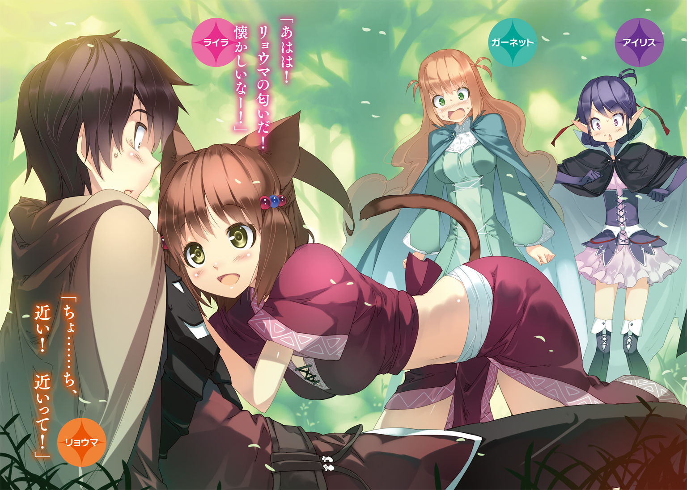
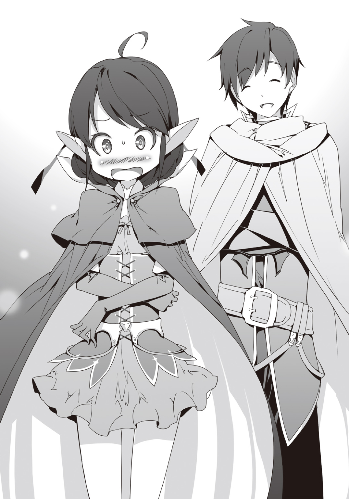

| 逆道の覇王戦記 2 | |
| 空埜一樹 | |

この本は縦書きでレイアウトされています。
また、ご覧になる機種により、表示の差が認められることがあります。


 ダッシュエックス文庫DIGITAL
ダッシュエックス文庫DIGITAL
逆道の覇王戦記２
空埜一樹
序章 強き者を求める少女
目の前に、槌が落ちてくる。
「うわっ!?」
オレは慌てて避けたせいで足をもつれさせ、転びそうになるが、すんでのところで踏みとどまった。
だがまだ終わったわけじゃない。相手は容赦なく、次々とこちらを攻めたててきた。
オレが剣を振るい、相手の攻撃を受け止めるたび、甲高い音が響く。
一撃一撃が尋常じゃなく重かった。おまけに勢い任せに降り注がれるので、防御するのに精一杯だ。とても反撃に出る隙などない。
でも、だからといって、焦りは禁物だ。急いで前に出たところでいいことなんてない。
相手の攻撃を凌ぎながら、一方で動きを少しずつ見極め、反撃の機会を窺うのだ。
無意識的にしろ意識的にしろ、生きて思考するものなら必ず存在する、隙。
それを見つけ出せれば――チャンスは生まれるのだ。
地を踏みしめる音がした。相手が足を後ろに下げている。
ここだ。この瞬間。
大きく槌を振り回すため、彼女は必ず、限界近くまで腰を捻る。
そこから攻撃へと移るまでに、わずかな空白時間が生まれるんだ。
挑むとしたら、今しかない！
オレは気合いを入れ、半ば倒れるように飛び込み、相手へと肉薄した。
彼女の足元ギリギリの地点から、強引に上体を戻し、視線を上げる。
こちら側の思ってもみない行動に、驚いている顔が見えた。
すかさず手に持った剣を勢いのままに突き出す。
「――ここまでだ」
相手の喉元近くで切っ先を止める。
一瞬遅れて、オレに向かって迫っていた得物も、当たる寸前で動きを停止した。
彼女は愛らしい目を丸くして、呆然としていた。
だが、しばらくすると、表情を変える。
「......すごい」
微笑みをたたえ、持っていた武器を落とし、拳を固めた。
「すごいよ、リョウマ！ 初めて、トト様以外の男の人に負けた！」
全力で賞賛されたものの、オレは剣を下ろし、鞘に収めながら苦笑する。
「いや、オレも危なかったよ。ほとんど捨て身の戦法だったから、失敗してたらとんでもないことになるところだった。勝てたのは運がよかっただけかもな」
「そんなことないよ！ あの状態でこっちとの距離を詰めるなんて、よほどの実力と勇気がなければできないことなんだよ？ 全部、リョウマの才能だよ！ 格好いい！」
目をきらきらとさせながら、詰め寄ってくる相手。
あんまりにもストレートな言葉の数々に、オレはさすがに照れくさくなった。
「いや、ありがとう。......お前もすごかったけどな」
「えへへ。それほどでも。だけど、やっぱり外の世界はすごいな。こんな人がいるんだもんね。やっぱりあたし、旅に出てよかった！」
「そうか。そう思えたのなら、よかった」
オレが口元を緩めると、彼女もまた満面の笑みを浮かべる。
「ねえ、リョウマ。またこうやって勝負してくれる？ 負けたままじゃ悔しいからさ」
「ん、ああ。別に構わないよ」
「うん！ 次こそ絶対に勝つからね？」
こちらの手を握り、意気込んで言ってくる相手に、オレは頷いた。
「オレも、もっと鍛えるよ。油断していられないからな」
「いいね！ お互いに頑張って、今よりずっと強くなろう！」
彼女は、元気が溢れ出したような魅力的な笑顔のまま、嬉しそうに応える。
ただそこで、何かに気づいて「あっ」と呟くと、一転して悲しそうに視線を伏せた。
「......でも、リョウマ、この旅が終わったら帰っちゃうんだった」
「ああ......うん。そうだな」
「ずっといるわけには、いかないんだよね？」
「......ごめん。オレはこの世界の人間じゃないから。やっぱりダメだと思うんだ」
おずおずとこちらを見上げてくる相手の、明らかに寂しがっている態度に胸を痛めながらも、オレははっきりと告げる。
すると彼女は、頰を搔いて、小さく顎を引いた。
「そっか。うん。仕方ないよね。わがままでリョウマを困らせちゃいけないしね。......でも、ちょっとだけ、約束してもらってもいい？」
「ん、いいけど......なんだ？」
「もしも。もしもだよ？ リョウマが、アラムヴェルトにもう一度来るようなことになったら......」
こちらの目を真摯に見つめながら、相手は口を開く。
「その時も、あたしと一緒に――」
わかった、と、オレは相手の問いかけに、応えた覚えがある。
実現する可能性が低いことは彼女もわかっていただろう。
それでも尚、求めてくる心を、オレは拒絶できなかったのだ。
いつも明るくて、前向きで、屈託がなくて。
みんなに愛されている彼女が望んだもの。
ほんの――他愛ない、願いを。
オレは、叶えてあげたいと、思った。
第一章 奥深い森を抜けて
アラムヴェルトには、時計がない。
朝、昼、夕、夜と分けて、各国の街の中心部にある鐘が鳴るので、住人はおおまかな時刻程度なら知ることができるんだけど――。
当たり前な話、旅に出ていると聞こえるはずもないので、次第に時間感覚が麻痺してくる。
なのでオレがふと目を覚ました時、眠りに落ちてからどれほど経ったのかがまったく摑めなかった。
周囲には未だ濃い闇が残っていて、外からは微かな虫の音が聞こえてくる。
身を起こしながら欠伸を嚙み殺し、体を伸ばすと、みしみしと骨が軋んだ。
硬い場所で身を横たえたせいだろう。一応、寝床には柔らかい葉っぱや枝を敷いているが、すぐ下は岩肌である。ベッドと同じというわけにはいかなかった。
野宿した時特有の感覚である。三年前も旅の途中、何度も味わったものだった。
「夜明けにはまだ早いか......」
とりあえず、トイレにでも行こう。
そう思って、オレは立ち上がるために手をつこうとしたが――その時。
むにゅり。
掌がえも言われぬ感触を味わった。マシュマロのようでもあるし、よくこねられたパン生地のようでもある。低反発枕のような手応えを感じながら、羽毛布団のような心地よさがある。なにこれ。
むにゅむにゅ。
「......ぁ......」
突如として艶めかしい声が聞こえてきて、どきりとした。
慌てて手をついた場所を見下ろし――オレは絶句する。
「......ダメですよ、リョウマ様......こんなところで......」
滅茶苦茶可愛い女の子が添い寝していた。
金髪碧眼で、テレビに出てくるそこらのアイドルよりずっと完璧に近い顔の造りをしている。
睫の長い目を閉じ、安らかに眠りの世界を堪能している姿は、さながら童話に出てくるお姫様のようだった。
おまけにかけた毛布から少し見えている胸は、規格外な程大きい。寝ている間にずれてしまったのか着ている服の襟辺りが大胆に開いていて、垣間見える蠱惑的な谷間がこの上なくオレを魅了していた。
さっき揉んだのはどうやらこの子の胸だったと気づき、オレは慌てて手を離すと、気まずさに目を逸らした。......が、そこにも試練は待ち受けていた。
「むにゃ......もう食べられない......いやその......いけるといえばいけるが......」
逆側にも、夜明け前の空を思わせるような、紫がかった黒い髪を結わえた超絶可愛い女の子がいる。
無防備な寝顔ながらも、人形みたいな整った相貌は、息を呑む程の美麗さを持っている。
「な、なんだ......なんだ、この状況......」
まさか、また夢でも見ているのか！
だったら早く目を覚まさなくては。いや、欲をいえばもう少し見ていても、寧ろ目覚めない方が......だがしかし！ ああ！ どうすれば！
『なんだ兄弟。どうかしたのか？』
悩んでいるオレに心配そうな声がかかった。誰だかわからないが助かった。何がどうなっているのかオレに説明してくれ。
「すみません、一体どうしてこうなっているのか、知っていることがあれば教えてくれませんか」
『一体どうしてこうなっているのかって、別に昨日と何も変わっちゃいないだろうよ。それともおれがわからないだけで、魔法でもかけられたか？』
「どういうことですか!? 昨日と変わらないって、何があったっていうんですか!?」
オレは救いを求めるようにして、声のした方へと目をやった。
で、硬直する。
『なんで敬語なんだよ。大丈夫か、兄弟。頭でも打ったのか？』
無造作に置かれた鎧が喋っていた。
正確には、ファンタジー系ゲームに出てくる剣士が身に纏う、胸当てのような黒い鎧に描かれた模様が、顔みたいに動きながら。
――喋っていた。
「う、うわああああああああああ!? 鎧が喋った!?」
し、知ってる！ 昔、おじいちゃんに聞いたことがある！ 百年経つと物には魂が宿るんだ！ 付喪神だ！ 妖怪だ！ 悪霊退散だ！
「むむむ、無に還れッ！ 強制成仏ーッ！」
オレはものすごく適当に、前になにかの本で読んだ九字の印を切った。
『......なんだその仕草。兄弟の世界で流行ってるのか？』
しかし鎧は不審がるような声を出すだけで、まったく応えていない。
くっ、やはり、一流の霊能者でなければ効果がないのか......！
『おい、兄弟、しっかりしろよ。ひょっとして寝ぼけてるのか？ 今更おれが喋るからなんだっていうんだよ。お嬢や姫様が起きちまうぞ』
「......え？」
心配そうな台詞に、オレは間抜けな声で返した。
そこでようやく、本当にようやく、オレは我に返る。
目の前にある鎧が、記憶にあるものとして、しっかり認識された。
「......マンゲツ？」
『おう、そうだ。ようやくシャッキリしたか。やれやれだな』
模様の形が安堵した表情のようになった鎧に対して、オレは頭を搔く。
そうだ。そうだよ。寝起きにとんでもない事態に直面して、思わず我を失っていたようだ。ようやく意識がはっきりしてくるのを感じる。
目の前にある――いや、いると表現したい――のは【月輪の鎧】、通称マンゲツ。強靭な防御力を誇り、意志を持った特別な防具だ。
オレの両隣にいる女の子達は、金の髪を持つ方がガーネット。三年前、オレをこの異世界アラムヴェルトに呼び出した、【ティタニア】という国のお姫様だ。
そして、紫がかった黒髪の方がアイリス。とある事情で、オレを再びアラムヴェルトに召喚した【帝国ガルフレア】の皇女様である。
色々あって、オレはガーネットやアイリスと共に、窮地に追いやられた帝国を救うために旅をしていたのだが。
「あー......そうか。夜になったから、野営して寝ることにしたんだった」
昨夜のことを思い出しながら、肩を回した。
人間というのは不思議なもので、頭がはっきりしてくると途端に色々なものを自覚し始める。
今オレ達がいるのは、森の中にある小さな洞窟のはずだった。
「あれ、でも、確かそれぞれ離れたところで寝ることにしたはずなんだが」
二人には、万が一にも問題があってはまずいから、という配慮をしたように見せかけたが、実際はもっと単純な理由だ。
さすがに左右に女の子がいる状態で、しかもこれだけ近距離で安らかな睡眠をとれるほど、オレは肝が据わってはいない。
『おれが言ったんだよ。夜は冷えるから一緒にいた方がいいんじゃないかって』
「なにをとんでもないアドバイスをしてるんだよ。おかげで起き抜けに混乱しただろ」
『落ち着けよ。おれはお嬢にしか言っていないぜ。姫様は対抗するようについてきただけだ』
「そういう問題でもない。大体、アイリス達だって困っただろ」
『まあ、最初はな。ただおれが「お嬢、これは緊急避難行為だ。もし寒気にやられて体調でも崩したらどうする。大事な旅だ。差し支えるんじゃないのか、いや、差し支えるね、断言するよ。差し支える」って親切心で言ったら、顔を赤らめながら「そうか。ならば仕方ないな。差し支えては困る。差し支えてしまうのは、その......そうか、差し支えるのか」と同じようなことを呟きながら、赤らんだ顔で向かったぞ』
「完全に誘導されてるだろ」
『強制はしてねえよ。あと、姫様は「差し支えなくても困ります！」とかわけのわからないことを言って、ものすごい速さで兄弟の左を陣取ったぞ』
「......そうか」
『ありゃ大物になるね。いや、もうなってるのか。とはいえ、お嬢もまんざらでもなかった様子だったし、さすが兄弟。やるじゃねえか。へへっ、体がこそばゆくなってくらぁ』
やすりで磨いてやろうか、とちょっと思ったが、さすがに口には出さなかった。
「とにかく、今後、こういうのはなしにしてくれ。心臓に悪い」
『わかったよ。夜明けまではまだ時間がある。兄弟も寝た方がいい』
そうだな。とはいえ、このままじゃあまりに居心地が悪い。
オレは、場所を移動するために立ち上がろうとした。
「......むにゃ」
しかしそこで、アイリスにがっつりと腕を摑まれる。
「お、おい、アイリス？ どうしたんだ？」
声をかけたが反応はなかった。どうやら無意識の行動らしい。
アイリスはそのままじりじりと近づいてくると、オレの体を這い上り、頰を摺り寄せてきた。
「ふふふ......」
至福の表情で、オレの胸に顔を埋めてくるアイリス。
「ちょ、ちょっと......この状況は......」
非常に不味い。
おまけにいつのまにかアイリスの腕はオレの背中へと回されていて、非常に強い力で抱きついていた。
『おおっと、お嬢が大胆な行動に出たー！ 兄弟はどうするのか、このまま勢いに任せるのか、任せて若気の至りに至ってしまうのか！ 至れ！ 至らなければ男じゃねえー！』
「ちょっと黙っててくれ......！」
小声で叱ると、マンゲツは不満そうに、模様の唇に見える部分を尖らせた。顔文字みたいな表情に、無性に腹が立つ。
以前のようにオレを毛嫌いしなくなったのはいいことだが、たまにこうして本気なのか冗談なのかわからないことをけしかけてくるから対処に困る。
「アイリス、いいから離れろって。やばいって......！」
必死に呼びかけるも、アイリスは顔をしかめて首を振るだけだった。まるで赤ん坊がむずがっているかのようだ。
「......うにゅう......」
しかも奇妙な声を上げて、更に体を密着させてきた。オレの心臓が爆発寸前のように高鳴ってくる。
「アイリス、さすがにこれ以上は――」
と半ば強引にでも彼女を引き剝がそうとした時だった。
「............お父様」
小さく、消え入るような声で、アイリスは呟く。
虚を衝かれてオレは、はっきりと見た。
桃みたいにほんのり赤らんだ彼女の頰を伝う、ひと筋の涙を。
「アイリス......」
やっぱり、まだ、グレディスのことを振っきれていないのか。
いや......当たり前だ。亡くしたのは実の父親で、アイリスはまだオレと同じ歳だ。
普段は気丈に振る舞っているが、心の奥底ではまだその悲しみを引きずっているのだろう。
『お、お嬢......』
マンゲツが悲しげな表情にも似た模様を取った。
オレは息をつき、力を緩めると、引き剝がそうとしていた手を離す。
ゆっくりアイリスの頭を撫でると、彼女は微笑みを浮かべながらしっかりとこっちにしがみついてきた。まるで、愛しいものを決して手放さないというように。
口元を緩めながら、しばらくこのままでいるべきだろうか、と考える。
「......何をしているのですか？」
が、オレの和んでいた心は、背後からの声で一気に冷え込んだ。
振り返らなくても何が待ち受けているのかわかる。だから絶対に振り返りたくない。
だけど、現実は逃避していれば消えてくれるほど甘いものではなくて。
だから――仕方なく諦めて、オレは、ぎこちない動きで首を回した。
まるで錆びついた人形のように、少しずつ、後ろを向く。
「何をしているのですか、と、尋ねているのですが」
やがて見えてきたのは、予想通り、目を覚ましたガーネットの姿だった。
ただ、彼女は怒っていたのではない。笑っていた。
まるで美術館に飾られる絵画のように神々しく、慈愛を感じさせるような表情を見せていたのだ。
しかし、オレには感じ取ることができた。
天使のような笑顔の裏に潜む、悪魔のようなおどろおどろしい怒りの感情を。
「い、いや、これは、ええと......」
しどろもどろになるオレは、救いを求めてマンゲツの方を見る。頼む兄弟。この窮地を脱することのできる、画期的な方法を授けてくれ！
『......ぐーぐー』
兄弟は寝ていた。
「噓つけええええええ！ お前、寝ないだろうがああああああああ！」
だから夜の番を頼んでたんだろうがっ！
全力で突っ込んだが、マンゲツは尚もわざとらしく『ぐーぐーぐー』と寝息を立てていた。しかも、
『寝ています。マンゲツは寝ています。何を言っても無駄です頑張ってください。あー。寝てますよー。ふふふふーん』
とご丁寧に睡眠中アピールをしてきやがった。あとで硬い岩にぶつけてやる。
「リョウマ様？ わたくしの方を見てください。わたくしの目を見てください」
い、嫌だ！ まともに会話できる自信がない！
「リョウマ様に後ろめたいことがないのであれば可能なはずです。もし無理であるというのであればわたくしも相応の処置を取らせていただきます。ただわたくしは信じています。リョウマ様はそのような不埒な真似はなさらないということを。ですからまずわたくしの目を見てください」
言葉が一本調子で怖い！ 絶対信じてないパターンだろ、これ！
「リョウマ様！ こっちを向いてください！」
「は、はい！」
だが悲しいかな、女の子が本気で怒れば男なんて弱いものだ。
オレは急ぎ振り返ると、ガーネットと視線を交わし合った。
「よろしい。で......一体どうしてこんなことになったのですか？」
「い、いや、違うんだよ。誤解なんだって」
「どう誤解なのですか？ 一体いかなる経緯があればアイリスがリョウマ様に抱きつきあまつさえリョウマ様が優しげな顔で彼女の頭を撫でるということに至るのですか？ 今すぐ二十文字以内でわたくしの納得いくように説明してください猶予はないですよ噓や誤魔化しは通じませんすぐにわたくし見抜きますからねさあどうなのですかリョウマ様!?」
「ひいいい！ ごめんなさい！」
もうなんでもいいから許してください！
「......う......」
胸元からアイリスの声がした。起きたか!? よかった！
「なあ、アイリスからも説明してくれよ。お前、ただ寝ぼけていただけだよな。そうなんだよな!?」
オレは慌てて確認を取った。
「おなかへった」
「......はい？」
アイリスは半目を開けたままぼんやりとした口調で言って、
「――いただきます」
顔を上げると、オレの首筋に小さな唇を当てた。
そのまま、ぺろ、と舌で舐めてくる。
「はう......っ!?」
思わずぞくりと反応してしまった。
「............」
不気味な沈黙を経て、弁解の余地を与えられる間すらなく。
「リョ・ウ・マ・さ・まああああああああああああああッ！」
隣で、火山が大爆発を起こしたのだった。
「あー......ひどい目に遭った」
げんなりとしながら、オレは深いため息をつく。
結局あのあと、ガーネットの誤解を解くために多くの時間を費やし、気がつけば東の空から昇ったお日様は高くなっていた。おかげで寝不足だ。
『まったく、誰に責任があるわけでもない、不幸な事件だったぜ』
近くにある岩に載せていたマンゲツが声を出した。
「三割くらいお前のせいな気もするけどな」
『なにを言う。おれが一体何をしたっていうんだ、兄弟』
「何もしなかったから悪いんだろ！」
お前が寝たふりなんかせずにきちんと説明してくれていれば、ガーネットの導火線に火が点くことはなかったかもしれないんだ。
『ハハハ、兄弟が何を言っているのかわからないぜ。なにせおれは安らかな眠りの世界で妖精達と戯れていたからなあ』
あまりにも清々しく噓を突き通すマンゲツ。腹が立ったので足元にあった石を投げつけてやった。
『痛いっ!?』
小気味よい音と共にマンゲツはぐらつき、そのまま後ろへと倒れていった。
『おい、兄弟！ 起こしてくれ！ このままじゃ一生転がったままだ！』
「ははは。何を言ってるのかわからないな。オレは寝てるから。ぐーぐー」
思いきり棒読みで言ってから相棒を突き放し、オレは朝の作業に戻る。
今行っているのは、枯れ木や枯れ葉を集めて焚き火を起こすことだ。朝食を作る流れである。
旅をするにあたり、保存の利く食料は十分持ってきていたが、干し肉やら乾いたパンばかりで味気ないといえば味気ない。
ならばできる限りは現地調達しようということで、アイリスやガーネットとも、意見が合致していた。
食材の調達は三人で分担すると決め、二人は周辺へ探しに行っている。
もちろんオレもサボっているわけではなく、一足早く三人分を確保した上で、二人が戻ってくる前に一通りの準備を終えておこうというわけだ。
「よし......こんなもんかな」
太い枯れ木と細い枯れ木を組み合わせ、それに向かってオレは口の中で小さく呟いた。
「【紅よ、我の命にして灯火を点さん】」
魔法を呼び起こすための呪文のような言葉――【魔導言語】によって、空中に小さな火が生まれた。
火は火口となる枯れ葉に燃え移り、しばらくすると勢いを増す。
やがて現れた巨大な炎が、パチパチと音を立てた。
オレは傍に置いてあった食材を手に取ると、焚き火の近くの地面へと突き刺す。
近くに流れていた川で捕れた魚に串を通したものだ。日本で見かけるイワナとかヤマメといったものに姿が似ていて、白身であっさりとしているが、適度に脂も乗っていて美味しい。アイオウオといって、アラムヴェルトでは比較的簡単に釣れるものらしい。
尤も、オレは魔法で川の中で爆発を起こし、ショックで仮死状態になった魚を捕まえたので、正攻法とはいえないが。
三年前まではキャンプさえしたことのない現代っ子だったオレも、かつての冒険を経て随分とサバイバルの腕を上げた。旅の道中では野宿なんて当たり前だから、技術が身につくのは必然だったといえるけど。
「そういや中学で林間学校に行った時は、みんなにびっくりされたっけな」
自然に還ろうというお題目で山に登り、テントを張るところから火を起こしたり食事を作ったりするまで、全て自分達でやらなければならなかったのだが。
他のみんなが悪戦苦闘する中、オレだけが難なくこなしていくので、非常に珍しがられたのだ。誰が流したのか、子どもの頃は野戦地帯で生きていたらしいという噂まで流れて、対応に苦慮したものだった。
『リンカンガッコウってなんだ？』
「みんなで共同生活を送って絆を深めようっていう行事だよ」
『へえ。なんでリンカンって言うんだ？ みんなでやるからか？ そう、輪......』
「それ以上言ったらまた石投げるからな」
口を開けばろくなことを言った試しがない。
オレはやれやれと思いながら、魚の焼き加減を確かめていた。すると、
「リョウマ様、お待たせしました！」
ガサガサと音を鳴らして草むらからガーネットが現れた。彼女の腕の中には、様々な種類の野草が抱えられている。
「お疲れ。なにかあったか？」
「ええ。運のいいことにモニモ草がありました。これでスープを作ることができます」
ガーネットはオレの足元に野草を置いて、微笑みを浮かべた。
モニモ草とはつる草の一種だが、水で煮るとどういうわけかコクのあるいい出汁になる。味としては昆布に近く、しっかりとした塩味もするので野営をする時には重宝していた。
「じゃあ、鍋を用意しないとな。悪いけど、魚を見ていてくれ」
言い残してオレは寝床にしていた洞窟へ戻り、小さな鉄製の鍋を持ってくる。これは、ティタニアを出る時、国王様からいただいたものだ。特殊な鉱石を混ぜているらしく、丈夫でしかも熱伝導がいいのですぐ湯が沸くという優れものである。
「はい。他にもアシナカの実やトイーカンの花など、食用にできるものが幾つかありましたので、持ってきました」
「お、いいな。じゃあ、それも纏めて鍋に入れてしまうか」
美味いスープができそうだ。
オレは空っぽになった胃が動き出すのを感じながら、腰元に提げた革製の袋から鍋に水を注いだ。手近にあった焚き火用の木と麻縄を組み合わせ、簡易な台を作ると、上に鍋を載せる。これで底を焦がさずに火の上で煮ることができるというわけだ。
「魚の方もそろそろいい感じですね。あとはアイリスが戻ってくるのを待つだけです」
「だな。それまでちょっと休憩するか。飲み物は？」
「いただきます。確か檸檬水がまだありましたよね？」
頷いてからオレは、傍に置いてある鞄から先程とは別の革袋を取り出した。中には水に檸檬を搾って蜂蜜を加えた飲み物が入れてある。アラムヴェルトでは大人から子どもまで好まれているもので、疲労回復にもちょうどいいから、旅人には必需品となっていた。
ガーネットが差し出した二つの陶製の器それぞれに檸檬水を入れ、オレ達はアイリスを待つ間にひと息つくことにした。
「......ふふ。なんだか懐かしいですね」
檸檬水を一口飲んでから、ガーネットは口元を緩める。
「三年前も、こうしてよくリョウマ様と朝食を共にしました」
「......ああ、そうだな。あの時はもっとたくさん人がいたけど、同じ歳ってこともあって、ガーネットや他のお姫様、王子様とかとよく話してたっけ」
「ええ。まさかあの時は、またこうして旅をするなんて思いもよりませんでしたが」
それはオレだってそうだ。
今のガーネットはお城にいる時のようなドレス姿ではなく、可愛らしいデザインながらも動きやすい旅装束に身を包んでいる。
三年前も同じような感じでいたことを思い出すと、なんだか奇妙な気持ちになってしまった。
「まるで、まだ三年前の旅を続けているみたいだな」
「......そうですね」
少しだけ笑いを漏らし、ガーネットは膝を抱える。
「ですがリョウマ様はあの時と変わってしまいました」
「ん？ そうか？」
自分としてはほとんど自覚がないんだが。
「ご自身ではお気づきになられていないかもしれませんが、わたくしと出会った時よりも更に精悍で逞しく、また何事に対しても堂々とされるようになりました。......率直に言って、素敵です」
「......そ......そう......かな」
ど直球で褒められると、さすがに落ち着かなくなってくる。
「ですが変わらないところもあります。弱い人を見捨てられず、誰かを救うために身を挺し、己が傷つくことなど少しも厭わない。三年前からずっと、リョウマ様はご立派な精神をお持ちになられています」
「い、いやいや。いくらなんでも言いすぎだろ。オレはあれだぞ。結構、間抜けなところも多いんだからな？ 今朝のことだって、迂闊だったし」
「フフ、あれはわたくしも少々、寛容な心を持つべきであったと反省しています。確かにリョウマ様は時折失敗をなさいますが、それすらも愛すべき美点であると思いますよ。完璧で何の穴もない人間など、つまらないものですから」
「......参ったな。でも、ガーネットだってすごいと思うぜ。三年前もそうだけど、今回もお姫様なのに苛酷な旅に同行してさ」
皇帝討伐の最初こそ、お城育ち故の気苦労が多く大変そうだったが。次第に旅に慣れてくると、オレなんかよりよっぽど役に立っていた。
まあ......一緒にいたお姫様の中には、最初から余裕で道中を過ごしていた子もいるにはいたんだが。
「全ては己の役割を果たしているまでです。三年前もそうですが、今回も......アイリスにはひどいことをしてしまいましたから。償いになるとは思いませんが、少しでも彼女の手助けになればとついてきた次第です」
と、ガーネットが沈んだ顔で零したので、オレは首を横に振った。
「自分の役割に従うってこと自体、なかなかできるものじゃないんじゃないか？ オレの世界じゃ、立場を悪用して勝手をしたり、本来やるべきことからは逃げてばっかりの奴も多いしさ」
特に大人には、子どもに対しては偉そうにあれをしろこれをしろと命令するくせに、いざ自分のことになると言い訳をしてうやむやにしてしまうようなのがたくさんいる。
「オレと同じ歳で国を背負ってやるべきことをきちんとやるって、ガーネットにとっては普通かもしれないけど、実際はかなり難しいことだと思う。そういうところ、尊敬するよ」
「まあ......リョウマ様」
目を見開き、頰を赤らめると、ガーネットは薔薇みたいな赤い唇を笑みへと変えた。
「嬉しいです。他のどなたに認められるより、リョウマ様にそう言っていただける方が何倍も」
ガーネットの伸ばした手がオレの手に触れ、握り締めてくる。彼女はしばらくそのまま黙り込んでいたが、
「......リョウマ様。あの日に聞けなかったお返事。わたくし、待っていますから」
唐突にかつてのやりとりが思い起こされて、オレの心臓はこの上なく高鳴った。
なんのことだ、ととぼけるほど、オレも間抜けじゃない。
――わたくしのことを、どう思っておられますか？
三年前に別れる時、ガーネットにそう訊かれたが、答えられなかった。
再び召喚された時も、色々なことがあって、結局返事を先延ばしにしてしまったのだ。
もちろんオレだって、このままなし崩しにするつもりは毛頭なかった。
きちんと自分の気持ちを伝えなければならないという決意はあるのだ。
だけど、今この場で、となると、ちょっと待ってくれと思ってしまう。
こういう土壇場になって狼狽えるところは、以前と変わらず情けない。
だけど、逃した機会が再び巡ってきたのだ。
オレは深呼吸を繰り返し、己に問いかけた。
今はアイリスがいない。だったら、タイミングはここなんじゃないか。
男を見せろ黒瀬亮真。こんなに可愛い女の子を待たせてばかりじゃ、あまりにも不甲斐ないとは思わないのか。
「そう、だな......」
言え。言うんだ。どうなってもいい。当たって砕けろ！ いや、砕けたら困るけど！
「......ガーネット」
オレは意を決してガーネットの手を握り返した。
ガーネットは驚いたように体を竦ませたが、やがて覚悟をしたかのように身を引き締める。
「は、はい。なんでしょう、リョウマ様」
「あの時の返事なんだけど......オレ、さ」
喉を鳴らす。胸の内で暴れる心臓がうるさい。少しだけだ。少しだけでいい。大人しくしてくれ。
「オレ......ガーネットのこと......」
さあ、躊躇うな。今だ。今しかない。言え。言うんだ、リョウマ......！
「ガーネットのことが――」
『わああああああああああああああああああああああ！』
「うわあっっ!?」
いきなり大声を出されたので、反射的に素っ頓狂な言葉が漏れてしまった。
『うわあああああああああああ！ 火事だあああああああああああ！』
「え、か、火事ですか!? どこ、どこです!?」
ガーネットは立ち上がって辺りを忙しげに見回し始める。
『あっちだあああああ！ 北の方でなんか焦げ臭いぞおおおおおお！』
「あっちですね！ わ、わかりました！」
慌てたようにガーネットは走り出し、場から姿を消していった。
「............」
あとには呆然とするオレだけが残される。
『......ふう。危ないところだったぜ』
いや、もう一人いた。正確には一つだ。
オレはゆっくりと腰を上げると、騒ぎの張本人がいる場所へ行き、見下ろした。
『お、どうした兄弟。いやしかし、今日はいい天気だよなあ。風も穏やかだし、雲もなく快晴で気分がよくて、歌でも歌いたくなる気分で......』
「地獄で好きなだけ歌えええええええ！」
オレはマンゲツを持ち上げると、遠くの空へと投げた。
『ぎゃぼすっ！』
放物線を描いて飛んでいったマンゲツ、いや、もう、こいつなんてただの鉄塊と呼んでやる。鉄塊は、派手な音を立てて地面に落ちた。
『なにすんだ兄弟！ ひでえじゃねえか！ おれに一体何の恨みがある!?』
「お望みなら手紙にでもしたためて詳しく教えるが？」
殺意の籠もった声で告げると、さすがに鉄塊は黙り込んだ。
オレはもう一度鉄塊を持ち上げて、怒りを込めた眼差しを向ける。
「なあ、なんで邪魔をする？ 今、すごくいいところだったよな。思わずお前が喋る鎧だって忘れるくらいにいいところだったよな。なんで邪魔をする？ 冥土の土産に聞いてやってもいいぞ？」
『よ、よそうぜ兄弟、そんな、おれがこのまま終わること前提の話し方......』
鎧の表面に描かれた紋様が、眉をへの字にした困り顔に変わった。
『しょうがないじゃねえか。あのままだと兄弟の三年間に渡る想いが成就されそうだったんだからよ』
「それの何が悪いんだよ」
これでも、一世一代の勇気を振り絞ったんだぞ。
『困るんだよ、おれは。目的が果たせなくなっちまう』
「なんだよ、お前の目的って。オレと関係あるのかよ」
『んなの決まってんだろ。兄弟とお嬢をくっつけるんだよ』
「は!?」
『あ、くっつけるって言っても比喩表現だからな。物理的にじゃないぞ。いやまあ、男女も恋愛感情が行き着くところまで行くと物理的にくっつくんだけど、うへへへ』
「もう一回投げられたいのか」
『ごめんなさい......』
チャンスがあればシモネタをぶちこもうとする癖、なんとかしてほしい。
『おれはよぉ、兄弟。お前を評価してるんだ。最初こそ、グレディスの旦那を倒した憎たらしい小僧だと思ってたけど、お前はなかなか度胸がある。そんじょそこらにいる男とは格が違うって思ってるんだ』
「......それで？」
『だからよ、お前にならお嬢を預けてもいいかって思ったんだよ！ 本音で言えば男のところなんざ行ってほしくはねえが、さすがにおれもそこまでわがままは言わねえ。なら、どこの馬の骨ともわからねえ野郎のところへ嫁に行くよりは、せめておれが信用できる奴に任せようっていう、そういう親心なわけだよ。わかるだろ？ な？』
「まあ......いや、気持ちはわからないでもないけど」
なんと言ったらいいのか。オレは頰を搔いた。
「でもそれはアイリス自身が決めることだろ？ 無理矢理くっつけようとするのはよせよ」
『なに言ってんだ兄弟。鈍いにも程があるぜ！ お嬢はとっくにお前にホの字だっていうのによ！』
「......いや。いやいやいや」
さすがにそれは......まあ、嫌われてないとは思うけど。
恋愛感情とは別のものだと思うんだが。
『なんだぁ、男気あるくせに本当、乙女心ってのを理解してない奴だな。まあ、いいか。とにかく、おれはお嬢と兄弟を恋人同士にするって決めたんだ。だからガーネットの姫様には悪いが、おれが傍にいる限りは全力で邪魔させてもらう。全てはお嬢のためだ』
「お前、そんな勝手な......」
『こればかりは兄弟でも聞き入れることはできねえぜ。グレディスの旦那がいない今、おれにはお嬢しかいないんだ。お嬢が幸せになるためなら、外道と呼ばれてもおれは構いやしねえ』
鉄塊......いやまあ、マンゲツに戻すか。マンゲツの口調は、あまりに揺るぎないものだった。こいつはこいつで、自分の役割を果たそうとしているらしい。
『それに兄弟だってまんざらじゃないはずだ。ガーネットの姫様と同じくらい、お嬢だって魅力的だからな。本当は好きなんじゃないのか？』
「ば......馬鹿言うなよ」
そりゃ、絶対ないかと言われれば、否定しにくいところはあるけど。
......でも、なんだ。オレはそんな、二股をかけるような最低男に成り下がるつもりもなくて。
『それにもし兄弟が姫様とくっついたら、お嬢は悲しむだろうなー。この上なく悲しむだろうなあ。滂沱の涙を流し、それはやがて帝都を満たし水中へと沈めるだろうなあ』
「お、お前！ 卑怯だぞ!?」
こっちの罪悪感を増長させて躊躇わせるつもりか！
『まあ、ゆっくり考えろよ、兄弟。自分のことなんだからな』
散々プレッシャーをかけておいて、素知らぬ顔で、マンゲツはこちらにウインクした。
なのでもう一度地面に投げ捨てた。
『ぼげぶっ！』
うむ。ちょっとだけスッキリした。
『ひ、ひでえぜ兄弟。おれはただ......おれはただ、お嬢にだなぁっ！』
「私がどうかしたのか？」
まだ何かを言おうとしたマンゲツを遮ったのは、アイリスの声だ。
食材の調達を終えたのだろう。腕の中に色とりどりの何かを抱え込んでいた。
「ああ、いや、なんでもない。マンゲツが鳥に突かれて転んだだけだ」
オレが朗らかに笑って手を振ると、アイリスは首を傾げながら地面に横たわるマンゲツを見下ろした。
「なにをしているのだ。大丈夫か？」
『いや聞いてくれよお嬢。兄弟ったらひどいんだぜ。おれが純情な心で、兄弟とお嬢の仲を』
「あ、お肉が飛んでる！」
オレは明後日の方向を指差し、アイリスが「なに、肉が!? 奇跡!?」とそちらを見た瞬間、風の魔法を放ってマンゲツを吹き飛ばした。
何度か地面にぶつかりながら最終的に洞窟の奥まで飛ばされ、マンゲツは漫画みたいにぐるぐる目玉の模様を浮かべて、黙り込んだ。
......ちょっとやりすぎたかな。まあ、あいつは頑丈だから大丈夫だろうと思うけど。あとで謝っておこう。
「むう。肉など飛んでおらぬではないか。私の胸の高鳴りは無駄になったぞ」
可愛らしく頰を膨らませながら抗議してくるアイリスに、ごめんと謝った。
「おや？ ところで、マンゲツはどこへ行ったのだ？」
「さっき、また鳥に突かれて洞窟まで転がっていったぞ」
誤魔化しながらオレは話を変えるためにアイリスへ尋ねる。
「ところで朝ご飯の食材は何をとってきたんだ？」
「おお、そうだそうだ。喜べリョウマ。とてもいい物を発見したぞ！」
喜色満面で、腕の中にあるものをオレに差し出してくるアイリス。
それは様々な種類のキノコだった。
「野営地で食料を探すなど初めてのことで戸惑ったが、いや、何とかなるものだ。意外にも私には隠れた才能があったのかもしれぬ」
ふふん、と誇らしげに胸を張るアイリス。
ただ、オレはどうにも戸惑いを隠せなかった。
「いや......あのな、アイリス」
「む？ どうしたのだ？」
きょとんとしながら訊き返してくるアイリスに、オレの見解を伝えるべきかと悩んでいたのだが、
「もう、火事なんてどこにも起こっていないではないですか。マンゲツは噓つきですね」
文句を言いながらガーネットが戻ってきて、アイリスの後ろから声をかけてきた。
「あら、アイリス。食材は見つかりましたか？」
「おお、ガーネット。見ろ、これを。キノコがたくさんだ！」
ガーネットの元へ走り寄るアイリス。
「い、いや、アイリス、だからな!?」
傷つくかもしれないが、仕方ない。オレは真実を伝えようとした。
「あら、こんなにたくさんとってきたんですね。素晴らしいです」
だがその前に、ガーネットが告げる。
「ただアイリス、これ――ほとんど毒キノコですけど」
「ふぇ!?」
どさどさと音を立てて、キノコが地面に落ちる。
「ば、バカな!? そんなはずはない！」
跪いて、山になったキノコから一つを取り出し、オレ達に見せるアイリス。
「これなど、見た目が派手でいいではないか！」
「ボランクスキノコ。食べると半刻で吐き気及び眩暈を起こし、大量に摂取すると死に至ります」
ガーネットは丁寧に説明した。
「な、ならばこれは!? 実に味わい深い色合いをしている！」
「バマリンダケ。一口食べただけで全身痙攣を起こし、腹痛と頭痛を伴ったあと、死に至ります」
「い、色が明るいのはダメなのか。よし、これだ！ これなら地味だろう！」
「アイアットキノコ。味は美味しいですが、一刻もしない内に麻痺と幻覚を引き起こす上、キチナムシという寄生虫が卵を植えつけているため、卵が孵ると胃を食い破って死に至ります」
「ならばこれだ！ これこそが私の求めていたキノコなのだっ！」
「バジナダケ。匂いを嗅ぐだけで死にますよ」
「ひいあああああ！ 基本的に死に至るものしかない！」
アイリスは急いで手に持っていたバジナダケを放り投げた。
「うう......そんな......あれだけ苦労して手に入れたのに......」
見るからに落ち込んだ様子で、地面に手をついて嘆くアイリス。
「い、いや、アイリス、ほら。まだ旅に出て間もないんだから、いきなりは無理だって」
慰めるオレにガーネットもまた同調した。
「そうですよ。わたくしだって三年前はそうでした。少しずつ学んでいきましょう」
ガーネットに頭を撫でられ、アイリスは「すまぬ......すまぬ」と言いながら目元を拭う。
「まだまだ私には経験が足りぬな......これではガーネットと同じく姫や王子が旅をしていたティタニア以外の【四大聖国】に認められることなど難しい。前途多難とはこのことだ」
はあ、とため息をつくアイリスにオレは苦笑した。
「まあ、経験が足りてないってのは否定できないかもしれないけど。だからって以前とまったく同じってわけでもないだろ」
オレは足元に転がっていたキノコを摑むと、アイリスに見せた。
「ほら、これ。リカーナダケっていうんだけど、焼いて食べると歯応えがあって美味しいんだぜ」
「それも死に至るのだろう？」
「至らない至らない。な。全部が全部失敗ってわけでもない。失敗の中にちょっとだけ成功があるんだ」
地面に膝をつき、視線を合わせると、オレはアイリスに言った。
「たくさんの失敗から学んで、少しの成功を記憶に留めて前に進むんだ。そうすれば、最終的には成功の方が大きくなってるもんだよ」
「......リョウマ......」
目を見開いたアイリスは、次第に、笑みを浮かべていく。
「そ、そうだな......ありがとう！ やはりリョウマは頼りになる！」
オレの手を握ると、アイリスは嬉しそうに飛び跳ねた。
「と、とにかく、アイリスも戻ってきたことですし、朝食にしましょう。いつまでもここにいるわけにはいきませんからね」
咳払いし、ガーネットはオレの空いた手を取って焚き火の方へと戻ろうとする。
「あ、ああ、そうだな」
やや強引に導かれながら、オレはアイリスと共に戻り、朝食を取ることにした。
魚を食べ、スープを飲み、唯一とれた食用のキノコを炙って三人分に分ける。
腹が空いていたこともあって、全ては瞬く間に胃に収まってしまった。
「ところで......リョウマ様。目的地はもう近いのでしょうか？」
食後に再び檸檬水を口にしながら、ガーネットが尋ねてくる。
オレは魚の頭を齧りながら、鞄を引き寄せ、中から羊皮紙を取り出した。
「オレの記憶が確かなら、多分、もうすぐだと思う」
焚き火から離れたところで広げたのは、アラムヴェルト全体を描いた地図である。
「ティタニアから出発した我らが、今いるところは、ここだったな」
覗き込んだアイリスの指がお城のような記号を差し、滑るように動いてある地点で止まる。
そこは緑色に塗られた地帯が延々と広がっており、中央にぽつんと、先程と同じ記号が描かれていた。
記号の横に書いてある文字を、残念ながらオレは読むことができない。
ただ、三年前にも立ち寄ったことのある場所だったので、まだしっかりと覚えていた。
「そうだ。オレ達が今いるのは【深淵の森】と呼ばれる場所。で――目指しているのは、ここ」
オレは真ん中の辺りを指先で叩く。
「――戦族が住む国【シュトルライデン】の首都【バハーク】だ」
アラムヴェルトには、ガーネットのようにオレと見た目があまり変わらない人族をはじめとして、様々な種族が存在する。
戦族とは、獣のような尻尾と耳の生えた人達で、魔力はあまりないが驚異的な身体能力を誇る。
ティタニアの騎士団長であり、オレにとって剣の師匠と呼べる存在、ロザリもまた戦族だった。
ティタニアとの和平条約を締結し、次へ向かおうとしたオレ達にシュトルライデンへ向かうよう助言してくれたのも、ロザリである。
彼女はシュトルライデンの王に向けて、できるだけ協力してくれるように頼む手紙をしたため、オレ達に持たせてくれた。
絶対とはいえないが、いくらかは効果があるだろう。
そう言ってくれたロザリに感謝しつつ、ならばということで、次の目的地に決めたのだ。
シュトルライデンはほとんどの土地が鬱蒼とした森に囲まれており、慣れない人間が入り込むと方向感覚をなくして迷ってしまう、といわれていた。
おまけに魔獣も多く棲息しており、生半可な実力では首都まで辿り着けない。
よって他国との交易や対外的な交渉には森の入り口に作られた窓口で行うことが普通であり、王族の元へ直接行くことは滅多にないとされていた。
ただオレ達はいわば、無理なお願いをする立場だ。
いくらなんでも王を森の入り口に呼びつけるわけにはいかないだろうと、こうして森を横断して向かっているところだった。
「戦族の王とはどんな人間なのだ？」
地図を眺めながら、アイリスが質問を投げかけてくる。
「そうだなあ。なんというか......豪快な人かな」
三年前のことを反芻しながらオレは答えた。
「そうですね。それに、とてもお強い方です。三年前も、魔法は使えませんが、巨大な斧を片手にどんな相手だろうと叩き伏せておられました」
ガーネットが続くと、アイリスが「ふむ」と相槌を打つ。
「ティタニアの、ロザリといったか。彼女と比べればどうなのだ？」
「比べものにならないな」「比べものになりませんね」
オレとガーネットの声が重なった。アイリスはやや引いた様子を見せる。
「そ、そうなのか。彼女も相当な実力者だったが......」
「なにせロザリを幼い頃から鍛えていたのが、シュトルライデンの王様だからな」
「なんと。それではつまり、リョウマの師匠の師匠か」
そういうことになる、とオレは頷いた。
「リョウマ様も随分と気に入られて、可愛がられていましたね」
くすりと笑うガーネットに、オレは微妙な気持ちになる。
「あれは可愛がられていたというかなんというか......まあ、いいか」
不思議そうな顔をしているアイリスに「そのうちわかるよ」と言って、オレは腰を上げた。
「さて、そろそろ行くか。今日中にはついておきたいからな」
「ええ、そうですね。半日もあれば到着するでしょう」
ガーネットが鍋や食器などを片づけ始める。
「大変なことが待ち受けているとわかってはいるが、少し楽しみだな。バハークとはどのような街なのだろう」
好奇心に目を輝かせるアイリスにオレは口角を上げながら、洞窟の奥にいるマンゲツを拾いに行った。
「ほら、マンゲツ。そろそろ起きろ。行くぞ」
『......兄弟、あんまりじゃねえか。いくらおれでも怒るぜ』
「ごめん、悪かったって。でも、お前が余計なこと口にするからだろ」
マンゲツを持ち上げて身に着けながら答えると、紋様が目を細めてむくれた。
『別に痛みはないが、自分が物のように転がるのはなんとも情けなくなってくるぜ』
「物のようにっていうか、物だけどな」
『違うぞ、兄弟！ おれはたとえ自分が道具でも喋ることができる以上、人のようにして生きたいと常ながら秘めた想いを抱えていてだな！』
マンゲツがくっちゃべるわけのわからない信念を、オレは話半分で聞き流していたのだが。
――突然、辺りから凄まじい咆哮が聞こえて、模様の口のような部分を押さえた。
『もががっ！』
「ちょっと静かに。......今のはなんだ？」
ガーネットやアイリスも気づいたようで、注意深く辺りを窺っている。
「二人はここにいてくれ。確かめてくる」
オレは警戒してガーネットとアイリスに声をかけるが、二人は同時に首を振った。
「そうはいきません。リョウマ様が参られるならわたくしも参ります！」
「私とてそうだぞ！」
「いやでも、何があるかわからないし......」
言い含めようとしたが、そんなことで収まるような気性の二人じゃなかった。
「何があるかわからないからこそ、共に参るのです！」
「その通りだ！ 我ら、旅に出た以上は一蓮托生、リョウマだけを危険にさらすわけにはいかん！」
「お、オッケー。了解した。了解したから、ちょっと声を落として......」
相手に気づかれてしまう。
「いいことを言いましたね、アイリス。共にリョウマ様を守りましょう！」
「うむ、心得た！ よろしく頼むぞ、ガーネット！」
意気投合してるところ悪いけど、君達!? 状況わかってる!?
「二人とも、そのあたりにしておかないとどんな危険が......」
待っているかわからない。
と、最後まで言う前に――オレは背中にぞくりとした寒気を味わった。
「リョウマ様、後ろです！」
ガーネットの声に素早く振り返る。
だが、既に眼前へと、それは迫っていた。
最初に目に入ったのは剣のように鋭い二本の牙だ。続いて大きく開かれた顎門の奥に赤い口腔が見えたと思うと、オレに向かって嚙みついてきた。
「――来い、【リベリオン】ッ！」
だがオレは冷静に叫んだ。一陣の疾風が吹き荒び、目の前に影が現れる。
静かな森に、鋭い音が響き渡った。
人間の頭くらいなら簡単に砕き割れそうな牙は、しかし、オレとは違う物に喰らいついている。
滑らかな光沢を放つ刃と、装飾の施された鍔を持つ、華美な長剣だった。
アイリスの父親でもあり、かつて恐ろしい力を誇った皇帝グレディスを打ち倒した、オレの愛剣だ。
空中に浮かんだリベリオンの柄を握り、オレは渾身の力で相手を蹴った。
悲鳴を上げながら敵は口から刃を放し、悔しそうに後退する。
距離が開いたおかげで、ようやく襲撃者の全容が明らかになった。
ライオンと虎をごちゃ混ぜにしたような姿をしていて、豊かな毛並みと、先ほど確認した長い牙が特徴的だ。
「剣牙獣か......厄介だな」
リベリオンを構えながらオレは呟く。以前にも出会ったことがあった。動きの素早い魔獣で、特別な能力はないが、とにかく攻撃が当てにくかったはずだ。
剣牙獣が吼えた。地面を蹴って、再びオレに牙を剝く。
咄嗟に地面に手をつくと横に逃れた。地面を転がりながら体勢を整え、相手が次の動きに出る前に突撃する。剣を振り翳し、大上段からの一撃を下した。
しかし斬り裂いたのは空中。相手の体は霞のようにかき消えていた。
同時に右から気配を感じる。オレは前に出ながら振り返り様、刃を薙いだ。
だが一瞬遅かった。剣牙獣は大きく飛び上がり、空中からオレを狙って前脚を振るう。
「【炎よ。我が意に沿いて、汝が身より灼熱を吐け】！」
しかしその巨体は業火に包まれ、悶え苦しみながら落下した。
地面を転がりながら必死に火をかき消そうとするも、なかなか上手くはいかないようだ。
「お怪我はありませんか、リョウマ様！」
魔法を放ったガーネットが、安否を気遣ってくる。彼女の手には、装飾を施された高価そうな杖が握られていた。ティタニアを出る時、持ち出したものだ。
オレは笑みを返すことで、無事を伝えた。
やがて剣牙獣は唸りを上げながら再び立ち上がる。体の所々が焦げてはいるものの、致命傷には至らなかったようだ。
森中を震え上がらせるような咆哮を発し、殺意に満ちた眼差しを向けてくると、三度目の攻撃を開始した。
正面から向かってくる相手に対してオレは剣を正眼に構え、呼吸を整える。
敵の姿が徐々に、徐々にとこちらへ近づいてきた。
「リョウマ様、避けてください！」
「リョウマ！ 危ないぞ！」
二人の声が聞こえたが、オレは反応しない。まだだ。まだその時じゃない。
やがて剣牙獣は獰猛な仕草で地面を蹴り、オレに飛びかかってきた。
――よし！
「【束縛せよ、森羅の力たる翠の主よ】！」
オレが魔導言語を紡ぐと、魔法が発動した。周囲の草木が一斉に伸びると、縄のように剣牙獣を束縛する。
魔獣は必死に抵抗するが、すぐには束縛は解けないだろう。
オレはリベリオンを肩に担いで、一歩踏み出した。
「行くぞ......！」
集中すると共に、刃が光を放出する。リベリオンは持ち主の魔力を物理的なエネルギーへ変換させる力を持っているのだ。
「――斬り裂け、リベリオンッ！」
大きく振り払った剣身から、衝撃の波動が空中を走った。
飛翔する波動の刃は剣牙獣を吹き飛ばし、巨体が後方の木へと激突する。目を見開いた剣牙獣はずるずると滑り落ち、気絶するかに思われた。
しかし、あと一歩というところで体勢を持ち直し、涎を垂らしながら尚も敵意を向けてくる。
「しつこいな......くそ」
そういえばこいつ、かなりタフなんだった。どうする。もう一撃加えるか？
「リョウマ、あとは私がやる。下がってくれ！」
だがアイリスの声が聞こえ、そうか、と思い出した。
軽く後ろに跳んで着地すると、代わりに先ほどまでオレがいたところにアイリスが滑り込む。
「【光よ。我が手によって集結し】」
アイリスが右手を突き出し、魔導言語とは違う言葉を唱えた。
すると彼女の前の空中に金色の光が集まり、大きな刃のようになる。
「【敵を倒す剣となれ】！」
虚空を駆け抜ける一条の光が、剣牙獣の体を真っ向から貫いた。
魔獣がわずかな痛みを感じるように小さく鳴いて――直後、体から漆黒の靄のようなものを生み出した。
それはやがて空中へと流れていき、やがては溶けるように消えていく。
すると、剣牙獣は先程の暴れっぷりが噓であったかのように、こちらへきょとんとした顔を向けた。
さらに首を傾げながら辺りを見回したあと、小さな鳴き声を出すと、ゆっくりその場から去っていった。
拍子抜けするくらい、あっさりとした終わり方だった。
「さすが【輝術】......魔獣相手には効果覿面だな」
ほっとして胸を撫で下ろす。
「相手を殺さず戦意だけを喪失させる。素晴らしい技ですね」
ガーネットが手を叩くと、アイリスは頰を染めて照れくさそうな顔をした。
「なにを言う。リョウマやガーネットの協力あってこそだ。これは三人の成果だぞ」
確かにそうかもしれないけど、不必要に命を奪わずに済んだのは、間違いなくアイリスの功績だ。オレは彼女に、ありがとう、と礼を言った。
「しかしこの森は本当に魔獣が多いな。昨日も相当戦ったはずなんだが......」
一体どれくらいの数がいるのだろう、とオレは考える。
「戦族はこのような森の真ん中に、何故首都を構えたのだ？」
アイリスが、可愛らしい顔をしかめて疑念を呈した。
「戦族は、戦うことこそ生きる意味である、という信念をお持ちの方々ですから。わざと魔獣と存分に干戈を交えることのできる土地を選んだのでしょう」
ガーネットが埃を払いながら答える。
「男女関係なく、小さい頃から魔獣と戦うことで経験を積んで、誰よりも強い人間になることが何よりの誉れなんだってさ」
オレは昔に聞いたことを思い出しながら言った。まるでどこぞの戦闘民族のようである。
『要するに滅茶苦茶酔狂な奴らってことか。脳味噌が筋肉でできてる奴らと話し合いをするのは骨が折れそうだぜ』
マンゲツの口の悪さをたしなめるように、オレは鎧を軽く叩いた。
「しかしこう魔物との戦いが続いたのでは、さすがに体力が持たないな。早く首都へ到着した方がよさそうだ」
アイリスの意見は尤もだ。オレ達は荷物を片づけて、急ぎ出発することにした。
「ところで戦族の王に、私やガーネットのような姫、もしくは王子はいるのか？」
鞄を背負ったアイリスが尋ねてくる。
「いるよ。王子様が二人と、あとはお姫様が一人。尤も、戦族の場合は王子や姫じゃなくて若とか嬢様とか呼ばれてるみたいだけどな」
「王も普段は族長と呼ばれていたはずでしたね」
ガーネットが続いたので、オレは頷いた。
戦族は元々、遊牧民族で世界を渡り歩いていたようで、数も少なかったため、国と呼べるほどのコミュニティを築いていたわけではなかったらしい。呼び名はその時の名残だろう。
「......しかし懐かしいな。シュトルライデンのお姫様か」
何を隠そう、先程、ガーネットとの会話で思い出したのが、その件の人物のことである。
「どのような娘なのだ？」
アイリスからの質問に、オレは荷物を肩に担ぎながら、返した。
「そうだな。まあ、なんだろう。......元気な子かな」
間違ってはいないはずだ。三年前も、苛酷であるはずの皇帝討伐の旅を、彼女は寧ろ楽しんで過ごしていた。
「少々、元気すぎるというか、やんちゃといいますか。悪い子ではありませんけど」
ガーネットが苦笑気味に、つけ加えた。
「ほう。そうか。なんとか友好的な関係を結べればいいのだが......」
腕を組み、思案気な表情を作るアイリス。
「あー。まあ、大丈夫じゃないか？ あの子なら」
「そうですね。少なくとも他の国よりは」
だがオレとガーネットから交互に告げられて、アイリスは「そ、そうなのか？」とやや戸惑うように瞬きを繰り返した。
が、そんな和やかな会話は、唐突に途切れる。
「......待った」
歩き出していたオレは足を止めて、後ろに続くアイリスとガーネットを制するために腕を水平に伸ばす。
二人も周囲の変化に気づいたようで、背中越しに緊張が伝わってきた。
唸り声が、四方から聞こえてくるのだ。
全てが似たような音律を持っていて、発生源が何であるのかは容易に想像がついた。
『また剣牙獣か。それも複数。厄介だな......』
マンゲツの言う通りだ。草むらに隠れて、少なくとも四、五匹の剣牙獣がこちらを狙っていた。先程の奴の仲間だろう。完全に囲まれてしまった。
「参ったな。あいつらが集団で行動するってことを忘れてた......」
「どうするリョウマ。戦うか？」
アイリスが慎重な態度で確認をとってくる。
「さすがにこれだけの数を相手にするのは、ちょっと難しいな」
勝てないわけじゃないが、連携を取ってこられると、全員が無傷というわけにもいかないだろう。しかし、だからといって逃げるというのも大変そうだ。
『あんまり悩んでいる暇はなさそうだぜ、兄弟』
「......そうですね」
マンゲツの呼びかけに、ガーネットが同調した。
「そろそろ――来ます！」
彼女の言葉と共に、剣牙獣達は統率された動きで一斉に襲いかかってくる。
だが、全てはこちらへ届く前に弾かれて地に伏せた。
オレ達の周りが、ドーム状になった半透明の壁に囲まれていたからだ。
『畜生どもめが。そう簡単にやられると思うなよ！』
マンゲツが勝ち誇ったように叫んだ。
「そうか。お前の力があったな、マンゲツ」
鎧に向かって言うと、模様がニヒルな笑みを浮かべた。
マンゲツは魔法によって作られた特別な鎧で、喋る他にもある特殊な力を宿す。
魔力によって『壁』を作りだし、物理的な攻撃と魔法を弾き返すのだ。
「でもいつまでもこうしてはいられないな。何か手を考えないと」
オレは悩みながら頭を搔いた。残念ながら、マンゲツの作る壁は移動しながら展開することはできない。
剣牙獣達は警戒するようにオレ達の周りを回り、時折、苛立ったように爪を立てて壁を引っ搔いていた。
「リョウマ様、マンゲツの壁を解くと同時に、わたくしが全方位に向けて魔法を放ちます。相手がたじろいだ隙をついて逃げ出しましょう」
ガーネットが提案する。確かにそれはいい案かもしれない。
「よし、乗った。みんな、走る準備をしておいてくれ」
オレが告げると、アイリスとガーネットはそれぞれ強張った表情のままで頷いた。
「......マンゲツ、オレが今だって言ったら壁を消してくれ。いいか」
『了解、兄弟。いつでもいいぜ』
「よし。それじゃあ......三......二......一......今だッ！」
指示と共に壁があぶられた飴のように溶けて消えていく。
剣牙獣達が、待っていましたとばかりに歓喜の咆哮を上げた。
しかしすかさずガーネットが両手を広げ、魔導言語を唱え始める。
「【疾風よ、竜のように舞い、翼を広げ全てを振り払え】」
が、しかし。オレは重大なことに気づいた。
ガーネットの近くの草むらが揺れ、中からもう一匹の剣牙獣が現れたのだ。
彼女は驚いて魔導言語を中断し、身構えるが、もう間に合わなかった。
反射的にオレは地面を蹴ると、彼女を引き寄せるために手を伸ばす。
だけど無情にも目の前で、鋭い魔獣の牙がゆっくりと見知った顔に突き刺さろうとしていた。
「ガーネット――ッ！」
思わず喉をからして叫んだ、その直後。
「おりゃああああああああっ！」
傍に生えていた木の上から力強い声が響き、やがて葉っぱと共に誰かが飛び降りた。
巨大な何かが落下の勢いをつけて振り下ろされ――剣牙獣の頭を直撃する。
凄まじい異音が発生した。
与えられた衝撃に耐えきれず、魔獣は地面へと突っ伏し、白目を剝く。
巨大な何かの正体は、ハンマーだった。
謎の人物は重量感のある鉄塊によってできたそれを軽々と振り回したあと、肩に担ぐ。
てっきり筋骨隆々なガッシリ系の男かと思ったが、違った。
女の子だったのだ。
しかも、ガーネットやアイリスに負けず劣らず、滅茶苦茶可愛い。
サラサラな栗色の髪は、色鮮やかで民族的な飾りによって幾つかの房になっていた。
日焼けした肌はしかし染み一つなく滑らかで、健康的な色香を漂わせている。
団栗のように大きな目に小さな唇を持つ顔立ちは、野性味と同時に愛嬌を持ち合わせている。
裾がふわりと広がる形のスカートには変わった紋様が刺繡されており、上半身は極めて薄いシャツ一枚。おかげでガーネット程ではないものの、豊満と呼べる胸の形がはっきりとわかった。というか、激しい動きをすればうっかりこぼれてしまいそうだ。
突然の乱入者に、剣牙獣達は警戒するように前傾姿勢をとった。
「フフフ......」
女の子は不敵な笑みを浮かべてハンマーを地面へ下ろすと、大きく息を吸い込む。
刹那――。
「アオオオオオオオオオオオオオオオオオオオオオオンッッ！」
強烈な叫びを迸らせた。
その迫力たるや筆舌に尽くし難いもので、騒音どころかもはや兵器の類である。
思わず耳を塞いだが、それでも尚聞こえてくる程で、うっかりすれば脳がシェイクされて気絶してしまいそうだった。
森全体がびりびりと震え、まるで地震さながらである。
突如として起こった異常事態に、さしもの剣牙獣達も怯えたように何歩か退いた。
「......これでわかったでしょ。あたしはあなた達が勝てるような相手じゃないよ」
堂々と胸を張り、女の子は魔獣達を睥睨する。
「それでもまだやるっていうなら――相手になるけど？」
オレは、全身に鳥肌が立つのを感じた。
恐ろしいまでの殺気が、女の子の体から放たれている。
人間でも察知できるくらいだ。本能に従う獣からすれば、彼女の姿が本来の何倍にも大きく見えていることだろう。
やがて剣牙獣達は少しずつこちらから距離を取ると、尻尾を下げ、互いに目配せをした。
直後、踵を返して、全てが逃げていく。
「よし。賢い選択をしたね」
うんうんと満足そうに頷く女の子。
......あれ。っていうかこの子、どこかで見たような気がする。
オレは女の子の頭の上と、お尻の上辺りから生えたものを見て既視感を覚えた。
犬を思わせるような、耳と尻尾だ。
それ自体は、戦族の国なんだから別におかしいことじゃないんだけど――。
「どなたかはわからぬが感謝する。危ないところだった」
必死に記憶の棚を引っ搔き回していると、アイリスが女の子に向かって頭を下げた。
「いいっていいって。ちょっと人を捜して森をうろついてたら、声が聞こえたからさ」
女の子は振り返って、人好きのする笑顔を浮かべた。
「ところで訊きたいんだけど、この辺りで男の子を見なかった？」
「男の子？ どなただろうか」
「うーんとね。黒い髪で、なんか、ちょっとぼんやりしてる感じなんだけど、やる時はかなりやる！ って感じの」
説明に首を傾げ、アイリスの眉根に皺が寄る。
「おかしいなあ。匂いがしたから絶対この辺りにいると思うんだけど......」
と、女の子の視線が少しずつ動き――オレの前で止まった。
「あの......オレからも礼を言うよ。ありがとうな」
遅れて、アイリスと同じように頭を下げた途端。
「......リョウマ？」
女の子が、呆気にとられたように零した。
「え？ なんでオレの名前を......」
「......ッ！ やっぱりリョウマだ――ッ！」
あっという間の出来事である。
オレは両手を広げた女の子に飛びつかれ、そのまま押し倒されてしまった。
「なっ！ な、な、なんですか、あなたはっ!?」
ガーネットが慌てて引き離そうとするが、女の子はまったく微動だにしない。
「リョウマ、リョウマ、リョウマー！ 会いたかったー！ 君の匂いがしたから、もしかしてって思って里を出てきたんだよ！」
女の子がオレの首元に顔を埋め、ふんふんと鼻を鳴らした。
「あはは！ リョウマの匂いだ！ 懐かしいなー！」
「ちょ......ち、近い！ 近いって！」
完全に胸が当たっているので、どぎまぎするどころの騒ぎじゃない。全身が沸騰して死んでしまいそうだ。
『おい、犬みたいな真似してる女！ 兄弟から離れろ！ こいつはお嬢のモンだ！』
「な、なにを言っているのだマンゲツ！ わわわ、私は別にそんな、そそ、そんな！ マンゲツ！」
顔を真っ赤にして否定するアイリスに、ガーネットも頷いた。
「そ、そうです！ リョウマ様は別にどなたのものでもありません！ その......あの、ちょっとだけ、わたくしのものであったりするのかもしれませんが」
「ず、ずるいぞ、ガーネット！ 一人だけ！ わ、私のもちょっとだけあるかもしれないじゃないか！ なにせ彼は我が国の皇帝だ！」
「いいじゃないですか！ 以前はわたくし達の味方なんですから、わたくしにだってちょっとくらい取り分があっても！」
一体なにを争ってるんだ。申し訳ないがそろそろ助けてほしい。
「あの、ご、ごめんなさい。申し訳ないんだけど、覚えてないみたいです。あなた、誰なんですか？」
オレの問いかけに、ずっとこちらの匂いを嗅いでいた女の子がやっと体を起こしてくれた。ただ、彼女の下半身がずっとオレの股間を押しているので、色々のっぴきならないことになりそうな気もするのだが。
「えー、ひどいなあ。ひょっとして忘れたの？」
不満そうに頰を膨らませて、女の子は言った。
「三年前はあれだけ一緒に旅したじゃん。そりゃ、あたしも少しは変わったかもしれないけどさー」
「......え？」
おいちょっと待て。じゃあ、まさか。
「ま、まさか、お前......」
震える指で、オレは、女の子を差した。
「ライラ――ライラなのか!?」
「へ？ ライラ!? そうなのですか!?」
アイリスと口論していたガーネットもまた驚いて振り返る。
女の子は「やっと思い出したかー。遅いよリョウマ」と嬉しそうに頷いた。
「そうだよ。あたしはライラ。ライラ＝トールニクス！」
オレの体に手を添え、前かがみになった状態で快活な笑みを浮かべる。
「リョウマ、知り合いなのか？」
アイリスが訊いてくるのに、オレは久方ぶりに会う懐かしい顔を見ながら、
「あ、ああ。もちろん。アイリス、彼女がそうだ。さっき話してた――」
呆気にとられたままで、言った。
「――戦族の、お姫様だ」
第二章 強き者達の国
ライラ＝トールニクス。
戦族の王にとって唯一の娘であり、かつての皇帝討伐の旅でも同行していた子だった。
とにかくいつでも元気で明るく、三度の飯より動き回ることが大好きという人間で、趣味は自分より強い相手と戦うことである。
確かに一目で彼女だと気づけなかったオレは、完全に悪かったが――。
「それにしても、変わりすぎじゃないか!?」
ライラの案内で首都へと向かう道中、思わずオレは突っ込んだ。
確か三年前はもっと体が小さかったし、顔も幼かったはずだ。
「そういえば聞いたことがあります。戦族は我々よりも成長が早く、たった数年でも見違えるようになることがあると」
ガーネットが思い出したように告げた。
「まー、確かに前とは大分違っちゃったけどねえ。あたしとしてはあんまり自覚ないけど。ただ、胸はやたら大きくなっちゃって困ったよ。動きづらいから」
ライラは言って、ハンマーを持った方とは別の手で、薄着の胸元に指を入れて大胆に開ける。豊かな曲線どころか、先端部分まで見えそうになった。
「し、しまいなさい！ 今すぐ！」
慌てて止めたオレに、ライラは不思議そうに首を傾げる。
「むう。ということは三年前はそれほどでもなかったのだな。さすれば私にもまだ希望はあるのか......？」
何やらぶつぶつと呟きながら、アイリスは自分の胸を押さえる。
「ところでリョウマ、なんでまたこっちの世界に来たの？ 皇帝倒して帰ったんじゃなかったっけ？」
ライラが大きな目をくりくり動かして訊いてきた。
「あー。うん、色々あってな。そのあたりを国王様に会って話したいんだ」
「そうなんだ。まあ、いいや。じゃあ、あたしが連れていってあげるね」
にこにことしながら、ライラはオレの手を摑んだ。
「......ライラは随分とリョウマに懐いているのだな」
背後から、アイリスの囁くような声が聞こえてきた。
「ええ。旅の途中でリョウマ様の強さを見て惚れこんでしまったらしくて。その時からあの調子です」
ガーネットもまた、ため息交じりに返す。
「ガーネットがいるってことはティタニアに寄ったんだ。ロザリは元気？」
「え？ ああ、おう。相変わらずあんまり喋らなかったけどな」
「あはは。やっぱりか。まあ、ロザリが決めた生き方だもんね。あたしは好きだよ」
無邪気な顔で言って、ライラはオレの手を引き、率先して進んでいく。
やがて、いつまでも続くかのように思われた森は、次第に開けていった。
かわりに見えてくるのは、ぽっかりと穴が空いたような広い土地にある集落だ。
いや、集落と呼ぶには、いささか巨大すぎる程の規模があった。
「ようやく着いたか......」
安堵の気持ちでオレは呟く。
「見ろ、アイリス。――あれが、シュトルライデンの首都、【バハーク】だ」
ほぅ、と感心するようなアイリスの声。
尤も首都とは戦族以外の種族がそう呼んでいるだけで、ライラ達なんかは『里』と言っている。ともあれ――オレ達は、ようやくバハークへと足を踏み入れることができた。
戦族は自然と調和することをよしとする種族で、ガルフレアやティタニアのように石畳と漆喰を利用した西洋風の街並みを好まない。
だから、木材と大きな葉を組み合わせたログハウス風の建物が目立つバハークは、花や果実が溢れていることもあって、南国の村へ来たような印象を受けた。
「のう、リョウマ。バハークの家々は何故あのようなところにあるのだ？」
アイリスがオレの隣に並んで上の方を指差す。
視線を上げると、そこには大きな樹木の枝に乗った家屋があった。
彼女が指摘したところだけじゃない。基本的に、バハークの住居は全て樹の上に建てられている。
「シュトルライデンの国土のほとんどは森が占めてるからな。魔物が村や街に攻めてきた時、簡単に家へ入り込めないようになってるんだよ」
「上から石とか落として迎撃して、それでもダメなら直接打って出るって感じなんだよ」
オレの説明をライラが補足してくれた。
「なるほど。生活の知恵というものだな。帝都とはまた趣が違って興味深い」
好奇心を刺激されたように、アイリスは目を輝かせる。
「ほえ、帝都？ 見覚えないけど、そっちの子は帝都から来たの？」
ライラが意外そうに目をしばたたかせた。
「あ、ああ。まあ、そんなところだ。ライラ、とりあえず国王様のところまで案内してもらえないか？」
今ここで全てを明らかにするのは少し都合が悪い。オレが急いで言うと、ライラは特に異論を挟まず了承してくれた。
「わかった。でもちょっと待って。一応、挨拶しておく」
そう言ってライラは口元に手を添えると、首都中に響くような大声を出す。
「お――いッ！ みんな――ッ！ 帰ってきたよー！」
すると周りの住人全員がこちらを向き、ライラが手を振るのと同時に、歓声を上げた。
果物を運んでいた人や、談笑していた人、樹の上にいた人から追いかけっこをしていた子ども達まで、みんなが集まってくる。
やがて、誰もが口々にライラの名前を親しげに呼んで、彼女のことを囲み始めた。
「驚いたな。王の娘だというのに、民とこれほど近い距離で向かい合っているとは」
住人達と友達のように話すライラを見て、アイリスが呆気にとられた様子で呟く。
「シュトルライデンは他国と違ってあまり身分や階級にはこだわりません。王と臣民というより、どちらかといえば、尊敬する人につき従う仲間達という構図ですね」
ガーネットが言うと、アイリスは益々関心を深めたように息をついた。
これも戦族の特徴の一つだろう。国というよりは大きな家族という感じがして、オレは好きだ。
「ねえねえ、みんな。びっくりしないでね。ほら、リョウマだよ！」
住人達との会話が一区切りついたところで、ライラがオレを紹介してくれた。
みんながオレの方を見て、目を丸くする。
「なんと、本当だ。リョウマ様だ」「ですがリョウマ様は元の世界に帰られたのでは？」「なんにせよまたお会いできるとは、やれ嬉しや」「今日はいい日になりそうね」
あっという間にオレを中心にして円が作られ、誰もが口々に言葉をかけてくる。
次いでガーネットが紹介されると、同じようにして賑やかに歓迎された。
「お久しぶりです。ちょっと事情がありまして、またアラムヴェルトにやってきました。お邪魔します」
オレとガーネットが挨拶をして頭を下げると、住人達はわっと沸いて、一斉に手を差し出してきた。
掌には果物やら魚やら干し肉やら、色々な物が握られていて、オレにプレゼントだと言って笑顔になる。
さすがに全部は貰えなかったけど、腕に抱えられるだけ抱えて、オレは礼を言った。
懐かしいな。前に来た時も、こうやって歓迎されたっけ。
「よし。ちょっとリョウマをトト様に会わせるから。みんな、またあとでね」
ライラが手を叩くと住人達は綺麗に左右へ分かれ、オレ達の道を作ってくれた。
様々な人達から声をかけられながら、オレ達は里の奥へと進んでいく。
立ち止まったのは、目を見張るほど大きな樹の前だった。
多分、数十人以上の大人が手を繫いだとしても囲みきれないだろう。
青々とした葉を生やした大樹の真ん中辺り、数本の太い枝を支えにして、立派な建物が存在していた。
「アイリス、あれがシュトルライデンの王、ギオスが住んでいるところ――いわば王宮だ」
オレが遙か高くを見つめながら言うと、アイリスは無言で頷く。
表情は見てわかるほど強張っていて、緊張がこちらにも伝わってきそうだった。
「そんじゃ行こうか。あ、ちなみにそこの初めて見る女の子、名前はなんだっけ？」
「ライラ、それは――」
「アイリス。アイリス＝ナクナ＝フェルモントだ」
ティタニアを訪れた時と同様、王と対面する前に名を知られると面倒なことになるかも、と思って遮ろうとしたのだが、アイリスがさらっと口にしてしまった。
「お、おい、アイリス......？」
「リョウマの気遣いはありがたい。だがライラは王の娘だ。訊かれた以上は答えなければ無礼に当たるだろう。それに、ガーネットがいる以上は以前ほど無下に扱われまい」
確かにそうかもしれないが、ちょっと危ない賭けかもしれないぞ。
オレは恐る恐る、ライラの様子を窺った。
「アイリス......ナクナ、フェルモント......」
呟きながらライラは首を傾げ、しばらくしてから言った。
「長い名前だね！ わかった！ アイリスって呼ぶよ！」
笑顔のまま前を向くと、ライラは王宮へと続く長い階段を先導して昇っていく。
「......何の反応もなかったな。あえて知らない振りをしているのだろうか。なかなかの傑物だな」
アイリスが腕を組み、感心したような口調で話す。だけど、
「あー。......そういやライラはそうだっけか」
オレとしては三年前のことを思い出して、なんともいえない気持ちになっただけだ。
「懐かしいですね。旅の道中も何度か経験しましたが」
ガーネットも微苦笑を浮かべて、ライラの背中を見つめた。
『どういうことだよ、兄弟』
マンゲツが眉を顰めて問いかけてくる。
「いや、なんていうか、ライラはこう......常に前向きなんだよ。だからあんまり過去に捉われないっていうか」
『なんだそりゃ、意味わかんねえぞ』
「わかり易く言いますと、細かいことは気にしない。もっと言ってしまえば、とても忘れっぽいのです」
ガーネットの言葉にアイリスがきょとんとした顔を作った。
「それはつまり......ナクナ＝フェルモントの姓を単に失念しているだけということか」
「そういうことになるな」
まあ、運がよかったと言うべきか。
「......戦族とは皆そのような、おおらかな者達なのか？」
アイリスが迂遠な言い回しでライラのことを表現した。
「全員がってわけじゃないけど、まあ、大体は。戦族は元々、為政をする立場でも、自国を守るために策略を巡らせたり、他国を利用するためにずる賢く交渉したりとかっていう、頭を使うやり方は好きじゃないんだ」
『要するにやっぱり脳味噌筋肉馬鹿ばっかってことじゃねえか』
「要しすぎだろ、それは」
マンゲツに注意しながら、オレは頭を搔いた。
「でもまあ、だからこそ和平交渉っていっても、小難しい政治的なところは絡んでこないと思うんだが......」
その分、ストレートな感情で拒絶される恐れはある。
「......まあ、やるだけやってみるか」
いよいよ本番だ。オレは深呼吸してから、ライラのあとを追った。
建物の中に入り、ライラに案内されたまま向かった先は、他国で言うところの謁見の間だった。
屋根は椰子の葉にも似た材料で作られており、微かな木漏れ日が差し込んでいる。
広い室内は柔らかな藁が敷き詰められ、その上に細かく編み込まれた絨毯が敷かれていた。
独特の紋様を持つ生地は、ファンという戦族が飼う家畜の毛を糸にしたあと、色料で染め上げており、いわばシュトルライデンに伝わる伝統技術だ。
「ただいまー！ トト様、アニ様達、ライラは今帰りました！」
入口に立って、ライラは叫んだ。
「おお、ライラ！ どこへ行っていたんだ。何も言わずに飛び出していったから心配したぞ」
部屋の最奥に座していた若い男の人が立ち上がり、急ぎ足で歩み寄ると、ライラを抱きしめる。
男の人はもう一人いて、彼もまた嬉しそうに近づくと、ライラの頭を撫でた。
「お前、本当、雲みたいに捉えどころのない奴だな。いつか婿になる男の苦労を考えると、今から同情するぞ」
双方どちらもライラと同じ栗色の髪をして、一房だけに彼女と同じ飾りをつけていた。
細かな刺繡の施された衣装を身に纏っていて、服の上からでも体格のよさがわかる。
日に焼けた精悍な顔つきは、見るからに野に生きる人という感じだ。
ああ、覚えてる。確か、ライラのお兄さん。つまり、シュトルライデンの王子様達だ。
ライラと違って、あまり見た目は変わっていなかった。初めて出会った時、二人は既に二十歳は過ぎていたと思うから、それくらいになると成長は止まるのかもしれない。
「なにを言っている、オイデン。ライラは嫁には行かん」
「将来的な話をしてるんだろ、フィノス。いくらライラが可愛くても、いつかは誰かの妻になるんだ」
二人はライラを挟んで互いに顔を突き合わせ、いきなり言い争いを始めた。
「決めつけてもらっては困る。ライラの旦那になるのは、おれ達が認めた男だけだ。生半可な奴に大事な妹をやるくらいなら、一生おれが養った方がマシだ」
「いい加減にライラから離れろよ。だからお前はいつまで経っても結婚できないんだ。俺だってライラを嫁にやるのは惜しい。だがこいつの幸せを願うなら耐えるべきだ」
「しかしな、オイデン。考えてもみろ。こんなに可愛らしく飛び回っているライラが、おれ達以外の男の元へ行き、尽くすのだぞ。もし相手がこいつのことを粗末に扱っていたらどうする。苦労させていたらどうする」
「フィノス......お前な......。そんなもの、乗り込んでいってぶっ飛ばしたあと、魔獣の餌にでもしてやるに決まってるだろ？」
「だとすれば、相手のことを考えてみてもライラの夫候補は慎重を期すべきだ。もし完全完璧に認められないのであれば、ライラはずっとおれ達の傍に置く」
「ふむ......しかしそんな男はそう現れるものでもないぞ。たとえば、そう、クロセリョウマのような男じゃなきゃな」
「ああ、そうだな。あいつならライラを任せられる。しかしリョウマは三年前、この世界を去った」
「実に惜しい話だよな。今ここにいたら、ライラを嫁にやってもよいのに」
「そればかりはおれも同意しよう。もし今ここにいたらの話だがな」
「いるわけないんだけどな......」
「いるよー？」
オイデンとフィノスが言葉を交わすたび、頭一つ分下から彼らのことを交互に見ていたライラが、突然声を発した。
「なにを言ってる。リョウマがここにいるわけないだろ？」
「そうだぞ、ライラ。あまり適当なことを言っては困る」
「いるってば。ほら」
ライラがオレのことを指差した。二人がこっちへと視線を移す。
「ど......どうも。ご無沙汰してます」
なんと言えばいいかわからず、とりあえず無難に挨拶しておいた。
「おお、リョウマ！ リョウマではないか！」
「ちょうどよかった、リョウマ！」
オイデンとフィノスがライラの背を押してオレの方へ寄越してくる。
『――ライラを嫁にもらってくれ！』
と、唐突すぎる！ っていうか、あなた達、オレがここにいることに関しては気にならないのですか!?
「あ、あの、いきなりそんなことを言われましてもですね......」
「不束者ですがよろしくお願いします」
ライラも受け入れんな！
「なんだ、ライラのことが気に入らないのか？ こいつはいい女だぞ。少し自由すぎるところはあるが、狩りの腕は一級だ。晩飯には困らん」
「そうだぞ、リョウマ。こう見えて料理や家事もそこそこできるし、おまけに身体付きもよくて夜にも困らない。こんな素晴らしい妹のどこが不満だ？ ん？ 言ってみろ。ほら、今すぐ言ってみろ」
「さあ早くしろ。我らを納得させるだけの理由でなければ、残念ながら無事にシュトルライデンから出すわけにはいかないぞ」
「さあ、さあ、さあ！」
「さあさあさあさあ！」
壁みたいに大きい男の人二人から、ものすごい迫力で理不尽に責められている！ 怖い！ 不良にカツアゲされるよりずっと怖い！
「ちょ、ちょっと、勝手なことをなさらないでください。リョウマ様は誰の夫にもなりませんよ!?」
「そうだ！ リョウマは我が国の皇帝となったのだ。い、いずれ、万が一、そういうことになったとしても、その、あれだ。嫁ぐのは私だ！ いや、仮の話だがな!?」
ガーネットとアイリスがオレとライラの間に入り込んだ。ああ、なんか、話がもっとややこしくなりそうな気がする。
『お嬢、遠慮することはねえ。もっと言ってやれ。床上手なら負けてはいない。経験豊富ではないが熱意では負けてねえと！ 堂々と！』
お前は一生喋るなマンゲツ。
「お前達、静かにしねえかッ！」
その時、突如としてとてつもない怒声が響き渡った。
あまりにすごい声量で、この大きな建物が吹き飛んでしまうのではないかと思ってしまう。
オイデンとフィノスはさっきまでの勢いが噓みたいに黙り込み、さっと身を引いた。
代わりに姿を現したのは、見上げなければ全身が把握できないくらい、大きい男の人だった。
年齢は四十代前後。武骨というのが一番相応しい顔つきに、不精髭がびっしりと生えていて、目つきの鋭さと相まってまるで山賊の親玉だ。
鳥の羽を連ねた首飾りに、鈍い光沢を持つ黒い鎧を身に着け、変わった紋様が染め抜かれた麻布のズボンを穿いている。
背中から見えているのは棒状の物体で、先端部分には三日月みたいな形をした刃と、槍の穂先がくっついていた。
戦斧と呼ばれる武器で、かなりの力がないと扱えない代物だ。
「リョウマ......彼はもしや？」
背中越しに投げかけられたアイリスの問いに、オレは小声で答える。
「ああ、そうだ。ギオス＝トールニクス。シュトルライデンを支配する王で――ライラのお父さんだよ」
それにしても......うーん。三年経っても相変わらず、まともに対峙するのにかなりの度胸がいる人だ。
「ライラ......お前、どこへ行っていた」
低く、地を這うような声で、ギオスさんが尋ねた。ライラに向けられた眼差しはまるで視線で射抜くかのような迫力を帯びていて、胆力がある人間以外はまともに直視できないだろう。今のオレみたいに。
「トト様、ただいま。ちょっと懐かしい匂いがしたからさー、探しに出てたんだよ」
「俺の許可も得ずにか？」
「うん。急いで行かなきゃ見つけられないかもって思って」
ライラの言葉にギオスさんの眉がぴくりと動いた。
「言ったはずだな。お前は俺の娘。即ちシュトルライデンの姫だ。もし迂闊に里から外へ出て何かあったら、取り返しのつかないことになると」
「うん。わかってたけど、我慢できなかったんだ。ごめんね」
舌を出して謝るライラ。ギオスさんの目つきが鋭さを増す。
「リョウマ......何やら不穏な空気が漂っているぞ。これは不味いのではないか」
アイリスが不安がるのも無理はない。実際、ギオスさんの体から迸るオーラ的なものは、いつ爆発してもおかしくない、一触即発な雰囲気を伴っていた。
「ライラ......」
一言だけ、呟いて。直後。
「ライラアアアアアアアアアアアアアアッ！」
突如として、ギオスさんは鼓膜が破れるかと思うほどの叫びを発した。
「うわ!? リョ、リョウマ、ライラを助けなくては！」
「うん、まあ、そうだよな」
慌てるアイリスに対してオレは至極冷静に言う。
「そうですね。三年前もわたくし達は同じことを思いました」
ガーネットもまた、過去を思い出すようにして続いた。
「二人とも、なにを落ち着いているのだ！ こ、このままではライラが――！」
見過ごしてはいられない、というように、アイリスが動き出そうとした瞬間。
「あんまり俺を、心配させるなあああああああああっ！」
ギオスさんは、両手を広げてライラを抱きしめた。
「この父が、どれほどお前のことを心配したと思ってるんだ！ いきなり飛び出してもし森で魔獣に襲われでもしたら、いや、川に落ちて流されでもしたら、いや、崖から落ちて怪我でもしていたら、もしくは転がってきた岩に押し潰されていたら、土砂に飲み込まれていたらと、怒濤の如く嫌な想像が頭を巡っただろうがああああああ！」
「......は？」
足を止め、アイリスがぽかんとした表情を作る。
「安心していいぞ、アイリス。ギオスさんはな」
「ものすごく甘いのですよ。――ライラに」
オレとガーネットが告げると、アイリスは「......はあ」と気の抜けた声を漏らした。
『兄貴も親父も娘にべた甘かよ。お嬢の行動は阿呆のようじゃねえか』
マンゲツが呆れたような顔になる。
「三年前も結構大変だったんだよなあ。ライラがオレ達の旅についてくるって言ったら全力で反対されてさ」
「一度は置いていったんですけど、荷物に紛れてついてきたんですよね」
ガーネットの言葉に頷く。それからなし崩し的に旅の同行者になったのだが、事あるごとにギオスさんがライラを気遣うので、そのたびに歩みが止まったものだった。
「大丈夫だよ、トト様。あたしはなんともないからさ」
「そんなことを言ってもお前なあああ！ 俺は、俺は、ライラ......俺はあああああ！」
もうまともな台詞にすらなっていない。相変わらずのやりとりだった。
「ねえ、トト様。そんなことより、リョウマがまたこっちの世界に来てるんだよ。トト様に用事があるんだって」
「......なに？ リョウマが？」
やっと落ち着いたみたいで、ライラに言われてギオスさんはこちらを向く。
「ん、そういえばリョウマは三年前に元の世界へ帰ったんだっけか」
「なんでまたここにいるんだ？」
兄弟二人も今更すぎる疑問を口にした。
「お久しぶりです、国王様。少し事情があってまたこの世界に呼ばれまして......」
「剣を抜け」
「......は？」
いきなり言われて面食らう。なんだって？
「剣を抜け、と言っている」
ギオスさんはライラのことを放し、兄弟共々に距離を取るよう指示してから、背中の戦斧の柄に手をかけた。
「――行くぞ！」
躊躇している暇なんかない。ギオスさんは大きく一歩踏み出すと共に、凄まじい勢いで戦斧を振り下ろしてきた。
「うわっ!?」
慌ててリベリオンを抜いて受け止める。刃がぶつかった瞬間、高い金属音と共にとてつもない重量がのしかかってきた。
まるで、上から山でも降ってきたような感じだ。歯を食い縛り、広げた足をふんばってバランスを取ることでなんとか耐え忍ぶ。
「おおおおおおおおおおおおおおおおっ！」
だがそれで終わりじゃなかった。ギオスさんは立て続けに、恐ろしい速度で攻撃を連続させてきた。
鋼を鋳造したものであるというのに、戦斧は樹の枝みたいに軽々しく扱われる。常識を超えた動きで、得物が何本もあるかのように残像を残した。
オレは一つ一つを見極めながら捌いていくが、次第に手が痺れ、まともに合わせられなくなってきた。もしリベリオンが普通の剣なら、とっくの昔に折れていたことだろう。
「おい、リョウマに何をする！」
後ろから、アイリスが抗議し、踏み出すような音が聞こえてきた。
「まあまあ、待って。大丈夫だからさ」
それをライラが気軽な調子で止めるのに、アイリスは不満を訴える。
「だがいきなりあれは無礼にも程があるだろう！ 一体何のつもりで......！」
二人が会話している間にも攻撃は続いていた。オレは歯嚙みしながら、突き出される戦斧を刃の上で滑らすようにして流す。
刹那、地面を蹴ると同時にギオスさんへと肉薄した。上段から勢いよく刃を振り下ろす。
空を裂く切っ先が、真っ直ぐに相手の頭上に向けて奔り――。
そこで止まった。
「うっ......!?」
リベリオンがぎりぎりと音を鳴らしている。当然だ。
ギオスさんが、頑丈な歯でオレの剣を挟みこんでいたのだから。
「くく......」
笑いを漏らしながら、口を開き、ギオスさんはリベリオンを放してくれた。
呼吸を乱しながら見上げるオレを睥睨し、息を吸い込む。そして、
「はははははははははははははっ！」
いきなり爆発したように笑い声を上げたかと思えば、オレの肩を強く叩いた。
「久しぶりじゃねえか、リョウマ！ 元気にしてたかよっ!?」
先程までの態度とは打って変わり、明らかに友好的な雰囲気となっている。
「な......なにが起こったというのだ」
アイリスが呆然と呟いた。オレはやれやれと思いながら剣を収め、彼女に告げる。
「これが戦族......いや、ギオスさんの歓迎の仕方なんだよ」
ただ全員にやるというわけではなくて、気に入った相手にしか仕掛けてこない、とはライラの談だけど。
「なんだかわからねえが、腕は落ちてないようで何よりだ。で、アラムヴェルトに来たのには事情でもあんのか？」
「はい。そうです。ちょっと国王様にお願いしたいことがありまして」
「ほぅ、そうかい。なんだか見覚えのある顔もあるみたいだな」
オレの背後、つまり、ガーネットとアイリスを眺めながらギオスさんは言った。
「彼女達も関係していることです。......お話を聞いていただけますか？」
「かまわねえよ。じゃ、こっちに来いよ。折角だ。飲み物でも用意してやる」
鷹揚に頷くと、ギオスさんはゆらりと踵を返して歩き出す。
ライラのお兄さん達も続き、三人は部屋の奥にある椅子に腰かけた。
オレはアイリス達を振り返ると、口を開く。
「とりあえず始まりにはこぎつけた。頑張ろう！」
力を込めて言い放った台詞に、アイリスも、ガーネットも、神妙な顔で頷くのだった。
だけどオレ達の決意は、あっという間に打ち砕かれることになる。
「ダメだな」
全ての話を聞き終えたギオスさんは、開口一番にそう言ったのだ。
「お願いします。信じてください。帝国は変わりました。もう以前のような行いはしないはずです」
茶でもてなされ、場に座していたオレは立ち上がり、必死で頭を下げた。アイリスも隣でオレに倣う。
「この通りだ。帝国の寿命は刻一刻と尽きつつある。このままではいずれ滅びてしまうだろう。その前に何としても、復興させたいのだ。過去のことを謝罪しろと言うのならば、いかようにでもする。私個人でできることならば、どのような無理も受け入れよう。だから、どうか......どうか頼む」
「ダメだと言ったらダメだ」
にべもなかった。ギオスさんはあくまでも首を横に振る。
「国王様。あなたが帝国を信じられないというお気持ちもわかります。かつてアイリスが我が国に現れた時は、わたくしとて同じ思いに駆られたのですから」
ガーネットがフォローに入り、熱弁を振るった。
「しかし直に言葉を交わし、触れ合ってわかりました。彼女はグレディスとは違う。真に自国の民について考え、彼らを救わんとしているのです。ティタニアは帝国の解放と協力を約束しました。どうか、シュトルライデンも受け入れてください」
「ティタニアが帝国と同盟を結ぶことに関して、こっちから文句を言うつもりはねえ。だが、それとウチのことは別だ。誰がなんと言おうが、帝国に手を貸すつもりはねえ」
「どうしてですか。......言葉だけでは信用できませんか？」
オレが訴えかけると、ギオスさんは厳しい顔つきのままで応えた。
「まあ、そうだな。リョウマ、お前さんは、帝国は変わったという。確かにそこのお嬢さんの態度や言葉を聞いていれば、あるいはそうかもしれないと思うことはある」
「だったら......！」
「だがあくまでも『今は』というだけの話だ」
続けようとしたオレの言葉を遮り、ギオスさんが強い口調で言う。
「皇帝の娘、アイリスが、絶対に父親のようにならないという保証がどこにある。一年後は大丈夫でも十年後は？ 二十年後はどうだ？ なにかのきっかけで再び魔神の力を利用しようとするかもしれない」
そんなことにはならない。
と、言いたいのは山々だった。でも、無理だ。
未来のことなんて誰にも見通せないし、オレはアイリスのことを信じてるけど、何故信じられるのかと訊かれても説明できなかった。
理屈ではないことで、相手を納得させるのは難しいのだ。
「間違いを犯すっていうのはな、リョウマ。そういうことだ。更生したといくら主張したところで、人は過去に起きてきたことで、物事を判断する。意図的であろうと不可抗力であろうと、仕方のないことなんだ」
ギオスさんの言葉にアイリスは唇を嚙み締めた。
「で、ですが、ロザリの手紙は読まれたんですよね。彼女はなんて書いていました？」
最後の希望とばかりに縋ると、ギオスさんの片眉が上がる。
「自分の目から見てもアイリスは信頼に足る相手だとあったな。ロザリは昔から無口だが噓はつかない奴だ。あいつが言うならそうなんだろう」
「それなのに、どうして......」
「戦場においてはな、リョウマ。どれだけ仲間がいても、最終的に頼ることができるのは自分だけだ」
すげない態度で、ギオスさんは続けた。
「ロザリにしろ、ティタニアの王女にしろ、自分の目で見て、肌で感じて、ガルフレアのことを信じると決めたんだろう。そのことに関して、俺は難癖つけるつもりはねえ。だがな、俺が見て、感じたわけじゃねえ。だったら俺は、俺が経験したことで判断するしかないわけだ」
尤もだ。......反論しようもなかった。折角のロザリの手紙も、効果を発揮してはくれなかったということか。
「戦族ってのは、昔から魔法を使うことが得意じゃなかった。だから自分の肉体を鍛え上げ、己の身一つで全てに挑んできたんだ。そんな俺達は、安易に何かの力に頼ることはしねえ。そんなことをした奴は、戦族にとっては恥知らずもいいところだ。......だから俺は、魔神なんかに頼って、自分の国だけじゃなく世界を滅茶苦茶にしたグレディスを絶対に許さねえ」
父親であるギオスさんの言葉に、ライラのお兄さん達も揃って頷いて、それぞれ口を開いた。
「他ならぬお前の頼みだ、リョウマ。受け入れてやりたいのは山々だが......」
「たとえ俺達が承諾したとしても、里のみんなは納得しないだろうよ。下手をすれば暴動だ。悪いが、提案は呑めないな」
ガーネットが俯く。彼女は無念さを漂わせた顔で、胸に置いた手を握った。
だが、その時、今まで黙って事の成り行きを見守っていたライラが発言する。
「なんだよ、トト様もアニ様達もケチくさいなあ。聞いてあげればいいのに」
「あのなあ、ライラ。俺は里を預かる身だ。気軽に決められることじゃねえんだよ」
ギオスさんがため息交じりに告げるが、ライラは引き下がらなかった。
「リョウマが頼んでるんだよ？ なんでダメなのさ？」
「リョウマは確かにこの世界を救った英雄だ。願いくらいならいくらでも聞いてやる。だがそれはあくまでも俺個人の範囲で片づけられる場合だ。里の奴らにとばっちりがいくようなことは族長としてできん」
「なんでとばっちりが行くって決めつけるの？ 大丈夫かもしれないよ」
「かもしれないじゃダメだ。絶対じゃなきゃな」
「じゃあ、絶対大丈夫だよ」
「なんでそう思える」
「だって、アイリスはリョウマが信じた人なんでしょ？ 大丈夫に決まってるよ」
何の問題もないというように、あっさりと、ライラは言う。
「あたしもアイリスが皇帝の娘だって聞いた時はびっくりしたけどさ。リョウマが助けようとしてるんだから、悪い奴なんかじゃないよ」
ライラ......。オレは胸が熱くなるのを感じた。
「リョウマが協力しているから、アイリスは信用できるというのか？」
オイデンの質問に、ライラは勢いよく頷く。
「あたしはアイリスのことをあんまり知らないよ。だけど、三年前一緒に旅して、リョウマのことはよく知ってる。リョウマはちょっと情けなく見えたり、ドジ踏んだり、すけべなところあったり、鈍感だったり、えーとあとは......そうそう、怖がりだったりするけど」
ライラ......。ちょっとボロクソすぎないか？
『まあ、外れてはいないよな』
小声で余計なことを呟くマンゲツ。
「でも、自分が傷ついたとしても、誰かのために一生懸命になれる人だよ。すごくいい奴。だからあたしはリョウマが悪いことはしないって信じてる。そんなリョウマがアイリスのことを信じたんだから、あたしもアイリスを信じる」
胡坐をかいていたライラは立ち上がり、腰に両手を当てた。
「だからトト様、帝国に協力しようよ。大丈夫だよ」
「......まったく、その通りですね」
反応したのはギオスさんじゃなくて、ガーネットの方だ。
彼女は深いため息をついて、首を振った。
「リョウマ様が信じておられるのですから、わたくしもアイリスを信じればよかったのです。それなのにあのような......うう......今更ながらに罪悪感が」
「き、気にするな、ガーネット。お前の対応は国の統治者として当然のものだ。私はなんとも思っていないぞ」
ガーネットの肩を叩き、言い聞かせるアイリス。
しばらく二人は抱き合って互いの絆を確かめ合っていた。
「お前の言っていることもわからないわけじゃないが」
眉間に皺を寄せて、ギオスさんは言った。
「やっぱりダメだ。俺自身がアイリスを信用できると思わなければな」
「むううううう。トト様の頑固者！ 石頭！」
「おい、ライラ。父上になんて口を利くんだ！」
オイデンが叱れば、フィノスも「そうだぞ！」と同調する。
「迂闊に悪口なんて言うんじゃない！ 親父はライラから罵倒されると三日は熱が出てうなされるのだぞ！」
「この前なんて黙ってライラのお菓子を食べて『バカ！』と言われたあと、もう一生飯を食べないと宣言して大変だったんだからな！」
「お前の一言は親父にとって数千の矢を撃ち込まれるより威力があることを自覚しろ！」
怒るベクトルがちょっとずれてる気がする。
「お前ら......もういい。ちょっと静かにしろ。なんとか堪えたから大丈夫だ」
ギオスさんは低い声で言った。でも顔は真っ青になっていて脂汗でびっしょりだ。かなりダメージを受けているようだった。
「もういいよ。トト様がそんなんなら、あたし、リョウマについていくからね！」
『な、なにいいいいいいいッ!?』
だが、ライラが頰を膨らませて怒りを表すと、ギオスさんとオイデンとフィノスが同時に飛び上がった。
「ま、待て！ なんでそうなるんだよ!?」
慌てふためくギオスさんに、ライラはぷいと可愛らしくそっぽを向く。
「リョウマを困らせるトト様の里になんていたくないし。出て行って一緒に旅する」
「お、おい、ライラ、それは不味いだろ？」
オレは急いで考えを改めるように言ったが、ライラは意地でも自分の主張を譲ろうとはしなかった。
「いいんだよ。トト様が悪いんだから。世界中を回ってるんでしょ？ 戦力は多い方がいいよね」
「いや、そりゃそうだけどさ......」
ライラがついてきた途端、ギオスさんをはじめシュトルライデン中のみんなを敵に回してしまいそうだぞ。
「ぬぬぬぬぬぬぬぬぬ」
案の定、ギオスさんはすごい顔でこっちを睨みつけてきた。怖い。
「親父、どうすんだよ。ライラがいなくなるぞ」
「ライラの笑顔が見られないバハークなど、果実の実らない森のようなものだ」
フィノスとオイデンが心底から困り果てた顔で、ギオスさんに話しかけた。
「だが、戦族を束ねるものとして、自分が納得できないものを受け入れるわけにはいかねえだろうが......！」
ギオスさんが囁くように声を荒げるという器用な真似をすると、オイデンが拳を握る。
「しかしだとすれば、俺の朝早く起きてライラの寝顔を見るという習慣はどうなる！」
「おれだってライラが美味しそうに飯を食べる様を眺めるために生きてるようなもんだぞ。三年前、あいつが親父と旅立った時、どれほど寂しい思いをしたか！ あんな体験は二度とごめんだ！」
「うぐ。お前達の言うことも理解できるが......」
娘あるいは妹がいなくなるというだけで、本気で狼狽える大の男三人。
愛されているのはいいことだと思う反面、生温かい気持ちになるのは何故だろう。
「......くそ！」
壊れるんじゃないかと思うくらい強烈な力で、ギオスさんが座っている椅子の肘かけを叩いた。
「ああ、もう、わかった！ わかったから、ライラ、家出だけはやめてくれ！」
どうやら、天秤は傾いたみたいだった。しかも、娘の方に。
「え、本当？ リョウマに協力してくれるの!?」
ライラが満面の笑顔になった。ギオスさんは、渋い顔で「ああ」と頷く。
「わーい！ さすがトト様！ やったね、リョウマ、アイリス！」
オレとアイリスの手を取って、ライラが嬉しさを表現するように、何度も跳んだ。
「あ、ああ。ライラのおかげだ。ありがとう。感謝する！」
「......ちょっと卑怯な感じもするけど、まあ、いいか」
無邪気に喜んでいるアイリスとライラを見ながら、オレは素直に喜んだ。
「待て、ライラ。まだ話は終わっていない。ただし！ という条件がつくぞ」
「ふえ？ ただし？」
振り返ったライラが目を瞬かせると、ギオスさんは引き続き苦虫を嚙み潰したみたいな表情で言う。
「ああ。リョウマとアイリス、それにティタニアの王女ガーネットで、【四功の洞窟】に挑んでもらう。無事に試練を潜り抜けた時こそ、ガルフレアとの和平と解放を約束しよう」
「しこうのどうくつ、ですか」
オレは鸚鵡返しに訊いた。聞き覚えのない単語だ。
「バハークより二日ほど歩いた場所にある洞窟だ。本来はシュトルライデンを治める立場を譲り渡す時、資格のある奴に課す儀式でな。奥の方に置いてある【四功の証】を手に入れて帰ってきた者が、次代の族長となるわけだ」
「洞窟では『力』と『知恵』と『勇気』を試される。三つの魂を持った者こそが、四つ目の功績を手に入れられるというわけだ」
ギオスさんの説明を、オイデンが引き継いだ。
「......えーと。すみません。じゃあ。その四功の証ってのをここに持ってこなければ、オレ達のことを信用しないと？」
オレが確認すると、ギオスさんは「そういうことだ」と顎を引く。
「やりましたね、リョウマ様。条件を示されたのであれば、あとはそれを達成するだけです。みんなで協力して成し遂げましょう！」
ガーネットが気合いを入れるように両手に拳を作った。
「あ......ああ。そうだな」
もちろん、彼女の言う通りではあるんだが......正直なところ、少し落ち込んでいた。
この間、ティタニアで【神籟の儀】をやったばかりなのに、また、同じようなものをこなさなければならないのだろうか、と。
一度失った信用を回復するというのは、やっぱり、相当に難しいものなんだな......。
「......すまない、リョウマ。また私のせいで、大変なことに巻き込んでしまった」
と、そこでオレの表情から胸中を察したのか、アイリスが悲しそうな顔を見せたので、いけない、と考え直す。
何があっても帝国を救うと決めたのはオレだ。気合いを入れて頑張らないと。
「なに言ってるんだ。こんなの平気だって。アイリスの助けになるのなら、試練だろうがなんだろうがいくらでも受けてやるよ」
オレが景気よく返した言葉に、アイリスは「すまない。感謝する」と頭を下げた。
「盛り上がっているところ悪いがな、リョウマ。事はそう簡単じゃあないぜ」
ギオスさんが言うのに、オレは振り返った。
「どういうことですか？」
「さっきも言ったが、四功の洞窟は戦族の族長候補を試す場所だ。生半可な覚悟じゃ奥へはおろか、入り口で倒れることだってありえる。無理だと思ったら引き返せ。協力関係は結べねえが、死ぬことは避けられる」
脅しをかけているわけではなさそうだ。ギオスさんの声音は真剣そのものだった。
「正直に言えば、無理難題もいいところだ。だが、一度失った信用を回復しようとすればそれくらいのことはやらなきゃいけねえ。これは、己の命を捧げることになるかもしれない、それでも国を救いたいっていう、お前自身の心を確かめるためなんだ。......いいな？」
最後の問いかけは、オレではなく、アイリスに向けられたものだ。
アイリスは息を呑み、喉を鳴らした。
だけどすぐに表情を引き締め、力強く答える。
「わかっている。......リョウマと共に帝国を率いる者として、必ず成し遂げてみせよう」
アイリスの揺るぎない口調を聞いて、ギオスさんはようやく笑みを見せた。
「いい度胸だ。――心意気は気に入ったぞ」
「じゃあ、あたしもリョウマ達についていくね」
だがライラが挙手をしながらとんでもないことを言い放ったので、せっかくいい感じにまとめたギオスさんの威厳は、砂塵のように崩れ去った。
「な、なんだと!? どういうことだ。なんでお前がついていく!?」
「だって、リョウマ達だけじゃ四功の洞窟にはたどり着けないでしょ？ 道案内しなきゃ。あと、ちょっとくらい手助けしたいし」
「ダメに決まっているだろう、ライラ。お前はここに残りなさい」
オイデンが命令したが、ライラは耳を動かして素知らぬ顔をする。
「やだよー。さっきリョウマ達にひどいこと言ったアニ様の言うことなんて聞かないよ」
「おい、ライラ。あんまり親父を困らせるなよ」
当惑している様子のフィノスに、ライラが応えた。
「どっちみち、深淵の森は複雑なんだから、誰かがついていてあげなきゃ。あたしだったらリョウマもガーネットも知り合いだし。アイリスとはこれから仲よくなればいいし」
「ライラ......お前なあ」
眉をハの字にするギオスさんに、ライラは口笛を吹く。
「もう決めちゃったんだ。ごめんね、トト様」
そして、彼女はオレ達に向かって、満面の笑みを浮かべるのだった。
「というわけで。――よろしくね、リョウマっ！」
さすがに到着したばかりで、すぐに四功の洞窟へ向かうことはないと、その日はギオスさんが寝床を提供してくれた。
事情はどうであれ客人は最大限にもてなすのが戦族の習慣だとして、夕飯には食べきれないくらい豪勢なメニューが並び、オレ達は舌鼓を打つ。
胃が破裂するくらいの量を食べたあとは、しばらくみんなと談笑していたが、やがて明日の朝は早いからと各々、自分の部屋へと戻った。
だがオレは、明日への不安からか、久しぶりにバハークへ訪れた高揚感からか妙に眠れず、気分転換に外へ出てみることにする。一人になりたい気分だったので、マンゲツは部屋に置いてきた。
昼間は気温が高いシュトルライデンも、夜半ともなるとさすがに冷える。
ただ、建物の中は火が焚かれていて温かかったので、火照った体にはちょうどよかった。
「......すごいなぁ」
オレは王宮の入り口にある柵へ寄りかかり、空を仰ぎながら、思わず呟く。
闇に染まった天に、たくさんの星々が煌めいていた。
日本の都会に住んでいる身では、絶対に目にできない光景だ。
アラムヴェルトに来てから何度も経験していることだが、何回見ても同じ感想を抱く。
同時に、ここは異世界なんだと、改めて実感することができた。
「あれ、リョウマ。まだ起きてたの？」
その時、後ろから声が聞こえてオレは振り返ろうとしたが、
「......だーれだ」
からかうような言葉と共に、視界を覆い隠されてしまい、動きを止める。
と――同時に、オレの背中に妙な感触が当たった。
独特の柔らかさを持つそれが何なのか、一瞬で悟ってしまい、心臓が高鳴る。
「ラ......ライラ、だろ？」
冷静さを保つように心がけながら答えると、ライラは「なんだ、あっさりバレちゃった」とオレの目を塞いでいた手をどけた。改めて後ろを向いたオレに、彼女は首を傾げる。
「どうしてわかったの？ 声？」
「うん。......いや、まあ」
あと、オレにそんなことをしそうな人物はいないし、胸の大きさからみて結果は明らか......とは、さすがに口にできない。
「それで、どうかしたの？ 早く眠らないと、明日が辛いよ？」
「ああ。わかってるんだけど、なんとなく、寝つけなくてさ。ライラこそ、どうしたんだ？」
「あたしは日課の鍛錬が終わったところ。これやらないと、落ち着かなくてさ」
「相変わらずだな」
「好きでやってることだしね」
えへへ、と屈託ない笑みを見せたあと、ライラはオレをじっと見つめてきた。
「ん......なに？」
「え？ うん、いや、なんでも。三年経ってリョウマも変わったなあって思って」
「ライラほどじゃないだろ。最初、わからなくてびっくりしたよ」
「あはは、そうだね。......リョウマは前のあたしの方がよかった？」
「いや、そんなことないよ。昔も今も中身はライラだ。姿が変わっても関係ないって」
「......そっか。うん」
ライラの視線が落ちる。彼女は後ろに手を回し、足先で床を軽く叩きながら、口を開いた。
「......よかった」
安堵したような口調に、オレがきょとんとしていると、彼女は顔を上げる。
「それにしても、またリョウマと会えるなんてね。想像もしてなかったよ」
「ああ、オレもだ。でも、ガーネットやライラとまたこうして話ができるようになったのは素直に嬉しいな」
「あたしもそうだよ！ 懐かしいね。三年前、ずっと一緒だったのが、すごく昔に思える」
ライラは言って、オレの前を通り過ぎていった。
視線で追うと、彼女は柵にもたれかかり、先程のオレと同じように夜空を見上げる。
「あれからリョウマのこと、忘れたことなかったよ。何せ、初めてトト様以外であたしを負かした男だからね」
「ああ......そんなこともあったな」
三年前、オレはライラと模擬戦をやったことがあった。こちらの強さを見たい、と熱心にせがんでくる彼女の頼みを断りきれなかったのだ。
結果的に、勝敗の天秤は、オレに傾いた。ロザリに剣を習い始めたばかりではあったけど、どうにか隙を探りながら、なんとかライラを倒すことができたのである。
どうもこちらの世界に来ると、魔力だけじゃなくて身体能力も向上するらしい。
以前聞いた話では、なんでも体内を循環する魔力が微弱に身体機能に影響を及ぼして、通常よりも体を動きやすくするとかなんとか。
まあ、そうじゃなきゃ、体育の成績すら三以上取ったことのないオレが、戦族のライラに勝てるわけもないしな。
「あたしにとって、リョウマは初めて会った戦族以外の人でね。他にもたくさんいたけど、中でも特に強烈に印象に残ったんだ。すっごくドキドキしたから。この国の外には、こんなにも強い人がいるのかって」
ライラは星々を眺めながら、オレに語りかけてきた。
「あたしは、自分より強いものや、知らないもの、見たことないものが大好き。だから、ずっと外に出たいと思ってた。皇帝討伐の時にようやく念願が叶ったけど、やっぱりまだ足りなくて。もう一度、世界を旅してみたいと思ってる」
すればいいじゃないか、と応えかけて、オレは口ごもる。
ライラがこちらについていく、と言った時のギオスさん達の反応を思い出したからだ。
彼女はお姫様だ。おいそれと必要もないのに旅をするわけにはいかないだろう。
「......ねえ、リョウマ。あの時、模擬戦をやったあとでした、あたしとの約束を覚えてる？」
「ああ。二つあったよな」
「うん。一つ目は守ってもらったけど、二つ目はまだだったよね」
「確か......『またアラムヴェルトに来た時は、一緒に旅をしたい』だったな」
記憶を辿りながら答えると、ライラはオレの方を振り向いて、頷いた。
「うん、それ！ そっちはどうかな？」
「え。ライラが本当にオレの旅にもう一度、同行するってことか？ ......うーん、そうだな。一度約束したことは、オレも守りたいんだけど」
どうやったら、上手くいくだろうか。里から出るだけでもああなるギオスさん達が、国外に出ることなど、そうそう許可してくれるとは思えなかった。
「......難しいかな？」
眉尻を下げたライラが、縋るような眼差しを送ってくる。うう。そうけなげな態度を取られると、オレとしても困ってしまうのだが。どうしよう。どうするべきか。いい方法が思いつかない。つたない頭を限界以上にフル回転しても、いいアイディアは急に降ってこなかった。
「ま、待ってくれよ。え、えーと、えーと......」
必死に対応策を考えながら、オレは同じ言葉を繰り返した。だが、
「......なーんてね。冗談だよ」
ライラは悪戯っ子みたいな顔で舌を出し、柵に自分の体を預ける。
「いくらリョウマでも難しいってことくらい、わかってるから。あの時はまさかリョウマがまたアラムヴェルトに来るなんて思ってなかったし、あたしも本気で期待してたわけじゃないから。気にしないで」
「いや、でも......」
「いいんだってば。もう、リョウマは真面目だな」
手を振りながら、屈託なく笑うライラに、オレは拍子抜けしたような気分になった。
まあ......考えてみれば、彼女の言う通り、本来ならオレがこの世界に再召喚されることなんてありえなかっただろうし。
あれは、彼女なりの別れの挨拶だったのかもしれない。
二度と会うことはないとわかっていても、仲のいい人達同士が「またね」と言い合うように。ほんの戯れに言ったことなのだろう。
......だが、一時とはいえ、本気だと思って焦ってしまった。ちょっと勘弁してほしい。
「まったく、相変わらずだな、ライラは」
オレは、苦笑しながら応えたが、
「......あたしがこの国に生まれた以上、特別な事情でもない限り、無理な願いなんだよね」
ライラがこちらから視線を逸らし、ぽつりと囁いた言葉に、眉を顰めた。
彼女の横顔に、寂寞とした感情を垣間見たからだ。
......ひょっとして。
やっぱり、さっきのは――本音だったのだろうか。
普段は自分の立場を弁えて堪えている気持ちを、慣れ親しんだオレ相手に、つい漏らしてしまったのか。
「ライラ、お前......」
「ん？ あ、やだな。変に気を遣わせちゃった？ ごめん、ごめん。やりすぎたね。本当に大丈夫だから」
慌てたように手を振るライラに、オレは黙り込んだ。
鈍いところがあるといわれるオレだって、さすがに今のが演技であることくらいはわかる。彼女は、自分の本当の気持ちを隠しているに違いなかった。
今日の昼にギオスさんへ言ったことは、脅しではなく、半ば本気だったのかもしれない。
だとすれば、このまま何事もなかったように過ごしてしまうことはできない。
確かに......ライラは、この国の王の娘だ。役割をまっとうするためには、自分の欲求を抑え込まなければならない時もあるだろう。
だが――少しくらい。せめて、オレがまた元の世界に戻ってしまうくらいまでなら、いいんじゃないだろうか。
それが、彼女の夢だというなら。
オレのできる限りのことで協力してあげられないだろうか、と。
今のライラの姿を見ていて、思い直した。
「......どこまで力になれるかどうかわからないけどさ。オレも手助けしようか？」
「え？......どういうこと？」
「四功の試練が無事に終わったら、ライラがオレやアイリス達と一緒に行けるよう、ギオスさんにお願いしてみようかと」
ライラは、オレの発言に対して、団栗のような目を更に丸くする。
「だ......ダメだよ、そんな！ リョウマの旅の目的とは関係ないんだし！」
「そうでもないよ。ライラがギオスさんに言っただろ。戦力は多い方がいいって。そういうことだ」
「あ、あれはその場の勢いだし、それにこれは単にあたしのわがままで......」
「別に一生外で暮らすってわけでもないんだから、ちょっとぐらい大丈夫じゃないかな。上手くいくかどうかはわからないけど、やるだけやってみるよ」
「......本当に、いいの？」
上目遣いで見つめてきながら、尋ねてくるライラ。普段の彼女とは違い、どこか遠慮しているかのような、しおらしい姿だった。
「もちろん。オレもまた、ライラと旅してみたいしな」
「あ......」
空白は、一瞬。
ライラは呆気にとられたような表情をしていたが――。
やがて、眩いばかりの笑みを作った。
「ありがとう、リョウマッ！」
勢いよく飛びついてくるライラを咄嗟に受け止めると、彼女はオレをぎゅっと力強く抱きしめてくる。
「嬉しいよ。あたしもリョウマと一緒にいたかった。ずっと、ずっと我慢してたんだよ。ありがとう。本当に、ありがとう！」
「ちょ、ライラ、わ、わかった。わかったけど」
その、あんまり密着すると胸の辺りがこう、色々と危ないことに......ああああ、いやだからダメだって押しつけたら、うおおお、た、保て、保てオレの理性！
「試練、頑張ろうね、リョウマッ！」
元気よく言ってくるライラに、
「あ、ああ。......そうだな」
オレは、必死に自分自身の欲望と戦いながら、応えた。
第三章 己との戦い
ギオスさん達には悪かったけど、実際、ライラについてきてもらえたのは僥倖だった。
オレ達は一晩明けてから、四功の洞窟に向けてバハークを出発したのだが――。
深淵の森は進めば進むほど道が複雑になっていって、少しでも気を抜けば自分が今どこにいるのかすら把握できなくなってしまうほどだったのだ。
もしライラが先導してくれなければ、地図があったところで迷ってしまい、下手をすれば目的地へ辿り着く前に力尽きてしまうところだったかもしれない。
「今どの辺なんだ......？」
背の高い草をかき分けて歩きながら、オレは地図を見下ろした。
ギオスさんに教えてもらい、丸をつけた場所は森の北の方だけど、あとどれくらい進めば到着するのかがまったく見当もつかない。
なにせ目印もない上、同じような景色が延々と続いているのだ。
「まだ半分以上あるよ」
率先して前方を歩くライラが、気軽な調子で応えた。
「朝から歩き続けているというのに、まだ半分もいっていないというのか。二日かかるとは聞いていたが......」
隣でアイリスが、さすがに疲れきったような声を出す。無理もない。
平坦な道であるならまだしも、大きな岩があったり、身の丈程もある木の根っこを飛び越えたりしなければならないので、通常以上に体力を消耗するのだ。
「お城暮らしでなまった体には辛いですね」
額の汗を拭いながら、ガーネットはため息をついた。
『なんだなんだ、だらしねえなお前ら。お嬢を助けるためなんだ。もうちょっと奮起したらどうだ』
マンゲツが批難してくる。
「お前はいいよな。歩く必要ないんだからさ」
思わずオレはぼやいた。足がないから仕方ないけどさ。
「しかしマンゲツに足が生えたら、それはそれでちょっと気持ち悪いですね」
ガーネットが半笑いで零した。
「人間みたいな足かな。それとも触手みたいな感じでうねうね移動するのかな」
想像するだけでぞっとするな。
「ふわふわと飛ぶのかもしれんぞ。魔獣でもいるだろう。【動く鎧】というのが」
アイリスが巨大な樹の幹に手をつきながら言った。
みんな、さすがに余裕がなくなってきて、こんなどうでもいい話でもしていないと状況に耐えきれないのだ。
「ああ、それはいいですね。マンゲツが飛べれば、わたくし達は摑まって目的地まで楽に移動できます」
「そうだな。よし、マンゲツ、飛んでくれ」
ガーネットの言葉にオレも賛同した。
『さっきから聞いてりゃ好き放題抜かしやがって。おれが鎧だからって、傷つかないと思ったら大間違いだぞ。これでも繊細な心を内に隠してるんだからな』
「鎧だけにか？」
「あはははははははは。リョウマ様、上手いです」
虚ろな目をするガーネット。ちょっと限界かもしれない。
「もう、しっかりしてよ、みんな。しょうがない。ちょっと休憩しようか」
一人元気なライラが足を止め、振り返った。
「いや、大丈夫だ。少しでも早く洞窟に着かねばならないからな」
アイリスはきりっとしながら言ったけど、顔は青白いし、足が震えている。どう見ても無理をしていた。
「急いだところで、目的地に着いた途端ぶっ倒れたら元も子もないよ。お昼も過ぎたことだし、ご飯食べよう」
ライラが首を横に振って、提案してきたので、オレも乗ることにする。
「そうだな。無理は禁物だ。ここらで一休みするか」
荷物を下ろして、地面にお尻をつけた。幸い、丈の長い草がクッションになっていて座り心地もいい。
「賛成です。アイリス、あなたも座ってください」
ガーネットが呼びかけ、その場に腰を下ろした。
みんなが同じような行動を取り始めたからか、アイリスもしばらくするとそこに座り込む。
「あー......さすがにしんどいな」
ぼやきと共に、オレは少しでも体をほぐしておこうと、腰を回した。
ライラが胡坐をかいたところで、全員が輪になって、昼食を開始する。
といっても手間をかけていられないので、干し肉やパンなどの簡単なメニューだ。
ただ、ギオスさんからもらった干し肉にはたっぷり香辛料がかけてあって、舌が痺れるくらい辛いけど味わい深い。
パンもバハークで飼っている家畜からとれたミルクを生地に混ぜ込んであったり、香草入りのチーズを挟んだりしているので、なかなか味を楽しめた。
「しかし、ライラ、本当に私達についてくるつもりなのか？」
アイリスが干し肉にかじりつき、辛さに痺れたのか、小さな舌を出したあとで尋ねる。
「アイリスやわたくしには事情がありますが、単に外へ出たいというだけではなかなかに難しいのではないでしょうか」
丁寧にパンを千切って口へ運びながら、ガーネットが首を傾げた。
昨夜のライラとの一件のことを言っているのだろう。彼女を旅に同行させる以上、二人にも話しておくべきだろうと、出発の前、既に話してあったのだ。
当初は難色を示していたが、ライラ自身の思いや、オレの感じたことを伝えて説得したところ、最終的には二人とも納得してくれた。
「うーん。そうだねえ。本当はやっちゃいけないことだって、あたしもわかってるんだけど......やっぱり、自分の気持ちが止められないんだよ。どうしても」
「まあ、やってみるしかないよな。できる限りのことはしてみるよ」
オレが言うと、ライラは眩いばかりの笑顔で「ありがとう、リョウマ！」と言ってくれた。
「うむ、そうだな。ライラの気持ちと、彼女に協力したいというリョウマの意志も理解した。微力ではあるが、私も一助となろう」
「ええ、わたくしも同じくです。リョウマ様の仲間を思いやる優しさは尊重したいですし。......恋敵が増えるのはちょっと複雑ですけど」
呟いたガーネットの声に、ライラは「ほえ？」と訊き返した。が、彼女は慌てたように首を横に振る。
「な、なんでもないです。ウフフ」
「そう？ でも、みんな、本当に、ありがとうね！ もし上手くいったら、よろしくね」
ライラが頭を下げたので、オレ達も頷いた。
「......ところで、会った時から気になってたんだけど、リョウマがつけてるの、マンゲツだっけ？ 珍しい防具だよね」
事が落ち着いてしばらくしたところで、ライラがパンを一口で半分も食べながら話題を変えた。
「ああ。アイリスから借りてるんだ。ちょっと対応が面倒なところはあるけど、頼りになるよ」
『対応が面倒くさくて悪かったな』
鎧の模様が半眼になる。
「道具が喋るのって初めて見たかも。帝国にはそういうのがたくさんあるの？」
「あまりないな。そもそも、マンゲツは父上が造ったものだ。ただ、帝都に住むある職人は非常にできのいい武器や防具を手がけ、中には喋るものもあったと聞く」
アイリスの説明に、干し肉を飲み込んだガーネットは目線を上にやった。
「そういえば聞いたことがありますね。その職人が作ったものは、どれも耐久度や切れ味に優れているだけでなく、不思議な能力を秘めていたとか」
へえ。オレは初めて聞いたな。マンゲツみたいなのが他にもいるってわけか。
「ところで、ライラは躊躇うことなく道を歩いているが、この森のことは全て把握しているのか？」
オレの質問に、ライラは「んーん」と檸檬水を飲みながら否定する。
「さすがにそれは無理だよ。深淵の森は無茶苦茶広いからね。小さい頃からうろついてるけど、まだまだ知らないところはたくさんあるよ」
『だけどお前、自信満々に道案内するって買ってでたじゃねえかよ。ありゃ吹かしか？』
だったらタダじゃおかねえ、とでもいうようにマンゲツが睨みつけた。
「違うよ。四功の洞窟のことはあたしもある程度は知ってるし、匂いがするからね」
「......匂い、ですか？」
ガーネットが首を傾げると、ライラは尻尾を振りながら、鼻をひくつかせる。
「そうそう。トト様が言ってたでしょ。戦族で王になる人が四功の洞窟に挑むって。つまりトト様も行ったんだよ。アニ様達ももう儀式は終わってるはずだし。だから三人の匂いを辿ってるんだよ」
「そういえば、戦族って匂いに敏感なんだったな」
三年前もそのおかげで、敵を避けて通ったりできて助かったのを覚えている。
「ああ、だからこちらを助けてくれた時も、リョウマの匂いを辿って追いついたのか」
納得したように手を叩いたアイリスに、ライラはパンを口に中に詰め込んでから頷いた。
「そーいうことだよ。他の人ならともかく、リョウマの匂いは絶対に間違わないからね」
「......やけに自信がありますね？」
不思議そうな顔をするガーネット。ライラは、もちろん、と当たり前のことを言うように親指を立てた。
「なにせ――リョウマは、将来あたしの旦那様になる人だからね！」
オレは、飲んでいた檸檬水を盛大に噴く。
「そういうことですか。なら忘れませんよね。なにせ夫になる方の匂いですから。夫に......夫？」
あまりに自然な流れであったため、聞き逃しそうになっていたガーネットが、硬直した。
アイリスもまた、飲み込みかけていた干し肉が引っかかったのか、激しく咳き込む。
「お、夫だと、なんだそれは!?」
「結婚した相手のことだよ。女の人の場合は妻だよね。奥さんともいう」
「いや懇切丁寧に解説してくれたことには礼を言うが、私もそれは知っている」
胸を何度か叩いて食物を嚥下しつつ、アイリスは言った。
「リョウマが夫とはどういうことか、と言っているのだ！」
「......リョウマ様は何かご存じですか？」
低い声で、ガーネットから尋ねられる。あの、ちょっと、雰囲気が怖いんですが。
「いや、オレも何がなんだか......ライラ、いきなりどうしたんだよ？」
戸惑いながら問いかけたオレに、ライラは無邪気な顔で応えた。
「ん？ 三年前にあたしと約束したことの一つ目だよ？ これからリョウマにずっとついていくけどいい？ って訊いたよね。リョウマは、ああ、よろしくって言ってくれたよ」
「リョウマ様、ライラと約束とはどういうことですか？」「......リョウマ？」
二人分の視線がダイレクトに突き刺さる。痛い。
いや、うん、言った。確かに言ったよ。だけどそれは、もう一度アラムヴェルトに来たらってやつより、遙かに請け負いやすかったから。何故って、
「でも、それは......あれだろ。三年前の旅が終わるまで同行するってことだろ？」
「違うよ。あれは、結婚するってことなんだよ？」
「えええええええええ!?」
そうだったの!?
「いや、でも、なんで!? あの時は模擬戦をやってオレが勝っただけで、他は特に何も......！」
「やだな。なにとぼけてるの。戦族の女はね、気に入った男の人に勝負を挑んで――負けたら嫁ぐって決まりでしょ？」
「初耳ですけども!?」
なにその三年越しに知らされる驚愕の事実！
「あれ、言ってなかったっけ」
「聞いてないよ！ 全然！」
二つ目よりずっともっと重要なことじゃないか、それ！
「そっかそっか。あはは。ごめん。そういうわけなんだよ」
「軽い!?」
あまりにも！
「で......そんなわけで。トト様やアニ様には言ってないけどさ。あたしはもうリョウマのものなんだよ。だから、リョウマが信じる人はあたしだって信じる」
綺麗な歯を見せて堂々と言いきるライラ。
「い、いや、ライラ？ 申し出はありがたいんだけど、オレ、そんなこと全然知らなくてさ......」
「そ、そうですよ！ リョウマ様は慎重なお方です。事情を知っていたのであれば、そのようなことは気軽に請け負わなかったはずです！ そうですよね、リョウマ様!?」
意気込むガーネットに、オレは「は、はい！」と急いで返した。
「う、うむ。ガーネットの言う通りだ。ここここ、こういうものは本人の気持ちもたたた大切だから、あああ、あまりそのような勝手なことを言ってはははははは、ぱぱぱ、パンが美味しい！」
アイリスが明らかに動揺した様子で、大きなパンを二つも三つも咥えこんだ。息ができなくなるぞ。
「えー？ あたしは別にいいんだけどなあ」
「ダメだッ！」「ダメですっ！」
ライラがきょとんとして答えると、アイリスとガーネットはほぼ同時に叫んだ。
「うーん。そっか。まあ、そうだよね。リョウマに言ってなかったのはダメだよね。わかった」
うんうんと頷いて、ライラは立ち上がる。
オレの方へと歩み寄り、笑みを浮かべながら、
「じゃ――いずれ旦那様にするってことで」
ライラは、オレの額に、口づけした。
「おうふっ!?」
あまりにいきなりなことで、オレは意図せず変な声が出る。
体全体が一気に熱くなって、瞬間沸騰してしまったようだ。
「な、な、な......」「は......はわわわ」
アイリスとガーネットは口を何度も開閉させて、何が起こったかわからないというような表情をしていた。
「よし。休憩終わり。行くよー！」
手を振り上げて、ライラは荷物を片づけると、意気揚々と歩みを再開させる。
オレはただ呆然と佇むことしかできなかった。
「きょ......強敵出現ですね......」
「......これは......油断ができぬ」
ガーネットが唇を嚙み締め、アイリスは悔しそうに唸りを上げる。
『......面倒なことになってきやがったなあ』
ぼやくように呟いた鎧の声を聞きながら、オレは頭を搔いた。
稜線の向こうに陽が沈み始めた頃、夜の森を歩くのは危険ということで、オレ達はようやく一日目の野営をすることにした。
それぞれが夕食の材料を探しに三々五々散り、オレは森をしばらく歩いたところで、果実の生る樹を見つける。
モッカンと呼ばれるもので、見た目はオレンジに似ているけど、食べるとバナナの味がするというちょっと変な代物だ。
ただ栄養はあるし、調理も皮を剝くだけで食えるので、キャンプ料理にはちょうどいい。幾つかもぎ取って、ひとまず野営地まで持っていくことにした。
「......ん？」
草をかき分けながら戻っていくところで、オレは不意にあるものを感じ取る。
鼻孔をくすぐるのは、なんともいえない美味しそうな匂いだ。
一体なんだろうと思って進むと、野営地には既にライラが帰還していた。
彼女の前には焚き火があり、鍋がかけられていて、匂いはそこから漂ってくるようである。
「あ、リョウマ、おかえり」
声をかけられて、ただいまと返してから、オレはモッカンの実を地面に置いた。
「それ、なに作ってるんだ？」
「ん。シチューだよ。香辛料と塩で味を調えたスープに、里から持ってきた赤茄子を潰して入れたんだ。あとは肉と骨から出汁が取れるのを待てば、でき上がり」
「へえ、よさそうな感じだな。......にしても肉って？ それも里から？」
「なに言ってるの。肉なんてそこらへんにあるじゃない」
ライラがきょとんとした表情を作ったが、意味がわからず、オレは首を傾げる。
「そこらへんにあるって、お前、果実やキノコじゃないんだから」
「あれだよ、あれ。あれ使ったの」
鍋の様子を眺めながらライラが後ろを指差した。
オレは視線を移動させて、ぎょっとする。
そこには、巨大な生き物の死体が横たわっていた。
頭としっぽが小さく、胴体は極端に太いという、ちょっと珍妙な姿をしている。
【突撃竜】と呼ばれる動物で、見た目にそぐわずかなり足が速く、頭蓋骨も分厚くて硬いので、猛烈な突進で獲物を捕らえることを得意としていた。
「これ、お前が一人で倒したのか？」
「うん。戦ったことがあるから楽勝だったよ」
さすがというべきか、なんというか。
まあ、三年前もライラはそこらの男なんて目じゃないくらい、魔獣相手に奮闘していたはずだ。これくらいはお手の物なのかもしれなかった。
「へえ、こいつをなあ。......美味いのか？」
ふと疑問に思って訊いてみる。三年前の旅は食料も豊富に用意されていたので、さすがに突撃竜の肉は食べたことがなかった。
「大丈夫。毒はないよ」
スープの味見をしながらライラが返してくる。そうか。毒はないのか。じゃあ問題はないかな。毒がないなら......うん、まあ......えーと。
「......美味しいのか？」
「毒はないから安心して」
オーケー。無害ってところは受け入れた。問題はそのあとだ。
「いや、だから、ライラ。美味しいのかって」
「リョウマ、野外っていうのはね、ご飯を食べることが何より大変なんだよ」
ライラはこちらに顔を向けずに続けた。
「携帯食料だけでやり過ごせればいいけど、それだけじゃ栄養だって足りなくなる。旅を続ける体力を維持するためには、やっぱりきちんとしたものを口に入れなきゃ。だけど、毒のある草やキノコだってあるし、水場の確保や疲労回復に役立つ食材の発見も重要になってくるよね」
「あ、ああ、そうだな」
「その点、突撃竜は食べ応えがあって栄養もあるし、精もつく。干せば何日だって持つし、血は濾して薬草と混ぜれば薬にもなるの。いいこと尽くめだよね」
「............そうだな」
何やら有無をいわせぬ迫力が伝わってくる。どうにも嫌な予感がしてきた。
『要は食えるだけありがたいんだから文句は言うなってことか。不味いんだな』
「言うなよマンゲツ、必死で自分の中で誤魔化してるんだから！」
確定してしまうだろ、暗い未来が。
『どうせおれは食わねえからどっちでもいいしよ。へへへへ』
なんて嫌な奴だ。無理矢理鍋に突っ込んで一緒に煮込んでやろうか。
「あー、ダメでした。今日はちょっとしか見つけられませんでした」
「面目ない。私もそれほど収穫はない。キノコは何種類か見つけたが、また前のようになっても嫌だしな......」
ガーネットとアイリスが現れて、彼女達は手に持った食料を地面に置いた。野草や森に自生する果物などで、味を気にしなければ食えることは食えるというものばかりだ。
「いいよ、いいよ。ちょうどシチューができたところだし」
「なに、シチューだと。本当か!?」
ライラが言うと、目の色を変えて、アイリスが鍋に飛びつく。今にも顔を突っ込みそうな勢いだった。
「まあ、助かりました。温かいものが食べたいと思っていたところです」
ガーネットもいそいそと火の近くに腰を下ろす。
ライラは地面にある果物を取ると、素早く持っていたナイフで切り、鍋に入れた。
「それにしても、ライラは随分と料理に手慣れているのだな」
待ちきれない様子で鍋を眺めながら、アイリスが感心したように告げる。
「鍛錬で森に出かけて、そのまま一夜を過ごすことはしょっちゅうだからね。これくらいできなきゃ生きていけないよ」
「そういえば三年前もライラの作ったものをいただきましたね。どれも大変な美味でした」
ガーネットの言葉でオレも思い出した。
そういえば、旅の道中、ありあわせの材料を使って色んな物を用意してくれたっけ。
「うーむ。旅をしているのだから、私も少しくらいは覚えなければならないな」
腕を組んで考え込むアイリス。
「別にオレが作ってもいいけど、できるなら交代でやった方が面白いかもな。アイリスは料理を作ったことがあるのか？」
「あるぞ。何でも自分一人でできなければならないと、以前に肉の串焼きをしたことがある。だが、竈に材料を放り込んで火の魔法を放ったら、爆発して炭になってしまった。あれは悲しかったな」
「それは悲しいだろうな......」
アイリスも材料も。
「おかげでルッテンガから二度と台所に入るなと怒られてしまった。よかれと思ってやったことなのだが......」
シュンと肩を落とすアイリス。気持ちはわかるが、この場合はルッテンガが正しい気もした。
「また今度、オレがある程度なら教えるよ。ガーネットはどうだっけ？」
「わ、わたくしですか？ わたくしはええと、あの......め、目玉焼きくらいなら、以前、試しに......」
頰を赤らめ、恥ずかしそうに両の指同士を絡ませるガーネット。
まあ、二人とも王族だしな。経験のあるライラの方が特殊なのかもしれない。
「ダメだよー、ガーネットもアイリスも。ご飯くらい作れなきゃ、将来の旦那様が喜んでくれないよ？」
皿にでき上がったシチューをよそいながら、ライラが言った。
「で、ですが、お城には専任の料理人がいますし......」
ガーネットが遠慮がちに返したが、ライラが「わかってないなあ」と指を振る。
「料理人がいるのに、頑張って作るからいいんじゃない。ねえ、リョウマ？」
「えっ!? あ、いや、ど、どうかな、そ、そうだな......」
突然に振られて挙動不審になるオレ。
「そ、そうなのか？ リョウマ」「どうなのですか、リョウマ様!?」
アイリスとガーネットから同時に迫られ、なんとも答えにくい状況になってしまった。
「はい、できたよ。どうぞ」
だが、ライラの台詞でひとまずその話題は中断し、夕食の時間を楽しむことにする。
「......ほう、このシチューは変わっているが、味はなかなかだな」
嬉しそうに肉を頰張りながら、アイリスは顔を綻ばせた。
「本当です。材料は何を使っているんですか？」
「聞かない方が賢明だと思うぞ」
後ろの方に横たわっている存在を意識しつつ、オレはガーネットにアドバイスする。
が、実際、シチューはなかなかのものだった。
少し苦みがあるものの、肉は柔らかく、混ぜられた他の材料や香草が協力し合い、赤茄子の酸味を消している。
「なんだよ、美味しいじゃないか。どうして教えてくれなかったんだよ？」
オレが尋ねると、ライラは悪戯っぽく笑った。
「だって、食べてみるまでのお楽しみにした方がいいでしょ？」
そういうことか。どうやらからかわれたようだった。
『なんだよ、美味いのかよ。ちくしょう、おれも食いてえなあ』
「お前の口は模様だから中に入らないだろ。空気中に漂ってる魔力を腹いっぱい食べろよ」
『こんなもんに味があるかよ。いっぺんでいいから肉とか酒を腹に入れてえなあ』
「お前の腹はどこにあるんだよ......どう見ても顔しかないぞ」
オレが突っ込んでいると、アイリスが「ふむ」と思案気な顔を見せた。
「確かにマンゲツだけ何も食せぬというのは不公平だな。材料を押し当てたらなんとかなるのではないか？」
『よし試そう！』
「試すな」
鎧がべったべたになるのが目に見えてる。
「あ、そうだ。リョウマ、口開けて」
「ん？ こうか？」
突然、ライラから声をかけられてオレは素直に従った。だが、
「――はい、あーんっ」
そう言われ、笑顔でスプーンを差し出されたので、慌てて口を閉じる。
「あ、ダメだよ、ちゃんと食べてくれなきゃ！」
「い、いや、いきなりなんだよ？ 恥ずかしいだろ？」
「恥ずかしくないよ、いつかこういうことをする間柄になるんだから」
「なんで決定事項になってるんだよ。ダメだって！ だ、大体、別に夫婦だってやるって決まってるわけじゃないんだろ？」
「え、でも、トト様はいつもハハ様にやってもらってたよ？」
あのギオスさんが!?
「......そういえば、ライラの母君にはお会いできなかったな。どうかされたのか？」
「ん？ ああ。いやー、別に。ハハ様はトト様やアニ様よりずっと狩りが好きでね。しょっちゅう森に出かけてるから、あんまり里に帰ってこないんだよ」
アイリスの質問に答えるライラ。そういえば、そうだった。どうやら、この母にしてこの娘ありという血筋らしい。
ライラのお母さん、つまりお妃様には三年前に一度だけ会ったことがあった。
美人だけど、非常に快活な人物で親しみやすく、ちょっと古い表現を使えば肝っ玉母さんという感じである。
「と、そんなことより、はい、リョウマ。あーんして。ね？」
「ちょ、ちょっと待ってくれって......」
ずいずいとにじり寄るライラに戸惑い、オレは及び腰になる。
「ライラ！ そ、そのようなこと、少なくともわたくしの前では許しませんよ!?」
と、そこでガーネットが立ち上がった。彼女は足音荒くこちらに歩み寄ると、腰に両手を当てる。
「殿方にあーんっ、などと、そんな、わたくしだって妄想でしかやっていない......もとい、品性に欠けるやり方、しゅ、淑女としてどうかと思います！」
「え、そうかな？ まあ、気にしない気にしない。ここは王宮じゃないしね」
だがライラはガーネットの言うことなんて歯牙にもかける様子はなく、尚もオレに迫ってきた。
「そ、そんな......！ い、いえ、でも確かに、ここは城ではありません。だとすれば、殊更に身分を気にする方が無粋なのかも......やはりここは思いきって......？」
なにやらショックを受けたような顔をしていたガーネットだったが、彼女はしばらく目を逸らしてぶつぶつ呟き始める。
そして、
「......わかりました！ では、ライラはそうしてください。かわりに、わ、わたくしは、こうしますっ！」
何かを決心したかのように叫ぶと、その場に跪き、オレの肩を摑んだ。
「リョウマ様っ！ 失礼致します！」
直後、オレはガーネットに引っ張られ、バランスを崩して倒れ込む。
「うわっ、危なっ！ ......あれ？」
あわや地面に激突かと慌てたが、オレのこめかみの辺りは、何か柔らかな感触に包まれた。一体なんだろうかと強引に視線を下に向けて――オレは、息を呑んだ。
「ガ......ガーネット？」
とんでもない状況になっている。オレは、足を崩したガーネットの、太股の上に頭を載せていたのだ。
つまり、いわゆる膝枕の状態だった。
「そちらが『あーん』でくるのなら、こ、こちらはこうです！ リョウマ様をもてなすことであれば、負けませんよ!?」
顔を赤くしながら、胸を張るガーネット。
「お、やるね！ どうせなら、そうこなくっちゃ。はい、じゃあリョウマ、続きだよ。あーんっ！」
「いやいやいやいやいや」
女性に膝枕をされたまま、別の女性に食べ物を与えられる。
どれだけ桃色世界の住人なんだよ、オレは。
よく漫画なんかで大金持ちが似たような感じになっているけど、実際に自分が同じことをされてみると、逆にいたたまれなくなってくる。
「ほら、シチューが冷めるから！ どーぞ」
だが、かといって抵抗するというのも違う気がして、オレはされるがまま、ライラからシチューを貰った。
口の中で咀嚼して飲み込む。
「どう？」
「......美味しい」
噓をつくわけにはいかない、と思って言うと、ライラはにっこり笑った。
『お、おい、お嬢！ お嬢ー！ このままじゃ不味いぞ！ お嬢もなんかやるんだ！ こいつらよりすごいことだ！ よーし、あれだ。そうだ、口移しだ！ シチューを口から口へ、ぶちゅっと兄弟に食べさせてあげるんだ！ 遠慮なく思いきって、お嬢の可憐な唇をこいつの口に！ そうすりゃリョウマは大喜びだぜ!?』
焦ってるのかなんなのかわからないが、マンゲツがものすごいことを言い出す。
「く、く、口移し!? いい、いや、しかし、それはさすがに私には......！」
『いいのかよ、このまま他の二人に先を越されるぞ!? リョウマはお前の皇帝なんだ。横取りされてもいいのかよ！』
「こ、困る、それは困るが......し、しかし！」
頰に両手を当て、真っ赤になるアイリス。照れている姿はこの上なく可愛いが、このままだととんでもない事態に発展しそうだった。
「......そ、そうだな。帝国の新しい皇帝となってくれたリョウマに、私も最大限の努力で尽くさなければならない。そのためには......そのためには仕方ないのだ。これは！ ガルフレアを代表する者としてやるべきことだ！」
アイリスは自分の皿から掬ったシチューを口に入れると、意を決したようにオレに近づいてきた。
「おお、おい、アイリス！ 待った！ 冷静になろう！ 胸に手を当てて数秒だけ考えてみよう！ お前、どう考えても混乱してるぞ!?」
いきなりの行動を必死で止めるも、アイリスは真っ赤になったまま頑なに首を横に振り、オレの顔へと手を伸ばしてくる。両手で頰を包み込むと、そのまま、ゆっくりと自分の唇を――。
「く、口移しなんて許しませんよ!? そんなわたくしさえ躊躇してしまうような、大胆なこと......なんとしても阻止します！」
その時、ガーネットが慌てたように立ち上がる。
「うわ......っ!?」
彼女の膝の上に頭を載せていたオレは、自然と上半身が跳ね上がる形になった。
視界が上下に揺れ、目の前に何か赤い物が飛び込んでくる。
「あ！ リョウマ、危ない、そっちには鍋からよそいたてのシチューが......！」
というライラの注意が聞こえたが、何もかもが遅すぎた。
受け身すら取れず、オレの顔面は、思いっきり皿の中にある熱々のシチューに飛び込む。
「あっつぁあああああああああああああああっ！」
顔全体が一気に火をつけられたように痛み、オレは暴れ回る。
「ああ、リョウマ様が！ 水、水を！」
「はわわわわ、リョ、リョウマ！」
慌てるガーネットとアイリスの声。そして水の入った皮袋を取りに行ったのであろう、ライラの足音が聞こえた。
『よし、お嬢、今だ！ 隙をついて口移しだ！』
「お前、本当に鍋に突っ込むからな!?」
騒動の中、未だに目的を諦めようとしないマンゲツに、オレは思わず叫んだ。
すぐに顔面に水をかけられ、さらにアイリスによって治癒魔法がかけられたため、オレは事なきを得た。
「ご、ごめんなさい、リョウマ様。つい我を忘れてしまって......」
「私こそすまない。ガーネットを動揺させるようなことをしてしまったから」
ガーネットとアイリス、二人から交互に謝られ、オレは「いいよ、もう。大したことはなかったし」とわずかな苦笑いを浮かべる。
『まったく、人騒がせだぜ。一体誰のせいだ』
「基本的なボケをかますな。お前だ！」
オレは鎧に向かって言い放ち、軽く叩くと、深いため息をついた。
（洞窟に着く前からこの疲労感......どうかこれからは、平穏無事に過ごせますように）
密かに手を組み合わせると、空を仰ぎ。
天に向かって、オレは祈りを捧げた。
祈りが届いたのかどうなのかわからないが、それからの行程で、オレが困るような事態は起こらなかった。
だけど夜寝る時と時折の休憩以外、ずっと歩き詰めなのはさすがにばてる。
なにせただ進むだけならともかく、蜂みたい姿をした毒蟲や、血を吸う植物、巨大な腕を持つゴリラみたいなやつ等々、多種多様の魔獣達まで襲ってくるのだ。
力自慢のライラや魔法が得意なガーネットがいるおかげで、アイリスと二人だけで旅をしていた時よりは随分と楽になったけど、さすがにこんな強行軍では無理は出てくる。
だから二日目の夕刻、ライラが足を止めて言った台詞には、心底から救われたと思った。
「よし、洞窟はもうすぐそこだよ！ 今日はゆっくりと休んで、万全の体調で挑もう！」
全身から一気に力が抜けて、オレはへたりこむ。正直なところをいえば、もう一歩だって動きたくなかった。
「さすがに......疲れましたね。これ以上進むとなると、倒れていたかもしれません」
膝を折って腰を下ろしたガーネットは、大きくため息をつく。
アイリスも今度ばかりは意地を張る余裕もないらしく、地面に両手をついて苦しそうに目を閉じた。
底なしかと思う程の体力を持つライラだけが、未だに元気を持て余しているらしく、踊るように周囲に石を置いていた。
【鈴鳴鉱】と呼ばれる魔法をかけられた道具で、振動によって高い音を鳴らす効果があり、野外で夜を過ごす時によく用いられる。糸と糸で間を繫ぎ、野営地を囲むと、近くに魔獣が現れた時に教えてくれるというわけだ。
「はい、準備完了。あとは晩御飯を食べて寝るだけ！ ......と言いたいところなんだけどね」
戻ってきたライラがオレ達全員を見回した。
「悪いんだけど、みんなにはもう一仕事してもらうよ。大事なことだから、しっかりね」
「ま、まだ何かあるんですか？ できれば遠慮したいのですが......」
げんなりした顔をするガーネットにライラは首を振る。
「だーめ。これは洞窟へ入る前に絶対必要なことなんだから。どれだけ疲れててもやってもらうよ」
「一体何をするというのだ？」
アイリスが両手を地面につけたままで尋ねた。
「四功の洞窟は戦族にとって神聖な場所だからね。入る前には体を清めなきゃいけないんだよ。近くに湖があるから、みんなで浸かろう」
「ああ......そういうことですか。わかりました。体も汚れていることですし、ちょうどよかったといえばちょうどいいですね」
ほっとしたように言ってからガーネットは立ち上がる。オレはマンゲツを自分の体から外し、肩を回しながら口を開いた。
「じゃあ、先にアイリス達で行ってこいよ。オレはあとでいいから」
だがライラはきょとんとした顔で応えた。
「なに言ってるの。リョウマも一緒に行くんだよ？」
「へ？」
「ただ浸かるだけじゃダメなの。ちゃんと手順があるんだから。ほら、行こう」
予想だにしない言葉に一瞬反応が遅れていると、ライラは近づいてきて、オレの襟首を摑んだ。
「お、おい、やばいって！ 女の子ばっかりのところにオレが交ざるとか、そういうのはやっぱり、道徳的に！」
「わけのわからないこと言ってないで、行くよー」
必死で抵抗したがライラの力は男のオレから見ても相当強く、とてもじゃないが逆らえない。
引きずられるようにして、いや、完全に引きずられながら連行された。
「ライラ！ 聞けって！ まず話し合おう！ 人と人が言葉を持つ意味を考えて！ 平和はそこから始まるんだって、おい！」
我ながらあまり関係ないことを言ってる気もしたが、なんとかして止めなければならないという気持ちが言葉を紡ぎだす。
ただライラは鼻歌交じりに、上機嫌で進むばかりだ。こっちの話なんてろくに聞いてもいない。
やがて辿り着いたのは、森の中にあるとは思えない程大きな湖だった。
暮れかけた太陽を溶かし込み、水面が鮮やかなまでの紅色に染まっている。
こんな時でなければ景色の美しさに見惚れてしまうところだったが、生憎とそんな場合じゃなかった。
「よし。ここだよ。じゃあ、早速入るとしようか」
オレから手を放すと同時に、ライラは上着に手をかける。
そして、まったく何の躊躇いもなしに、あっさりと脱いでしまった。
視界に、大胆に揺れる豊満な胸が映る。
「ちょっ......っ」
慌てて目を逸らした。が、そっちはそっちで相当に危ない。
何故なら、アイリスがとっくに服を脱いで生まれたままの姿になっていたからだ。
「でええええええ!?」
さっきからまるで日本語を話すことができない。
そ、そういえば、アイリスも人前で裸になるのが平気な子だった。いや、そういう言い方はかなりの誤解を招くような気がしないでもないけども！
「どうしたリョウマ。お前も脱がないでいいのか？」
「いやオレはちょっと......あの......は、ははは」
とてもじゃないが直視できるはずもないので、下を向く。
「リョウマ様。お恥ずかしいのは理解できます。ですが理由はわかりませんが、これが必要なことであるというのであれば、一つご覚悟をお決めになってください」
ガーネットが声をかけてきてくれたので、オレは「そう言われても......」と視線を上げたところで硬直した。
彼女もまた素っ裸だったのだ。
豊かに実った胸も、引き締まった腰も、さらにはその下までも――、全てが露になっている。
「うわあああああああああっ!?」
三度目の悲鳴。というか、なんなんだ。男のオレが悲鳴を上げっ放しで、女性陣はまるで平気って、いいのかそれは!?
......あ、そっか。高貴な身分の方は裸を見られることにそれほど抵抗がない。以前、マンゲツに聞いたことだ。
そういえば三年前、温泉でガーネットに鉢合わせした時も、彼女が照れていたのは自分の体を見られたからではなく、こっちの裸を目にしたからだった。
「ほら、リョウマも脱いで。じゃないといつまで経っても終わらないよ」
ライラが目のやり場に困る格好で近寄ってきて、オレの服に手をかけた。かと思えばあっという間に脱がしてしまう。
「い、いやあああ！ やめてえええ！」
乙女の気分でオレは自分の体を抱きしめた。
「はい、最後の一枚、行くよー」
ライラが何故か楽しそうに声を弾ませる。ズボンはとっくに脱がされていて、残っているのは下着だけだ。
「ちょ、ちょっと待て！ ここはダメだって！ 本当にまずい！」
三人が思春期男子にとっては過激すぎる格好をしているが故、オレのオレたる証が今、とんでもないことになっているのだから！
「なにがまずいの？ なんで股間を隠してるの？」
見られたら一番言い訳のきかないところだからです。
「マ、マンゲツ！ 助けてくれ！」
お前だけが頼りだ！ オレは先ほどの場所に置いてきたマンゲツに、救いを求めるように叫んだ。
『悪い、兄弟。オレは文字通り手も足も出ない』
そういえばこいつ、鎧だった......。こっちにもってくればよかった。
「むう......だ、男性の裸は初めて見たが、変な気分だな」
少し頰を染めながら、アイリスがこちらを見ている。自分の体はさらしても問題ないが、他人の、それも異性の裸を見るのはさすがに照れるようだ。
「アイリス、ダメですよ。リョウマ様のことを想うのであれば、視界を覆いなさい」
良心的なことを言っているように見えるガーネットも、両目を覆った指の隙間は大きく空いていた。完全にこっちを見ている。
「はーい、ぐだぐだ言ってないで脱ーぐ」
二人の反応に意識を逸らしている間に、ライラはオレを転がすと下着に手をかけて無理矢理に抜き取ってしまった。
「きゃあああああ！」
万事休す。オレは急いで立ち上がると、ダッシュで湖に飛び込んだ。
水深はそれほどあるわけじゃなくて、せいぜいがオレの腹辺りまでだ。飛沫と共に下半身が水中に沈み、夕日が差し込んでいることもあって上手いこと隠してくれた。
「お、元気いいね。それじゃあたし達も行こうか」
ライラが跳躍するとオレの傍に降り立つ。遠慮なしに足を開いたせいで、咄嗟に顔を背けていなければ、見えてはいけないものがこの上なくはっきりと見えるところだった。
続いてガーネットやアイリスが慎重に入ってきて、近くに寄ってくる。
「かなり冷たいですが、汗や埃が流れて気持ちいいですね」
水を自分の体にかけながら、湖を堪能するように、目を閉じるガーネット。
「これは思わぬ幸運だったな。二日間の疲労が取れるかのような心持ちだ」
嬉しそうに水を掬い上げ、見つめるアイリス。
「この湖は戦族の初代族長、つまり、あたしのお父さんのお父さんの、ずっとずっとお父さんが見つけたところでね。はじめ、バハークはここにあったんだよ。人が増えてきたから今の場所に移ったけどね」
「四功の洞窟へ挑む試練は、その時の名残というわけか」
アイリスが納得したように言うと、ライラは「そういうこと」と答えて湖に潜った。
普段と変わりなく会話を交わす女の子達とは対照的に、オレはといえば、身動き一つ取れない。
当たり前だ。正面を向いても裸。右を向いても裸。左を向いても裸。
お色気漫画もかくやとばかりに、おっぱいに続くおっぱい、そしておっぱいのオンパレードだ。
なんて役得なんだと堪能するくらいに大物であったならまだよかった。だけどオレは残念ながら、まだ女の子とろくに付き合ったこともない最高に素敵なＤＯＵＴＥＩだ。
喜ぶより先に、どうすればいいのかわからない思いがこみ上げてきて、今すぐこの場から逃げ出したくなってしまう。
「そ、それで、ライラ。全員で湖に入らなきゃいけないのはどうしてなんだ？」
なんでもいいから、一刻も早く終わらせて服を着たい。正直、生きた心地がしなかった。
「ああ。ええとね、四功の洞窟に挑む人が複数の場合は、湖の水を互いの体にかけ合わなきゃいけないんだよ。そうすることで初めて全員が資格を得られるんだ」
「単独より複数の方がいいんですか？」
ガーネットが尋ねる。
「そうとも限らないよ。確かに一人よりは二人で挑む方が、試練は潜り抜けやすくなるけど、かわりにどっちかが失敗したらそこで終わりだからね」
「ああ。連帯責任になるということか」
アイリスが腕を組んで頷いた。
「うん。水をかけ合うっていうのは、お互いがお互いの失敗を背負うという誓いの意味もあるらしいよ。......というわけで、リョウマ」
微かな水音をさせながら、ライラがこちらへ距離を詰めてくる。
「はい。あたしに水かけて」
「え。......オレが？ いや別にいいけど、なんで？」
「水をかけ合うのは、挑む人達の中で特に親しい者同士がやるって決まりなんだよ。だから、あたしにはリョウマがいいの」
「ちょ、ちょっと待ってください。勝手に決めないでください。だとすればリョウマ様と水をかけ合うのは、わたくしです！」
ガーネットが負けじとばかりにライラの体を押し退けた。
「なにせ三年前、わたくしはリョウマ様の一番近くにいたのですから！ 絆は最も深いはずです」
「あたしだってリョウマと一緒に戦ってきたよ？ ガーネットよりも過ごした時間は長いはずだし」
「いいえ、わたくしの方が長いです！」
「......待て。そういうことなら私も退いてはいられない」
更にアイリスが迫ってくる。
「アイリス、あなたはまだリョウマ様と出会って日が浅いでしょう。今日のところは二番手に甘んじてください」
ガーネットが眉根を寄せると、アイリスは首を振った。
「なにを言う。共にあった時間が長ければ絆も深いというわけではないだろう。私はリョウマと二人きりで旅をしてきたのだ。お前達よりいくらかは彼のことを知っているはずだ」
「わたくしほどリョウマ様のことを理解し、理解されている者はいません！」
「ちがうよ、あたしだって！」
「いいや、私だ！」
三人は互いに一歩も譲らず、激論を交わし合う。
「い、いや、アイリスもガーネットもライラも、所詮は昔の決まりなんだから、別にこんなの誰だって......あの......それよりもだな」
輪になって押し合いへし合いされると、真ん中にいるオレとしては非常に居心地が悪いというかいいというかその。
三人が三人とも体を押しつけてくるから、胸やそれ以外の部分がダイレクトに当たってとんでもない感触が気持ちいいやら気持ちいいやら。まったくもって未知の体験に男としての機能が、その、段々と、歯止めが......。
「む。先程からなにか硬いものが当たらないか？」
「......そういえばそうですね。なんでしょう」
「リョウマの方からだねえ」
「......わああああああああああっ！」
さすがに耐えきれなくなって、突如として大声を出すとアイリス達は体を竦ませた。
「とうっ！ はいっ！ やあっ！」
オレは湖に手を突っ込んでは次々と跳ね上げ、三人に向かって水をかけていく。
「ちょ、ちょっと、リョウマ!? どうしたの!?」
「いきなり冷たい！ 何事だ!?」
「リョ、リョウマ様！」
三人が異口同音に動揺して声を上げるが、もう気にしてなどいられなかった。
「はい！ 終わった！ 三人ともオレにかけて！ 早く！」
「え？」「む？」「はい？」
「早く！ 水をかける！ さっさとするっ！」
普段なら絶対にしないような強い口調で命じると、ライラ、アイリス、ガーネットは揃って『は、はいっ！』と姿勢を正した。
同時にオレに向かって、水を飛ばしてくる。
「よし！ 儀式終わり！ お先に失礼しますおやすみ！」
矢継ぎ早に言い残して、オレは無理矢理に女性陣の輪を突破した。
「ああっ、リョウマ様！ 待ってください！ あんな風に作業的にやられては困ります！」
「そうだよ！ もうちょっとじっくりやってくれなきゃ！」
「リョウマ、ほぼ同時だからわからなかったが、今のは私が先だったか!? 教えてほしい！」
後ろから呼び止める声が聞こえてきたが、完全に無視した。
これ以上あそこにいたら、色んな意味で爆発してしまう。
オレは湖から上がって急いで服を身に纏うと、寝床に戻った。
『なんか声だけしか聞こえなかったが、兄弟、ひょっとして楽園みたいな場所にいたんじゃないか？』
マンゲツが羨ましそうに言ってくる。
「よく聞けマンゲツ......天国と地獄は紙一重だ」
オレはようやく人心地ついてから零した。
「覚悟のない奴に、すぎた癒しは毒になる」
『......無駄に重い言葉だな。勉強になった』
珍しく真剣な口調で、喋る鎧は応える。
一歩大人になるってこういうことなのかもしれない。
オレは、妙に達観した気持ちに至っていた。
やっとのことで辿り着いた四功の洞窟は、見た目からすればごく普通の場所に思えた。
三年前、アラムヴェルトへ来た時に、同じようなものを何度も見たことがある。
川が増水して向こう岸へ渡れない時に通った、地下にある巨大な墓所なんかは、もっと途方もない規模があった。
かつて存在していた国が遺したものらしく、道が入り組んでいる上、魔獣はいるし罠はたくさんあるし、まさにダンジョンという感じでなかなかに大変だったのを覚えている。
それに比べれば、四功の洞窟は大き目の防空壕といった感じで、これくらいなら子どもでも入って出てくることができそうだ。
「見た目で判断しちゃ危ないよ」
オレの表情で心の中を見抜いたのか、ライラが忠告してきた。
「ここは戦族の中で唯一魔法を使いこなした女の人が、初代族長に頼まれて作ったところでね。中は大変な仕掛けが施されてるんだ」
「......そうなのか」
言われてみると、入り口の周りに浸食するように絡みついた蔓といい、辺りを守るように生えた樹といい、急に不気味な感じに思えてくる。
「国王様の仰られた通り、簡単に踏破できる場所ではないようですね。気を引き締めて参りましょう」
ガーネットの言葉に全員が頷き、ライラとオレを先頭に洞窟内へと足を踏み入れた。
一歩入り込むと同時に、先程まであった周囲の音が一切消え去る。
微かな耳鳴りが聞こえてくる程の静寂で、震えるような冷気が肌を突き刺した。
「【炎よ。我が命に従い導きとなれ】」
ガーネットが魔導言語を唱えると、虚空に火が灯った。
空中高く掲げられた明かりが薄闇を照らし、辺りの様子を浮かび上がらせる。
ぽっかりと開けた場所で、足元や辺りの壁は武骨な岩によって作られていた。
目立って何かがあるわけでもなく、少し奥へ進むといきなり幅が狭くなり、更に道が続いている。
「このまま進めばいいのか？」
アイリスの質問に、ライラは頷くことで返した。
各々、油断なく武器を携えながら進んでいく。
真ん中辺りまで来ただろうか。不意に、声が聞こえてきた。
『よくぞ参った。試練に臨む者達よ。汝が名を我に教えよ』
洞窟中に響くんじゃないかと思うくらい大きい。女の人のものだ。
「この洞窟を作った魔導師のものだよ。魔法で自分の声を残したんだ」
説明したあとでライラは再度、口を開いた。
「ライラ。アイリス。ガーネット。リョウマ。四人で三功を成し遂げ、四功を手にすべく挑みます」
『......汝らの名は刻まれた。然れば見事、試練を潜り抜けてみせよ』
厳かに告げて、声は続ける。
『この洞窟では汝らの資格を試す。即ち力、知恵、勇気の三巧である。力なき者は己が前に立ち塞がる壁に敗れ、知恵なき者は影に翻弄され無様な姿を曝し、勇気なき者は前に進めず立ち止まるだろう。だが恐れることなかれ。全ては汝らの心より生まれしもの。だが油断することなかれ。己自身こそが最も己を知らぬ』
なにか、小難しいことばかりでいま一つ内容が摑めなかった。どういうことだろう。
「つまり色んなことが待ち受けているけど、めげずに頑張れってことだよ」
ライラがとても簡潔に纏めてくれた。
『......全然具体性がないから作戦の立てようもねえな』
マンゲツが不満そうに零す。
「先が見えぬからといって躊躇う者に、大事を成し遂げることなどできないということだろう。さすがは王を試す場所だ。面白い。やってみようではないか」
アイリスは不敵な笑みを浮かべて歩みを進めた。
「ひとまず命を大事にしてくれ。無理せずいこう」
オレの呼びかけに、アイリス、ガーネット、ライラはそれぞれ首肯する。
なるべく離れないようひと塊になって、オレ達は通路を抜けた。
再び現れたのは先程と同じような造りの空間。向こうへ続く道には門が立ち塞がっていた。
オレは先行して門に手をかけたが、ほんのわずかでも開くことはなかった。
「......鍵がかかってるな」
だけど鍵穴はない。魔法か何かがかかっているんだろうか。強引に突破できないようになっているということか。
『第一の功を試す』
突然声が聞こえ、オレは頭上を仰いだ。
『今より現れしは汝らが抱える闇なり。見事『力』によって潜り抜けてみせよ。健闘を祈る』
言い終わった途端、周囲から仲間以外の気配を感じた。虚空に何かが出現したようだ。
「リョウマ様、こちらへ！」
ガーネットが声をかけてきたのでオレは頷き、三人の元へ戻った。
そして振り返ると同時に――あるものを目撃する。
はじめに確認できたのは、全身黄緑色をした体だった。
長い胴に、棒のような細い脚。
頭が小さい割に、目玉が妙に大きく、ぐりぐりと不気味に動いていた。
最も特徴的なのは、腕に存在している二つの『刃物』だ。
剣を握っているんじゃない。
手の代わりに、鎌のように弧を描いた部分が伸び、その内側にはノコギリみたいな歯が無数に生え揃っているのだ。
「これは一体......なんという動物だ？」
アイリスが眉を顰めた。ガーネットやライラも同様、怪訝な顔をしている。
「......う......げ......」
その中で、オレだけは、呻き声を漏らした。これは、なんの冗談なんだ。
今までアラムヴェルトに来て、魔獣をはじめとした色々な動物を見てきた。
だけど、これだけは。こいつだけは目にしたことがなかった。
......だから安心していたのに。
「なんで......」
なんでここで、出てくる!?
「リョウマ？ どうしたのだ？」
アイリスがオレの様子に気づいて声をかけてきた。でも応える余裕がない。
全身に脂汗をかいていた。顔面だって蒼白だろう。アイリス達の前でなければ、声を上げて逃げ去っていたところだ。
「リョウマー？ 大丈夫？」
オレの目の前で、ライラが手を振った。ごめん、まったく大丈夫じゃない。
「......ダメなんだ......」
目の前で、待ちきれないというように鎌を振るう存在を見ながらオレは言った。我ながら滅茶苦茶か細い声だったと思う。
「ダメって、なにがですか？」
「カマキリ」
ガーネットに向かって、オレは喘ぎながら言った。本当なら、声にすら出したくない。
「かまきり、とは、あの生き物のことですか。見たことがありませんが、リョウマ様はご存じなのですか？」
「う、うん、まあ、知ってるといえば、知ってる」
知りたくないといえば、知りたくなかった。
カマキリ。
昆虫綱カマキリ目に分類される昆虫だ。前脚が鎌状で、その前脚を使って他の小動物を捕食する肉食性。名前の由来は鎌で斬るからカマキリというそのまんまなものや、キリギリスの仲間だからだというものもある。
で――最も重要なのが。
「オレが......世界で、一番大嫌いな虫だ」
それこそ、ゴキブリやムカデなんて比べものにならないほどに。
「アラムヴェルトでは見かけないね。見た目的にはちょっと格好いいけど」
どうしてそこまで怖がるのかわからないといった感じで、ライラは首を傾げた。
「ああ。そうだ。カマキリは格好いい。鎌を持ってるところなんて、武器と融合してるみたいでかなり痺れる。子どもにも人気は高い」
オレも例外じゃなかった。小学生の頃、仲間同士で捕まえたカマキリを戦い合わせるのが流行って、夏休みに探し回ったのだ。
「じゃあ、どうして？」
「繁殖させようと思ってな。二匹捕まえて虫かごに入れて飼ってたんだが......見ちゃったんだよ」
夜中、トイレに行こうと思って起きた時に偶然――世にも恐ろしい光景を。
「カマキリの習性を知ってるか？ 雌は産卵時期に入ると、体力をつけるためにある行為に及ぶんだ」
「な、なんですか？ ある行為って」
オレの口振りから平和的な響きは感じなかったのだろう。ガーネットがややたじろぎながら訊いてきた。
「食うんだよ。それまで愛し合っていたはずの――雄をな」
「ひいいいいいいいい!?」
アイリスが仰け反って怯える。
「ななな、なんだその想像するだにぞっとする習性は!?」
「貴重な栄養源なんだよ。カマキリにとっては普通のことだ。オレだって大人になってから目撃したんならまだ耐えられた」
だけど子どもの頃はダメだった。
何せ薄闇の中、雌カマキリがくちゃくちゃ音をさせながら、雄を食べているのだ。
ホラー漫画もかくやとばかりのダークな場面にオレは卒倒しかけ、以来完全なトラウマになってしまった。未だにカマキリを見るだけであの時のことを思い出して硬直してしまう。
「まま、まさか、そのような恐ろしい生き物とは......！」
ガーネットが自分の中に湧いた感情に耐えるように体をかき抱く。
「なるほどね。だからそのカマキリってのが現れたわけだ」
訳知り顔で語るライラが、肩に担いでいたハンマーを下ろした。
「ど、どういうことだ？」
「この四功の洞窟はね。一部屋ごとに、挑んだ人が『恐れているもの』が幻像として具現化するんだ。それを条件に従って倒すことで、試練を乗り越えたと見なされるというわけ」
あ、ああ、そうか。それで『全ては己が心より生まれしもの』なんて言い回しをしたわけか。
「つまりあれか。......このカマキリを倒さないと先に行けないってことか」
最悪だ。最も悪いと書いて最悪だ。
しかも目の前にいるのはただのカマキリじゃない。ものすごく大きいのだ。背丈が洞窟の天井に届くくらいはある。
「......無理だろ」
早くも絶望的な気持ちが頭をもたげた。
「......安心しろ、リョウマ。お前はそこで待っていればいい」
その時、アイリスが前に出て、護身用のナイフを抜き払う。
「何もリョウマが戦わずとも、私達が倒せばよいのだ」
「あ......そういえばそうですね。せっかく四人いることですし、お任せください」
ガーネットもまた、杖を構えてオレを庇うように立った。
「いやでも、お前達だけに頼るわけにも......」
「なにを言う。日ごろ世話になっているのだ。お前のためになるなら、これくらいはなんでもない」
「アイリスの言う通りです。リョウマ様に受けてきたご恩を考えれば、容易いことです」
振り返った二人は笑みを浮かべ、次に巨大カマキリを睨みつける。
「行きますよ、アイリス。試練は始まったばかりです。さっさと片づけましょう！」
「承知した！」
ガーネットが走り出し、アイリスが続いた。
「......あー。一つ言い忘れてたんだけど......まあ、いいか」
ライラが呟きながら、頭を搔いて二人の様子を見守る。
「【雷撃よ。我が敵を前にその身を迸らせよ】！」
ガーネットが魔導言語を唱えながら手を振り払った。空中に紫電が生じて、馬の嘶きにも似た音と共に巨大カマキリを直撃する。
巨体がふらつき、大きな隙ができた。それを見逃さず小さな影が飛び出し、洞窟の薄闇に銀の光が灯る。
跳躍したアイリスが己の得物を振り翳し、巨大カマキリの頭部に突き刺した。
貫通した刃が顎から突き抜けて、二つの目玉が左右非対称に動く。ちょっとえぐい。
ダメージは相当なものであったらしく、巨大カマキリはゆらゆらした動きを見せたあと、あっけなく仰向けに倒れていった。
かと思えば体が砂のように崩れ落ち、場から完全に消え失せる。
「やりましたっ！」「楽勝だな！」
ガーネットとアイリスは二人同時に勝利宣言をしてから、ハイタッチする。
「リョウマ様の敵はわたくしの敵。幾万立ち塞がろうとも叩き潰してみせます！」
「うむ。返しきれぬ恩、わずかでも報えたことを誇りに思おう！」
嬉しそうに手を取り合い、きゃっきゃっとはしゃぐ二人。
初めて出会った時とは比べものにもならないくらい仲よくなった様子に、オレも非常に和んだ。
「ありがとう、二人とも。助かったよ」
正直、あんなでかいカマキリ相手だと一歩も動けなくなっていたので、戦えと言われても土台無理な話だった。
「何を言う。この程度、造作もないことだ」
「ええ。さあ、この調子でどんどん先に進みましょう！」
こちらを向き、胸を叩くアイリスとガーネットに、オレは笑いかけようとした。
「盛り上がってるところ悪いけど、まだ終わってないよ」
しかし、ライラのとんでもない一言に固まる。
「......え？」
オレが視線をライラに向けると、頭の後ろで手を組みながら、彼女はさらに告げる。
「この試練は、現れた幻像を一番恐れている人が倒さないと、攻略したことにならないんだよ。知恵と力と『勇気』って言ったでしょ？」
「で、でも、カマキリはさっき二人が消し去ったぞ!?」
「消えてないよ？」
ライラが指差す。途端に――洞窟内に再び巨大な存在が現れた。
「......え」「まさか......」
ガーネットとアイリスの顔が引きつる。二人は急いで振り返ったが、
「危ないッ！ 避けろ！」
オレの声と共に、弾かれたように一緒の方向へと転がった。
直後に先ほどまで二人がいた場所を、鋭利な刃が真っ直ぐに裂く。
「うそ......」「だろう......？」
ガーネットとアイリスがそれぞれ仰ぎ見た先には――。
復活した巨大カマキリが、不気味に佇んでいた。
「い、いやあああああ！」「うわわわわわわっ！」
急いで逃げ出す二人を、巨大カマキリが恐ろしい速度で追いかけ回す。
「リョウマが直接倒さないと、カマキリは永遠に蘇るよー」
ライラがのんびりした口調で言った。
「そ、そういうことはっ！」「もっと早く言うべきですっ！」
逃げ惑う二人が抗議したが、ライラは頰を膨らますだけだ。
「言う前に二人が飛び出していったんでしょ」
確かにそれはそうだが、無理にでも止めるべきだったんじゃないだろうか。
......と思ったが、今はそのことを責めてる場合じゃない。
「【万物の生命を育む神なる揺り籠よ。敵を討つ槌となれ】！」
「【掌握せし紅の意志がその身を焼き尽くす】！」
ガーネットが魔法で勢いよく硬い土を噴出させ、アイリスが炎球を撃ち出した。
巨大カマキリは土石流に押され、火に巻かれて炭と化す。
だが、すぐにまた元通りの体を取り戻し、執拗に二人を狙った。
「だ、ダメですっ！ きりがありません！」
「こ、このっ！ このっ！」
二つの刃を交互に繰り出すカマキリの攻撃を、アイリスとガーネットが、ナイフと杖でどうにか凌いでいく。
だけど完璧に防ぎきれてはおらず、アイリス達の服がわずかに裂け、肌が露出していった。
「くそっ、やっぱりオレが行くしかないか......！」
鞘からリベリオンを抜き、構える。だが手は震え、頭の中は真っ白で、体がまるでいうことを聞いてくれなかった。
『おい、しっかりしろよ、兄弟！ 昔がどうだか知らないが、たかが虫なんだろ？ お嬢を助けてくれよ！』
マンゲツから請われる。オレだって、わかってる。助けたいのは山々だ。
でも、やるしかないだろ、と自分を叱りつけるが、いざ動こうとすると過去のトラウマがフラッシュバックしてくるのだ。
こちらを見ながら雄を食っていた雌カマキリの顔が迫り、一歩が踏み出せない。
「ああ、もう......ッ！」
近づくことさえできれば、剣を振ることくらいはできるのに。
少しだ。少しでいい。あいつとの距離を縮められれば......！
「くっ!?」
その時、アイリスが足をもつれさせて転んだ。
「大丈夫ですか、アイリス！」
先を行っていたガーネットが慌てて急停止して戻り、アイリスの手を摑んで起こそうとする。
人としては当然の行動だ。でも、この場合、それは自殺行為でしかなかった。
アイリスがガーネットの支えで体勢を整えた時――背後には、既に巨大カマキリが迫っている。
構えた両の刃が、二人の体目がけて振り下ろされた。
「アイリスッ！ ガーネット！」
オレは思わず喉奥から声を振り絞る。
だが、間一髪。アイリスがナイフを、ガーネットが杖を盾にすることで防ぎきった。
ただあまり長くは持たないだろう。巨大カマキリは想像以上に力が強いらしく、二人は金属が削れるような音を鳴らしながら、少しずつ押され始めていた。あのままじゃ、いつか防御が破られる。
『兄弟ッ！ 頼む！ お嬢もそうだが、お嬢に協力してくれてるガーネットも助けてやってくれ！』
やれるもんならとっくにやってるよ、マンゲツ！
「くそっ！ くそっ！ くそ......っ！」
動け、動け、動け！
「仕方ないな......ひとまずあたしが二人を助けてくるよ。足止めくらいならできると思う」
不意に呟いて、ライラが前に出た。
「だけど忘れないで。最後に決めるのはリョウマだよ。――信じてるから」
振り返って見せた彼女の笑顔に、オレは奥歯を嚙み締める。
情けない......本当に、心底から自分に失望した。
女の子に無理をさせて、自分だけこんなところで棒立ちになっていいのかよ。
いくらなんでも最低だろ。おい！
「さあて、行こうかな......！」
ライラがハンマーを振り上げ、肩に担ぐ。前傾姿勢をとって、巨大カマキリのところへと向かおうとした。
が――彼女の後ろ姿を見ていたオレは、瞬間、脳裏に走るものを感じる。
「待てよ......」
次いで驚くべき速さで、シミュレーションの映像が頭を駆け巡った。細かく考えている時間はない。矢継ぎ早に声を出す。
「――ライラ、戻ってこい。いい方法を思いついた！」
これならいける。いや、正確に言えばいかせることができる！
「どうしたのさ。二人をあのまま放っておいたらさすがに不味いんじゃ――」
「ハンマーで、オレの背中を叩け！」
「............は？」
ライラが口をぽかんと開けて、目を丸くした。
荒唐無稽なことを聞いたと思っているのだろう。気持ちは理解できる。オレだっていきなりこんなことを言われたら、相手の頭がどうかしたのかと疑ってしまう。
「説明してる暇はない。早くしてくれ！」
「......被虐趣味になったの？」
「冗談言ってる場合じゃないだろ！」
オレが必死に訴えかけているのを察したのだろう。ライラは戸惑いながらも頷いてくれた。後ろに回り、ハンマーを振りかぶる風音がする。
「リョウマ!? 何をするつもりだ！」
「無茶なことをするのではないでしょうね!?」
オレ達の会話を聞いたアイリスとガーネットが、巨大カマキリの攻撃に耐えながら口々に叫ぶ。悪いが聞いちゃいられない。
「......本当にいいんだね？」
「ああ。思いっきりいってくれ」
そうじゃないと、意味がない。
「なんだかわからないけど......リョウマがやろうとしてることなんだから、意味があることなんだよね。了解。そんじゃ、行くよ」
オレは両足を広げ、剣を握る手に力を込めた。
「せーの......ッ！」
ライラが息を吸い込み、土を削るほど大きく足を踏み込む動作を、背中越しに感じる。
刹那――。
「おりゃあああああああああああッ！」
轟音と共に、オレの背中が強烈な衝撃を受けた。
「いっ......！」
想像を遙かに超えたダメージに、声すら出なかった。
猛烈な痛みが全身を支配し、同時に、日常聞き慣れない異音を耳にした。
肋骨が何本か折れたらしい。
と感じて間もなく――オレの足が、勝手に大地を離れた。
ライラの尋常ならざる膂力によって叩き込まれたハンマーが、オレを強制的に重力の束縛から解き放ったのだ。
こっちの意志とは別に体が宙へとはじき飛ばされ、前方目がけて突進する。
耳元を轟々とした風が流れ、オレの視界に目標が接近してきた。
アイリスやガーネットを追い詰める、巨大カマキリの姿だ。
よし......作戦通りだ。
そう。こっちが動けないなら、誰かに押してもらって接近すればいいんだ！
「おらあああああああああっ！」
オレは渾身の力でリベリオンを頭上高く翳し、巨大カマキリ目がけて振り下ろした。
感情の読み取れない瞳でこちらの姿を映していた相手が、勢いのままに両断される。
真っ二つに分かれた体が左右に倒れ――砂塵のように崩れて、消え去っていった。
「......よっしゃあっ！」
ガッツポーズをとったあと、オレは受け身を取ることすらできずに地面にぶつかる。
「おぐぉっ!?」
そのままごろごろと無残に転がり、最後には奥の壁へとまともにぶち当たった。
息が詰まり、壮絶な痛みを味わいながら、オレは悶絶する。
いくらマンゲツを装備しているといっても、ライラの一撃が生み出したダメージは、殊の外大きかったようだ。

「リョ、リョウマ！」「リョウマ様！」
アイリスとガーネットが近づいてきた。心配させてはならないと、オレは無理矢理に顔を上げて引きつりながらも微笑む。
「は、ははは......試練、攻略」
だが、そこで力尽きた。頭がかくんと落ちて、体を海老のように丸める。
「何をするかと思えば......無茶苦茶だよ」
ライラが複雑そうな顔で近づいてくると、しゃがみこんだ。
「上手くいったからいいものの、失敗したら目も当てられないことになってたんだよ？ トト様も言ってたでしょ。この試練は命さえ奪うんだからね」
「ああ......そういやそうだったな......」
迂闊と言われればそれまでだ。でも、さっきはそんなところまで考えが至らなかった。
「アイリスやガーネットを助けなきゃってことで頭がいっぱいで......いっ......つ」
喋ることすら難しくなっているようだ。
「ごめんなさい、ごめんなさい。わたくし達のせいでリョウマ様が......」
「......すまない。私達が考えなしで突っ込んだせいだ」
ガーネットとアイリスが涙目になって、手を翳し、治療の魔法をかけてくれる。
「いや、オレがカマキリ相手にビビってるからダメなんだよ......。二人はオレを助けようとしてくれたんだ。気にしないでくれ」
魔法が効いてきたのか、少しずつだが痛みがマシになってきた。
「......まあ、かなり危険な手だし、褒められたことじゃないと思うけど。これしかないと思ったら、自分がどうなっても躊躇なく実行できるっていうのは、さすがリョウマだね。三年前と全然変わってないんだから」
ライラが笑みを浮かべながら、頭を撫でてくれた。
「リョウマ様。ですが、もうこのような無茶はしないでください。わたくしは、自分よりもあなたが傷つく方がよほど怖いのですから」
ガーネットは顔を曇らせるが、オレだって同じ気持ちなんだ。
ただ、不必要に心配させたのは完全に失敗だった。
オレが最初からもっと根性出せていれば、スマートに解決できたのにな。
『しかし兄弟、やるんなら何のつもりか先に言ってくれよ。いきなりハンマーで殴られてびっくりしたぞ』
目を斜線のようにして、怒りを表現するマンゲツ。
「ああ、悪い。そうだな。お前にだけは言うべきだった。なんともないか？」
『これくらいなら何ともないけどよ。乱暴な相棒を持つと苦労するぜ』
嘆息するような模様に変わったマンゲツに、オレはごめんと謝った。
「ところで、これで試練は終わったのか？」
ようやく動けるようになったオレは、膝に手をつき、立ち上がる。
「多分ね。おーい、結果はどうだった？」
ライラが呼びかけると、しばらくしてから天井から声が返ってきた。
『見届けた。対象者、リョウマは見事『力』によって試練を退けた。よって第一の功を持つ者として認める』
鍵の開くような軽い音。次いで、門がゆっくりと開いていった。
「うし......次いこうか」
肩を回し、オレは調子を確かめる。どうやら傷は完治したらしい。つくづく魔法は便利だ。
「いいか、リョウマ。ガーネットも言っていたが、二度とあのようなことはしないようにな。次やったら承知しないぞ」
「わかったって。悪かったよ」
アイリスにしかめっ面で説教されたので、オレは頭を下げた。
「でもいざという時にはあれくらい大胆なことしてくれる方が、旦那様としては頼りがいがあるかなーって思うけど」
ライラが鼻の下を擦りながら、耳を動かす。
「ライラ？ 一応、忠告しておきますけど、リョウマ様はまだあなたの夫になると決まったわけではありませんからね？」
ガーネットがむっとしたようにライラへ指を突きつけた。
「えー。でも、予約はしたよ？」
ライラは唇に手を当てて、笑みを零す。
昨日、おでこにキスをされたことを思い出して、オレは顔が熱くなるのを感じた。
「そ、そのようなもの、確約したことにはならん！ お前がいくらリョウマを夫にしたくとも、結局は本人がそう思わなければ無効だろう！」
アイリスが眉根を寄せて否定すると、ガーネットもまた同意した。
「その通りです！ だ、大体、婚前の男性にせ、接吻をするなんて、淑女としては如何なものかと思いますけど!?」
「それは人族の考え方でしょ？ 戦族はね、一度決めた獲物は絶対に他の人に譲らないんだ。そのために、自分の証を刻み込むの」
「結婚を狩りと一緒にするなっ！」
両手を上げて叫ぶアイリスに、ライラは口笛を吹く。
『おいおい、試練の途中だぞ。揉めてる場合かよ？』
言い争いをする三人に、マンゲツが珍しくまともな忠告をした。アイリスとガーネットは我に返ったような顔で、共に頰を赤らめる。
「ま、まあ......この問題はひとまず置いておこう」
「そうですね。あとでゆっくりと時間を取ることと致しましょうか」
二人が咳払いをし、事は一応の収まりを見た。どうなることかと思ったが、何よりだ。マンゲツに感謝しなくては。
オレ達が開かれた門の奥へと向かうと、その先は細い通路になっていた。しばらく進むと、また先ほどと同じように開けた場所に門があった。
『第二の功を試す』
すると、オレ達を待っていたかのように――実際、待っていたのかもしれないが――天井から朗々と声が響いた。
『第二の功は『知恵』なり。力あるものは前に進めるだろう。だが知恵なき者は先が崖であっても気づきはせぬ。武器は一つでは足りず、二つにて完璧に近づく。ここでは汝らの機転を測る。努々油断せぬことだ。足元に注意し、狡猾な罠にかからぬよう気をつけよ』
意味深なことを言って、声は途切れる。
同時に周囲から気配を感じて、オレは身構えた。
しばらくすると、オレ達の前に、何かが姿を現し始めた。
はじめに見えたのは不気味な顔。三日月みたいに不自然な程裂けた口を張りつけ、右頰に涙のペイント、左頰に星のマークが描かれた仮面だった。目の部分にはぽっかりと黒い穴が空いているものの、虚ろに開いたままそこからは何も見えない。
頭には天頂が二つに分かれた大きな帽子を被っていて、サイズが合っていないようなぶかぶかの服とズボンを身に着けている。どちらも裾の部分はすぼめられていて、白い絹の手袋と、爪先の尖った奇妙な靴が見えていた。
「......ピエロ？」
思いついたものを口にする。
「道化師か。私ではないな」
アイリスが腕を組んで、首を傾げた。オレもピエロはそれほど怖いものでもない。
「あたしでもないねえ。たまに里へ来る巡礼雑技団は好きだし」
ライラも否定する。巡礼雑技団とはサーカスみたいなものだ。世界中を回って大道芸をやってお金を稼いでいる集団である。
......それはともかく。
「アイリスでもライラでもオレでもないってことは......」
残っているのは一人しかいない。その場にいた全員の視線が、ある人物へと集まった。
「うっ......よ、よりにもよって、道化師ですか......」
そこには頰を強張らせた、ガーネットがいる。どうやら、彼女が苦手とするものらしかった。
「なんで道化師なんかが怖いの？ いつもおどけて楽しいと思うけど」
目の前の道化師を見ながら、ライラが訊く。今のところ、相手は静かに佇んでいるだけで何もする気配がなかった。さっきと違って、こちらが動くまで試練は開始されないのだろう。
「小さい頃、城に巡礼雑技団が来たことがありました。獣使いや綱渡り、火吹き男に剣舞奏者などはとても面白く、夢中になることができたのですが、道化師だけが駄目だったのです。その......表情のわからないところが、とても怖くて」
「いつも笑ってるのにか？」
「いつも笑っているからです」
アイリスの質問に答えるガーネットの顔からはいつもの気丈さが消え、すっかり青ざめていた。
「人間というものは常に表情が変化するものです。些細なものにしろ、一瞬たりとも同じ顔はしていません。ですが道化師は常に笑っています。まるでそれ以外の感情を失ってしまったかのように。他の者達はなんとも思わなかったようですが、わたくしにはどうしてもそれが受け入れられなくて......」
「わかる気はするな。こっちの世界にもそういうのはあるから」
フォローするつもりでオレは言った。
本で読んだだけにすぎないが、世の中にはピエロ恐怖症というものが存在しているらしい。原因は色々あるから一概には言えないけど、本来なら笑い者になるはずの存在に対して畏怖を感じてしまうようだ。
外国のある有名なホラー作家も同じ感性を持っていて、題材にした本まで出しているくらいだった。
「表情が固定されて一つしかないから、不自然に思うんだろうな」
「そ、そうなんです。さすがリョウマ様です！」
初めて味方を得たように嬉しそうな顔をするガーネット。
「そういうことか。ではガーネットも動けそうにないか？」
どうすれば対処できるだろうかと考えるように、顎に手を当てるアイリス。
「......いえ。確かに道化師は苦手ですが、蛇に睨まれた蛙のようになる、というわけではありません。直接近寄ることは無理でも遠方からなら魔法で攻撃できます」
オレと違って頼りがいのあるところを見せ、ガーネットは掌を翳した。
「早いところ勝負を決めてしまいましょう。いきます！」
青ざめながらも道化師を睨みつけ、意を決したように、ガーネットが魔導言語を唱え始める。
「【閃光の怒りよ、天より降り注ぎ、汝が敵に裁決を下したまえ】！」
輝く粒子が空中で凝縮し、それは青光りする巨大な稲妻となって迸った。
空気を焦がしたような臭いを漂わせながら、真っ直ぐ道化師に向かって牙を剝く。
――だが、それは相手に当たることはなく、壁に当たって霧散した。
道化師が、軽やかな動きで跳躍し、真横に避けたのだ。
「ああっ！ もうっ！」
悔しそうに言うガーネットをからかうように、道化師はその場で急に滑稽な踊りを披露し始める。
相手の仕草に苛立ったのか、ガーネットは眉を吊り上げ、更に魔導言語を紡いだ。
「【掌握せし紅の意志がその身を焼き尽くす】！」
生まれた火球が、尾を引きながら敵へと向かう。
そこで、驚くべきことが起こった。
魔法が直撃する寸前、道化師がこちらに向かっておじぎをしたかと思うと。
二つに、分かれたのだ。
「......えっ!?」
ガーネットをはじめとした全員が愕然となる。
オレは自分の目を疑ったが、間違いなく、道化師の数は増えていた。
火球は道化師と道化師の間を通り抜け、先程と同様に砕け散って消失する。
「あら、なんか面白いことになったね」
ライラが状況とは裏腹に呑気な口調で述べた。
「どういうことだ。何をするつもりなんだ？」
こちらの疑問に答えてくれるはずもなく、道化師二人が再び一礼する。
かと思えば、さらに分かれてまた増えた。
「え、えええ!?」
ガーネットは目を白黒とさせる。オレだって、同じ気持ちだった。
どういう絡繰りになっているんだ、これは。
まるでガムを引き伸ばしたみたいに道化師の体が歪むと、千切れ、増殖するのだ。
しかもオレ達が啞然としている間に、道化師は頭を下げるたびにどんどん数を増していった。
そして、気がつけば、部屋中を同じ姿をした道化師が埋め尽くしている。
「そ、そんな、道化師が一杯......」
ガーネットが眩暈を起こしたようによろめき、額を押さえたので、オレは慌てて彼女の体を支えた。
「これは一体......試練だとしても何を求めているのだ」
アイリスが眉を顰めて警戒する。
道化師達は訓練したかのような揃った動きで軽快なステップを踏み、オレ達に向かっておどけるような仕草を披露した。
これだけ同じ顔に同じ動きが展開されていると、ガーネットでなくても不気味に思う。
「んー。この試練って【知恵】を求めるものだよね。だったら頭を使ってこいつらを何とかしろってことなのかな」
ライラが難しい顔をして考え込んだ。
「......そうか。なるほどな」
だとすれば、試練を作った主が投げかけてくる問いにも自然と見当がつく。
「わかったぞ。こいつらの中から本物を見つけ出して倒すんだ」
一気に何十人となった道化師も、元をたどれば一人から始まった。
その一人を見つけ出すことこそが試練なんだ。
「あ、そういうことか。さすがリョウマ」
ライラが手を打って感心した時だった。
オレの言葉が正解であると示すように道化師達の動きが止まる。
そして、その内の一人が集団の中からふわりと宙に浮かんだ。
緩やかな動きで天井へと移動する道化師の手には、持ち主と同じくらいの大きさのランタンが握られていて、薄暗い室内が淡い明かりで照らされる。
突然の行動を、オレは訝しんでいたが――やがて、残った道化師達は互いに顔を見合わせ、手を繫ぎ合わせると素早く輪になった。
「あ、不味い。このままだと......！」
オレが危惧した通り、道化師達が回り始める。
こちらが止める前に、彼らは目にも止まらぬ速さで旋転し、やがてぴたりと停止した。
「......ちくしょう。これじゃ、どれがはじめの奴だかわからなくなったぞ」
悔しい思いで地面を蹴るオレの前に、アイリスが進み出る。
「構うことはない。私達で片っ端から倒していけばいいのだ。偽者であればその場で消え、本物であればガーネットが討つまでは蘇るだろう。ガーネットには残る一人となった段階で魔法を使ってもらえばいい」
「あー。そうか。そういやそうだね」
ライラがアイリスの隣に並び、ハンマーを構えた。
「ガーネット、最後の一匹になったら魔法を使ってね。また増えられたら厄介だから、機会を逃さないように頼むよ」
「わ、わかりました！」
立ち直ったのか、しっかりと頷くガーネット。
「よし、それじゃ、行くぞ！」
オレはリベリオンを抜き払い、道化師達に向かって飛びかかった。
道化師達は大袈裟なまでに驚いた仕草で両手を上げ、わらわらと逃げ惑い始める。
だが一人たりとも逃さない。追いつき、確実に仕留めていく。
「【散り咲け、凍てつく花弁の嵐よ】！」
アイリスが言い放つと、空中に氷の礫が巻き散る。
大人の拳くらいある塊が、次々と道化師達を直撃していく。
背中を貫かれ、仮面を砕かれ、体を打たれた彼らは次々と消失していった。
その間にライラがハンマーを振り回し、纏めて薙ぎ払う。
三人で共闘して、少しずつ数を減らしていった。
......ただ。
「......あれ？」
最初に気づいたのは、ライラだった。わずかに息を切らしながらハンマーを担ぎ、彼女は首を傾げる。
「なんか......数、増えてない？」
「......ああ」
オレも妙な気はしていたが、やっぱりそうだったか。
ライラが道化師の頭をハンマーで砕き、消し飛ばしても。
オレが魔法や剣を使い、着実に数を減らしていっても。
アイリスが幾度となく敵に挑みかかり、勝利していっても。
一向に、空間内を占める道化師達の数が変わらないのだ。
「何故だ。キリがないぞ！」
オレ達の周りを囲む何十という道化師達の姿に、アイリスは焦る。
「増える速度が尋常じゃないぞ......！」
とてもじゃないが、追いつかない。一人に絞るどころじゃない。これじゃ、こちらの体力の方が先に尽きてしまう。
「み、皆さん、大丈夫ですか!? わたくしはちょっと、くらくらするのですが......」
ガーネットが弱々しい声を出した。
これだけ苦手なものが無数にいれば無理もない。もし全てがカマキリだったらと想像すると、さすがにぞっとした。
「どうやら、手当たり次第に叩き潰す作戦は無理みたいだね」
ライラが困ったように眉尻を下げる。
「しかしこの中でたった一人の本物を探すというのも、いささか無理があるぞ」
アイリスの意見にオレも賛成だ。
勘で当てていく手もあるが、何度も失敗するうちに数を増していくと、それこそ収拾がつかなくなってしまう気がした。
「......落ち着け。これは試練なんだ」
オレは自分に言い聞かせる。そうだ。試練とは潜り抜けるために用意されたものなんだ。
だとすれば、必ずどこかに道筋はある。見つけさえすれば解決できるんだ。
何かないか。注意深く観察しろ。なんでもいい。ほんの少しでもいいから、糸口を摑め。
「どうすれば、切り抜けられる......!?」
オレが思わず口に出したそのタイミングで。
『......なあ、兄弟。ちょっと気になったんだが』
珍しく、ずっと黙り込んでいたマンゲツが口を開いた。
「どうした、何かあったか？」
『ああ。兄弟が戦っている間、あいつらの動きを見ていたんだけどな。変なところが一つだけある』
マンゲツは道化師達を眺めながら教えてくれる。
『あいつら――影がないぞ』
「......何？」
驚いてオレは道化師達の足元を見つめた。......本当だ。
上から煌々と明かりが灯っているにもかかわらず、どの道化師にも影が見当たらない。
そこでオレは思い出した。この洞窟へ最初に足を踏み込んだ時のことを。
――知恵なき者は影に翻弄され無様な姿を曝し――
声は確かに、そんなことを言ってた。
「そうか......そういう仕掛けかよ！」
瞬時に理解した。オーソドックスにも程がある。オレは急いで視線を巡らせた。
いた。たった一人だけ、長い影を落としている奴が。
「二人とも、離れてくれ！」
アイリスとライラに指示を飛ばし、オレは得物を構えて跳んだ。
「行くぞ――吹き飛ばせ、リベリオンッ！」
地面に着地すると同時、刃を真下へ突き刺す。
瞬間、オレの魔力を物理エネルギーへと転換させ、リベリオンが轟音を鳴らした。
漆黒の波動が周囲を走り、群集の一部を吹き飛ばしていく。
残ったのは――たった一人の道化師だ。
「ガーネット、今だッ！ あいつをやれ！ 影のある奴が本物だ！」
オレが叫ぶと、一瞬の沈黙が訪れる。
だが、
「は......はいっ！」
やがて力強い返答が来ると、同時に、オレの傍を疾風が駆け抜けた。
衝撃波が地面を削りながら、影を持つ道化師を打ちのめす。
やがて、おどけた格好をしたまま、相手は粉々に消し飛んだ。
「おおっ！ やったぞ！」
アイリスが歓声を上げる。ライラも無邪気に喜んで、高々と跳躍した。
『兄弟、よくやったな！』
マンゲツが褒めてくれるが、元はといえば彼のおかげだ。
何にせよ胸を撫で下ろし、オレはやれやれと地面から剣を抜く。
これでようやく二つ目をやり遂げた。残るは最後の試練だけだ。
そう思って、振り返ったのだが――。
「......なっ......!?」
予想外の結果に打ちのめされ、体を強張らせた。
道化師達は、少しも減っていなかった。それどころか先ほどよりも数を増し、ほとんど鮨詰め状態で空間を占領していたのだ。
「リョ、リョウマ様!? これはどういうことでしょう......!?」
ガーネットが問いかけるが、オレだってわからない。これが正解じゃなかったっていうのか？
しかも非常に不味い事態になってきた。
これまでは逃げるだけでこちらに一切接触してこなかった道化師達が、不意に立ち止まると懐に手を入れたのだ。
しばらくして取り出した彼らの掌には、鋭利なナイフが握られていた。
「攻撃してくるつもりか!?」
アイリスが自身の得物を抜いて、警戒する。
道化師達はオレ達を取り囲み、じりじりとした動きで迫ってきた。
「どうやら、さっきのは罠だったみたいだね」
ライラがハンマーを手に、油断なく敵を待ち受ける。
「間違えてしまったら、こうなっちゃう仕掛けだったんだと思う」
......おいおい。じゃあ、オレのせいってことじゃないか。
『どうする兄弟。これだけの数に襲いかかってこられたら、面倒だぜ。オレの防御壁も正体のわからない魔法相手じゃ、どこまで通じるかわからねえしよ』
マンゲツが舌打ちして言ってきた。
「どうしてだ......影のある奴が本物ってパターンじゃなかったのか......？」
だったらどうしてわざわざあんなことを言ったんだ。噓をつかれたのか。
いや......違う。少なくとも力の試練の時は声の通りだった。
だとすれば、ヒントの方向性を誤解しているということになる。
「影に翻弄される......影に......」
オレがぶつぶつと呟き、思考を整理している間にも道化師達は距離を詰めてきた。誰一人として声を発しないのが、どうにも気味悪い。
「あ、ああ、リョウマ様、助けてください。このままでは道化師達が......」
ガーネットが恐怖にかられたようにオレへ救いを求めてきた。
彼女のいつもとはまるで違う態度に、オレは自分を殴りつけたい気持ちになる。
何をしてるんだ。ガーネットが――自分にとって大切な人が怯えているのに！
「だけど、どうすりゃいいっていうんだ。影が何を意味しているのか、それがわからなきゃ、何もできないぞ......！」
大体、間違いなんだったらあんなわざとらしく影のある奴なんて残しておくなよ。ややこしいにも程があるじゃないか。
焦るあまり、益体もないことばかりが頭に浮かんでくる。
誰だってそうだろう。影のない奴ばかりのところに一人だけあったら、そいつが本物だって思う。それなのに――。
「......それなのに......」
オレは、ふと、そこで引っかかるものを覚えた。
『おい、兄弟！ そろそろ危ないぞ！』
マンゲツの忠告が聞こえてくるが、応えている余裕はない。
摑んだか細い糸を手繰り寄せ、正体を確かめる方が先だ。
「どうして......あんなことをわざわざ言った？」
影に翻弄され無様な姿を曝し――。
てっきり、本物を見つけるための手段だと思ったが。
しかし、だとすれば『翻弄』という言葉を使うのは変だ。
あれが罠だったのだとすれば、そもそも、影という要素に引っ張られること自体が誤りであるということになる。
だが、かといって影のない奴らを区別する方法はない。
「あ......」
ようやく、そこで。
――オレは、辿り着いた。
「リョウマ様、もうダメですっ！」
ガーネットが悲痛な声を上げる。
ついに道化師達が地を蹴り、オレ達全員に襲いかかってきた。
無数のナイフが鈍い光を照り返しながら、こちらを仕留めんとして振り翳される。
「リョウマ、お前も武器を構えろ！」
「リョウマ、ぼーっとしてたらやられるよ!?」
アイリスとライラの声にも耳を貸さず、オレは視線を動かした。
だが先程のように道化師達の足元じゃない。
まったく逆の――真上へと。
「......いた！」
見つけた。やっぱりだ。いなくなってなんかいなかった。
これが、唯一無二の、正解だ！
「ガーネットッ！」
今まさに、道化師達のナイフがこちらの体に突き立てられようとした瞬間。
「――天井を狙えッ！」
オレは、声をからして叫んだ。
ガーネットが目を見開く。しかし彼女の行動は、神がかったように速かった。
「わかりましたッ！」
何も訊かず、一歩退くと頭上を仰いで掌を翳す。
「【炎よ、汝が敵を焼き尽くせ】ッ！」
一番短い、効果の低い魔導言語。
だがそれで十分だった。
火柱が立ち上がり、焰が天井を大きく焦がす。
そこで初めて、絶叫が迸った。
炎に巻かれた相手が、苦しむようにのた打ち回って、数秒足らずで落ちてくる。
不自然な笑みを仮面に浮かべた、派手な格好の人物――。
最初に、集団の中から天井へと浮かび上がった道化師だった。
彼――もしくは彼女――は巨大なランタンごと、氷のように溶けていく。
同時に、辺りを息苦しいほどに占めていた圧迫感が一気になくなった。
あれだけいた道化師達は、全ていなくなっている。
「や......やった」
ようやく、達成感を味わうことができる。
オレはその場に膝をつき、固めた拳を勢いよく突き上げた。
「やったぞおおおおおおおおッ！」
ガーネットやアイリス、ライラ達は、ぽかんとしたままこっちを見ている。
「ど、どういうことなのだ？ 何故道化師達は一斉に消えたのだ？」
三人を代表するようにアイリスが訊いてくるので、オレは立ち上がりながら答えた。
「簡単だ。ガーネットが本物を倒したからだよ」
ライラが顔をしかめる。意味がわからないという表情だ。
「でも、さっきはダメだったんだよね？ なんで天井にいるって思ったの？」
「洞窟の入り口で聞いた声を覚えてるか？ 知恵なき者は影に翻弄され無様な姿を曝すってやつ」
頷いたライラにオレは解説した。
「つまりそれは、影のある奴が本物だって思い込み、失敗した時に焦って諦める奴のことだったんだ。影のない奴も影のある奴も、どちらも本物じゃない。だとすれば......逆に考えると、『地上でオレ達を惑わせている奴の中には本物がいない』ってことになる」
「あ......だから、天井に行った一人が本物だと！」
合点がいったようで、ガーネットが目を見開く。
「そうだ。最初は影を生み出すために明かりを持って上に行ったんだと思ってたけど、実はあいつ自身が本当の標的だったってわけだ。かなりギリギリだったけど、考えが当たっててよかったよ」
あと少しでも遅れていれば、全員が道化師達によってやられてしまうところだった。
『随分と意地の悪い謎かけだな。二重に仕込んでやがったのか』
「今から考えれば、最初のはあまりにも単純すぎたんだよ。最初から疑ってかかるべきだった」
オレが頭を搔くと、アイリスが首を振った。
「なにを言う。窮地においても冷静な思考を持てたからこそ、事なきを得たのだ。十分すぎる程だぞ」
「そうそう。あたしなんて、もう最初の時点で頭ぐちゃぐちゃになってたもんね」
ライラが快活に笑って歩み寄ると、オレの肩を叩く。
「肝が据わってるし、機転も利く。やっぱりリョウマは、あたしの夫になるべき人だよ」
「......それはもういいって」
また先ほどのような騒動になっても困る。
「ガーネット、ごめんな、怖い思いさせて。オレがもうちょっと早く答えに辿り着いていればこんなことにはならなかったんだが......」
申し訳なく思って告げると、ガーネットはオレを見つめながら、唇を嚙み締めた。
すると次の瞬間、彼女の目が潤んだので、オレは焦る。
「うわっ!? ご、ごめん！ 本当に悪かった！ 泣かないでくれ！」
「......いいえ、違うんです、リョウマ様」
目元を拭いながら、ガーネットは口を開いた。
「リョウマ様がわたくしのために必死で考え、解答を導き出してくれたことが嬉しかったのです。怖くはありましたけど、絶望はしていませんでした」
手を合わせ、ガーネットが微笑む。
「わたくしは、いつも、リョウマ様を信じていますから」
直球で、躊躇いなく言われて、オレは頰の辺りが熱くなるのを感じた。
「あ、ああ、いや、そんな......うん、ありがとう」
「わたくしの方こそ、ありがとうございました。全てはリョウマ様のおかげです」
「なに言ってんだ。最後のやつ、ガーネットがすぐに動いてくれなきゃ、どうしようもなくなってたぞ。お前の方だってすごいよ」
「そんなこと、当然です。リョウマ様が間違ったことをなさるはずがないですから」
そこまで全幅の信頼を置かれると、どうにも、むず痒くなってくる。
「......ガーネットの期待を裏切らないよう、頑張るよ」
「嬉しいです、リョウマ様」
頰を染めて笑みを深めるガーネットは、いつも以上に可愛く思えた。
ドキドキとして、落ち着かなくなってくる。
だからオレは、ガーネットに向かって更に声をかけた。
「ガーネット、オレ......」
『うひょおおおおおおおおおわあああああああああッ！』
ものすごい勢いで邪魔された。
「......マンゲツ。お前な」
『よっしゃああああああ！ 試練を潜り抜けたぞオラアアアアアアア！ あと残ってるのは最後だけだぜわっしゃらあああああああああい！』
ダメだこいつ。話を全然聞く気がない。
「そ、そうだな！ よし、向かおう！ いつまでもここでゆっくりしているわけにもいかないからな！」
「うん、そうだね！ まったくその通りだね！ さあ、てきぱきとやろう！」
しかもアイリスとライラまで、無駄に元気な声を出すとオレに近づいてくる。
更に彼女達は、左右からこちらの腕を摑み、再び颯爽と歩き出したのだ。
「お、おい、アイリス、ライラ!?」
慌てて声をかけるも、彼女達は前を向いたまま無理矢理オレを引っ張って進んでいく。
「さあ、リョウマ！ 気合いを入れて最後の試練に臨むぞ！」
「これ以上いい雰囲気になられたら困る......もとい、のんびりしていたら試練はいつまで経っても終わらないからね！」
「そ、そりゃそうだけど、何もこんな強引に......ちょっと！」
必死で止めようとしても、無駄だった。
遠ざかっていく先で、ガーネットが残念そうな、困ったような顔をしている。
『くくく......そう簡単にはいかせねえぜ、兄弟』
マンゲツが、悪だくみするような低い声で呟いた。
三つ目の部屋、つまり、最後の試練が行われる場所は、これまでに輪をかけてひどく殺風景なところだった。
先程までとは違い奥に門すらなく、ひたすらにだだっ広いだけで、他にはなにもない。
「ここが終点なのか。それにしては、四功の証だっけ？ ありそうには見えないけど」
オレが疑問を口にすると、ライラが答えた。
「三つ目の試練を潜り抜けた人の前に現れるんだよ。普段は魔法で隠れてる」
なるほど、そういう絡繰りか。
オレが納得していると、もうすっかり聞き馴染んだ声が聞こえてきた。
『我に二功を示せし者よ。汝らの偉業をここに讃えよう。だが未だ終わりではない。これより三功の試練を始める。三功とは即ち、『勇気』である』
遙か昔に生きていたであろう魔導師は、朗々と語る。
『汝らは第一の功において『力』を示した。即ち己より強き者へ果敢に立ち向い、勝利する覚悟である。第二の功においては『知恵』を示した。即ちどのような状況においても冷静さを失わず、事態を打開するための方法を編み出す機転である。そして最後には『勇気』を示してもらう。即ちこれは、相手がどのような存在であろうと打ち倒すことを決断する覚悟、どのような手を使われても諦めず挑み続ける意志、二功を持つ者にしか成し遂げられぬものである』
声が話している間、オレ達の前に何かが微かに姿を見せ始めた。
『今より汝らの前に立ち塞がるのは、汝らの心に共通して存在する恐れである。最も強く、最も知恵が回る、最も高い壁である。心してかかるがよい。力なき者に強きは屈せず、知恵なき者に賢きは敗れぬ。剣を持ち盾を構え、己が勇気を以て挑むがよい』
何かは少しずつ実体を持ち始め、明確な形を取り始めていく。
『幻像はこれまでと同じ、汝らの中で現れた存在と最も関わりの深い者のみが止めを刺すことができる。......それでは、これより、最後の試練を始める』
やがて、声が最後に紡いだ言葉と共に――。
『それ』は、現れた。
カマキリみたいな化け物でもなく、道化師みたいに不気味な存在でもなかった。
たった一人の男だ。
オレより背が頭一つ分くらい高く、偉丈夫というのだろうか、筋肉質の体をぴったりとした服で覆い、上からマントを羽織っていた。
線の細い顔には不精髭が生え、鷹のように鋭い目をしている。
手には一振りの剣を携え、佇む様にはどこか威厳があった。
「......おい、これは......」
思わず声が出る。何かの間違いなんじゃないだろうかと、そんな淡い希望を含めて。
「そんな......まさか、彼がここに......」
だがガーネットをはじめとした全員の顔色が変わっているのを見て、抱いていた願望があっという間に崩れ去った。
『おいおい、まじかよ。何の冗談だ、こりゃ』
マンゲツもまたいつもとは違う、緊迫した口調で言う。
『なんで、よりにもよって、あんたがここにいるんだよ......！』
オレだってそうだし、他のみんなだって同じ気持ちだろう。
中でも――アイリスは、特にそうだ。
「......噓......」
血の気が引いた真っ白な顔のアイリスは、震える手で口元を押さえた。
「ちち......うえ......」
ほんのわずかに零れた声。だがそれはすぐに大きなものへと変わった。
「父上、なのですか......!?」
......そうだ。
オレ達の前に現れたのは、ただの男なんかじゃなかった。
かつて誰もが恐れ、平伏し、ただ従うしかできなかった人物。
強大な力を持ち、世界全てを手中に収めんとして、数々の国を吸収しながら覇者として君臨した存在。
かつてオレによって倒されたはずの、相手。
帝国ガルフレアの皇帝――グレディス＝ナクナ＝フェルモントだった。
「確かに......あたし達が揃って恐れていたモノだね」
ライラがハンマーを手に顔を強張らせると、ガーネットが苦い顔をした。
「......これは他とは比べようにならないくらい難しい試練ですね」
「幻像は、どれくらいの力を再現してるんだ......？」
もし最盛期とまったく同じであったなら、簡単に勝てる相手じゃない。ここまで来たらやるしかないとはいえ、オレはリベリオンを抜きながらも、不安を拭うことができなかった。
「所詮はあたし達の中にある恐怖心から作りだされたものだからね。本物とまったく同じってわけでもないと思う。だけど、こっちはたった四人だから。油断はできないよ」
ライラの分析は的を射ていた。
三年前、グレディスと戦った時はオレをはじめ四大聖国の王や仲間達が一緒に挑んでくれて、やっと倒せたくらいだ。
相手がいくらか弱いとはいえ、余裕の勝利とはいかないだろう。
それに、気になることがもう一つあった。
「アイリス......お前、やれるのか？」
オレは、振り返って尋ねる。
幻とはいえ、実の父親だ。直接的な攻撃に出るのに抵抗があってもおかしくなかった。
加えて声の言う通りだとすれば、これまでの試練と同様、彼女が止めを刺さなければ試練はクリアしたことにならないはずだ。
「......案ずるな」
だがアイリスは首を横に振り、腰に差したナイフに手をかける。
「最初は驚いたが、たとえ相手が父上であろうと躊躇うことはない。私の手でやらねば試練が終わらぬというのであれば、やる他はないだろう」
アイリスの眼光は鋭く、虚勢を張っているようには見えなかった。
......でも、本当に、そうなのだろうか。
表面上だけ取り繕っているとは思わない。ただ、オレにはどうしても、彼女が己の中にある迷いを断ち切れていないように見えた。
自身の中にある脆さをひた隠し、あくまでも気丈に振る舞えるのは、アイリスの強さだ。だがそれは同時に――誰にも弱さを見せられず、独りで無理に抱え込んでしまうということでもある。
「その言葉、信じていいんだよね」
オレと同じ印象を持ったのだろう。ライラがやや強い口調で訊いた。
「あたし達はこれから、命懸けで皇帝に挑む。ほんのわずかな失敗が、ちょっとした隙が、容赦なく死を招くかもしれない。もし君が中途半端な決心で挑んでいるんだとしたら、あたし達まで巻き添えを食うことになるんだよ。その意味はわかる？」
『おい、お嬢の気持ちも考えろよ。別にそこまできつい言い方をしなくても......』
「いいのだ、マンゲツ」
気遣いをしたマンゲツを、アイリスが遮る。
「ライラの言うことは尤もだ。胸に刻んでおこう。......安心してくれ。やり遂げてみせる」
引き締めた顔つきのまま、アイリスは揺るぎない口調で断言した。
「......わかりました。アイリス、あなたの覚悟を信じます」
ガーネットが言って、オレ達は揃って頷く。
「因果だよな。まさかこんなところで皇帝と再戦するとは思わなかった」
オレはリベリオンを構えた。するとこちらを見据える皇帝の目が、にわかに剣呑さを宿す。幻像だと言われなければ蘇ったのだと誤解してしまう程、本物そっくりの風格だった。
「よし......まずオレが先行する。すぐあとをライラが続いてくれ。ガーネットとアイリスは後方援護を頼む。ここだって思った時には合図をするから、アイリスは魔法で止めを刺してくれ。いいか？」
確認を取ると、後ろから異口同音に了承の返事が来る。
「じゃあ――行くぞ！」
オレは、宣言と共に地を蹴った。
体勢を低くしながら距離を詰め、グレディスに向かって切っ先を突き出す。
鋭い金属音が鳴った。
グレディスは自らの得物を盾にしてオレの攻撃を防ぐと、強引に弾いてくる。
予想以上の力にオレがたたらを踏んだところで、相手が踏み込んできた。
急いで対応し、刃を振るう。
何度も剣と剣がぶつかり合い、激しい火花を散らした。
「【翡翠の槍よ。汝が敵を討ち貫くが良い】！」
数回目の攻防の最中、オレは敵の剣を滑らすようにして流し、掌を翳して魔法を唱えた。
幾つもの衝撃波がグレディスの体を直撃し、後方へと吹き飛ばす。
「いっけええええええええッ！」
オレの傍をライラが駆け抜け、大きく腰を捻るとハンマーを振り回した。
轟風を伴いながら放たれた鉄塊が、グレディスを容赦なく打ちのめす。
くぐもった声と共にグレディスは大きく息を吐き出し、体をくの字に曲げた。
だが、直後に彼の翳した掌が光を収斂させ、瞬時に雷を生み出す。
目を見開いたライラが後方へ逃れようとしたところで、オレは走り出しながら叫んだ。
「マンゲツッ！」
滑り込むようにライラの前に出たところで、タイミングよくマンゲツの防御壁が展開された。雷は激しい音を鳴らして砕け散り、空中に溶け消える。
「ガーネット、動きを止めてくれ！」
「承知しました！」
オレの指示に、ガーネットが背後で魔導言語を紡ぎ出す。
「【命運び育む大地よ、今汝が身を我が敵捉える鎖とせよ】！」
洞窟全体が揺れ、地響きが鳴った。
音を立てて地面が盛り上がり、たちどころにグレディスの体を土くれが覆う。
だが――魔法によってできた即席の拘束具は、一秒と持たなかった。
爆裂するような衝撃と共に土石が弾け、自由の身となったグレディスが再び襲いかかってくる。
「くっ......!?」
オレはかろうじて刃を受け止め、攻撃へと転じた。
隣ではライラもまたハンマーを器用に使いこなし、間断なく攻め立てている。
グレディスは魔法と剣を巧みに使いこなし、オレ達二人を同時に相手どっていた。
銀閃が走り、炎が燃え、雷が嘶き、疾風が舞う。
三年前とまったく同じというわけじゃないが、それでもやっぱり、グレディスは尋常じゃなく強かった。
ガーネットの魔法をかき消し、オレの剣を捌き、ライラのハンマーを素早くかわす。
合間に見せる攻撃の手はどんな熟練の戦士よりも洗練されていて、隙がなく、一撃一撃が強烈だ。
オレはマンゲツの力を借りながらなんとか対応しつつ、アイリスへ繫げる機会を窺っていた。
「こんの......ッ！」
ライラが外見からは考えられないくらい、勢いのある一撃を振り下ろす。
だがグレディスはそれを軽々と受け止めると、同時に魔法で彼女の体を遙か後方へと吹き飛ばした。
かと思えばガーネットが連続して放った魔法を、全て正確に別の魔法で相殺する。
『さすがグレディスの旦那だな。幻像とはいえ、今までの奴とは格が違う！』
マンゲツが感心したように言った。
「ああ。腹が立つくらい、正確にトレースしてるよ！」
それに比べてこっちは三年のブランクがある。
こんなことなら、だらだら学生生活を送ってないで剣道でもやっておくべきだった。
『兄弟、何か奥の手みたいなのはないのか？ このままじゃ、埒が明かねえぞ』
「漫画じゃないんだから、必殺技なんてあるかよ！」
『何を言ってるかわからねえが、三年前は兄弟、グレディスの旦那に色んな手を使ってたじゃねえか。そのリベリオンはただ斬るだけの代物じゃないんだろ？』
放った火の魔法がグレディスによって無効化され、下段から掬い上げられるようにして放たれてきた一撃を、オレはかろうじて防御する。
「くっ......あ、ああ、そういやそうだったな」
何度かやり合いながら鍔迫り合いに持っていき、オレは目の前のグレディスを睨みつけた。
マンゲツの言う通り、リベリオンは四大聖国の技術者が総がかりで造り上げた、究極の魔法剣の名に相応しく、単純な武器として使えるだけでなく、様々な能力を宿している。
『呼べば飛んでくる』とか、一カ月前に蘇った魔神を倒した時の『魔力を輝術に変える』とか、さっき発動したみたいな、『地面に突き刺して周囲全体に攻撃する』というのも、幾つもある技の一部だ。
「ただ多すぎて、どんなものがあったか、ほとんど覚えてないんだよ。これまでにやってきたことは、かろうじて記憶にあったんだけど......」
他にどんなものがあっただろうか。相手を突き飛ばすようにして離れ、代わりにライラが飛び出していくのを見ながら素早く考えた。
『何でもいいから、グレディスの旦那の動きをほんのちょっとでも止めるものはないのか。このままじゃ、いつまで経ってもお嬢が動けないぞ』
マンゲツの言葉で振り返ると、こちらを見つめるアイリスの姿があった。
そうだ。ただでさえ父親を自分の手で倒さなければならないなんて苦行を強いられているんだ。どうせやらなきゃいけないなら、一刻も早く終わらせてあげたい。
「確か、ちょうどいいものがあった気はするんだが......」
どんなものだったか、うっすらと頭の中に残っているが、靄がかかったようにはっきりしなかった。
「リョウマ様、あれが使えるのではありませんか」
だがそこで、ガーネットが声をかけてくる。
「ほら、三年前の旅の道中、いくら倒しても蘇ってくる厄介な敵がいたでしょう。墓場から蘇った魔獣です」
「......あ。ああ、そういやあったな。ええと、亡霊鬼だっけか」
死体が魔力を帯びて動きだした魔獣で、見た目は完全にゾンビそのものだった。
元が元なので防御力は皆無なのだが、その分、異常にタフというか、倒されても倒されても体を繫ぎ合わせて向かってくるのだ。
火には弱いが灰になったら風で飛び散り、人の体の中に入って厄介な疫病を引き起こすので、弱点もつけない。
だから方法としては一旦打ち倒して、復活する前に別の場所に逃げるというのがセオリーだった。
「そうです。ただわたくし達が遭遇した時は辺り一帯が墓地で、とてもではありませんが逃げきることはできませんでした。そこでリョウマ様のリベリオンが活躍したのです」
「あ......あーあーあーあー、そんなことあったな！」
ようやく思い出してきた。実に懐かしい。何とかして敵を振りきろうとして走り回ったけど、全然ダメで、どうしようってなったところで、創族の仲間が教えてくれたんだ。
「もっと早く言えよって言ったら、これだけの亡霊鬼と出会うなんて滅多にない機会だから、色々と情報を得ていたんだとか答えたんだよな」
「ええ、ええ。あれは実に呆れました」
「まあ、あいつは元からそういう学者肌のところがあったからな。おかげで三年前も何回かえらい目に――」
「ちょっと！ 思い出話で盛り上がってるところ悪いけど、状況を見て！」
甲高い音と共に、ライラが怒ったように声を上げた。
彼女は皇帝の剣をハンマーで受け止めながら、全力で堪えている。
「あ、ああ、悪い！ そうか、あの時もリベリオンで敵の動きを止めてから逃げたんだっけか。すごいな、ガーネット。よく覚えてたな」
「はい！ わたくしは、リョウマ様のことであればどのような細かいことでも、己の内に刻み込んであります」
誇らしげに胸を叩くガーネットに、オレは笑みを返した。
「さすがだな。ありがとう。......よし。なんとかなりそうだ」
先程までおぼろげだった記憶は、今やはっきりとした実像として頭に浮かんでいる。
「待ってろよ、アイリス。もうちょっとだからな！」
オレはリベリオンを手に振り返り、アイリスを励ました。
「う、うむ！ わかった。私はいつでもいいぞ！」
元気のいい返事に、オレは彼女の肩を軽く何度か叩き、再び前を向く。
「待たせたな、ライラ。交代だッ！」
走りながら剣を横に流し、オレは突貫した。
「待ってましたッ！」
ライラは頭上高く持ち上げたハンマーを、地面へと勢いよく落とす。
土煙が舞い上がり、グレディスの視界を一旦覆い隠した。
ライラは腰を屈めると後ろに跳躍し、オレとすれ違う。
疾風が吹くと、濛々とした砂煙が取り払われた。
グレディスは無表情のまま、真っ直ぐにオレと対峙する。
静かに持ち上げた彼の指先が、なにかを虚空に顕現させた。
黒々とした闇の塊のような、おぞましい物体。
どんな夜よりも暗く、どんな闇よりも深いそれを見て、オレは息を呑んだ。
『【混沌魔導】だと......!? 偽者のくせに、あんなもんまで使えるのか！』
マンゲツが信じられないとばかりに零した。
混沌魔導とは、かつて魔法をこの世にもたらした魔神だけが使える最強の攻撃魔法だ。
無秩序な破壊を撒き散らし、全てを一瞬に消滅させる、ほとんど反則級の技だった。
あれを放たれると、相当に不味い。
オレは更に走る速度を上げ、グレディスが攻撃を行う前に決着をつけようとした。
だが、思いの他、魔法の発動は早い。
グレディスの指先から生まれた漆黒の球体が、オレを目がけて飛んできた。
「逃げろ、リョウマッ！」
後ろから聞こえる、アイリスの声。
「そうしたいのは山々だけどな。ここで立ち止まるわけにはいかないんだよ！」
この機会を逃せばもっと混沌魔導を使われるかもしれない。そうなったら文字通り、一巻の終わりだ。
だとすれば、多少は無茶でも突っ込んでいくしかない。
「マンゲツ、頼めるか!?」
オレの、詳細を省いた掩護要請を、胸の相棒は理解してくれた。
『兄弟、そりゃさすがに無茶じゃねえのか？』
マンゲツは模様の口をへの字に曲げながら、仕方なさそうに呟く。
『――って言って、納得するような奴だったらよかったんだけどな』
やれやれと零しながら、彼はオレに答えた。
『やってやるよ。その代わり、絶対に成功させろよ！』
「ああ、任せろ！」
皇帝までの距離は、あと約半分。
だが辿り着くより前に、混沌魔導の結晶が眼前へと迫った。
漆黒の牙が、オレの体を飲み込まんとする。
――瞬間。
『っしゃああああああああああああああああああッ！』
激しい音と共に、鼻先数センチのところで、結晶が止まった。
正確には、侵攻を阻んだのだ。
オレの前には半透明の壁ができ上がっている。マンゲツが作った防御壁だった。
『うおおおおおおおおおりゃあああああああっ！』
マンゲツは気合いを入れながら、必死で混沌魔導に対抗してくれている。
どうやら本物が使うものよりはいくらか弱いようで、どうにか防げていた。
『嘗めんじゃねえぞ、おれはグレディスの旦那が造った本物の防具だ！ たとえ姿がどうだろうと、偽者野郎の使った魔法なんぞに、やられてたまるかあああ！』
だが――腐ってもなんとやらだ。言葉とは裏腹に、壁はやがて、小さな音を立てた。
端の方に亀裂が走り、それはまるで蜘蛛の巣のようにして拡がっていく。
『くっ......ぐっ......おおおお......ッ！』
だが、マンゲツは耐えた。限界以上の力を振り絞り、懸命に堪え続ける。
皇帝まであと少し。オレはリベリオンを握る手に力を込めた。
「頑張ってくれ、マンゲツ！」
『言われなくても......お嬢のためならあああああああっ！』
顔をしかめながら、マンゲツは吼える。
あと数歩。数歩さえ進めば何とかなる。
オレがそう確信した時のことだった。
『......だあああああっ！ 悪い、兄弟っ！ ここまでだっ！』
マンゲツが謝った瞬間、硝子が割れるようにして、壁が砕け散る。
混沌魔導がオレの体に抉り込もうとして唸りを上げた。
「いや――」
オレはおもむろにリベリオンを地面に突き刺し、鍔に足をかける。
「――十分だッ！」
そのまま勢いよく蹴ると、跳躍し、宙で身を翻した。
真下を通り過ぎていった混沌魔導が、途中で方向を変え、オレを追いかけてくる。
ただ、前方にはもう何もない。皇帝はオレを見上げ、新たに魔法を唱えようとしたが――。
「来い、リベリオンッ！」
オレの呼びかけに、空気を斬り裂き愛剣が飛んでくる。
柄を摑むや否や、得物を肩に担ぎ、集中した。
そして、用意していた言葉を紡ぎ出す。
「――楔と化せ、リベリオンッ！」
リベリオンがオレの魔力を吸収し、直後にエネルギーへと変換。
刃を振るうと同時、三日月にも似た光が放たれた。
光は膨れ上がり、間もなく爆散する。
無数に分かれた小さな力の欠片が、流星のようにしてグレディスへ降り注いだ。
胴体を貫いた幾つもの光は急激に伸長し、地面へと突き刺さる。
グレディスの目が見開かれ、彼は体勢を整えようとした。
だが――リベリオンによって留められたその身は、身動きすら許さない。
オレの言葉通り、楔のようにして、彼を地に繫ぎとめていた。
オレは着地すると、間髪容れずに右に転がった。
追ってきた混沌魔導はその動きに反応できず――目の前にいた皇帝を直撃する。
爆炎が上がり、やがて煙が晴れ渡ると、そこに項垂れるグレディスの姿があった。
「......よし、成功した！」
直接の攻撃力はないが、相手の動きを強制的に止めるリベリオンの能力だ。
ガーネットのおかげで、ようやく思い出せた。
グレディスは虚ろな目を見せ、みじろぎするが、そう簡単に解けるものじゃない。
『こいつは便利な代物だ。おれも体を張った甲斐があったぜ』
マンゲツが感心したように言った。
「ああ、お前のおかげだ。ありがとう」
オレは礼を言ったあとで、振り返って告げる。
「――今だ、アイリス！ 止めを！」
こちらの動向を見守っていたアイリスが目を見開いた。
彼女は頷くと、掌を翳す。
魔導言語を呟きながら、魔法を使う準備を整えた。
「【我ここに紅蓮の主を呼ぶ。翼を広げ爪を立て敵の肉を屠るが良い】」
アイリスの体から溢れる魔力が現実世界に干渉し、激しい燃焼を意図的に呼び起こしていく。
「【汝が敵は前にあり。我が命に従い、相手を......】」
徐々に生まれていく炎の塊。もう間もなく魔法は完成する。
あと、たった一言さえ口に出してしまえば、全ては終わるはずだった。
「相手を......」
――だが。嫌な予感が、胸に浮かんだ。
「相......手を......」
いつまで経っても、魔導言語が完成しない。アイリスが言い淀んでいるのだ。
「どうしました、アイリス。あと少しではありませんか」
「早くしないと、皇帝が復活するよ!?」
ガーネットとライラの呼びかけに、アイリスは唇を嚙み締めた。
「わ、わかっている。わかっている......！」
目を閉じ、何かを堪えながら、必死で口を動かそうとする。
だが、アイリスの唇が、最後の魔導言語を紡ぎ出すことはなかった。
「......くっ......何故だ......！」
自分でも歯痒く思っているかのように、アイリスは手を震わせる。
「こんなことはなんでもない。私はとっくの昔に決めていたんだ。たとえどんな相手が敵であろうと、帝国を復興させるために全力を尽くす。だから......だから、平気なんだ！」
だが言葉とは裏腹に、どれだけ待っても、アイリスが魔法を発動することはなかった。
「父上じゃない......！ 父上じゃない......！ あれは父上じゃない！」
何度も、何度も、何度も繰り返す。
躊躇う自分を鼓舞するように。叱咤するように。
「父上じゃ......ない......！」
それでも、ダメだった。アイリスは一向に、たった一言が言えないでいた。
『お嬢......』
マンゲツが悲哀に満ちた声色で告げる。
「......やっぱり、ダメなのか」
どこかこうなるのではないか、という不安はあった。
アイリスは聡明だ。度胸もある。どんな不可能なことであろうと、自分をかなぐり捨てて立ち向かう強い心もある。
だけど。だけど――どうしたって、埋められない溝はある。
彼女は、まだ、十七歳なんだ。
たとえ世界を恐怖に陥れた存在であっても。
たとえ全ての人々の敵であったとしても。
たとえ、オレ達にとっては憎むべき悪だったとしても。
彼女にとってはたった一人の父親で。
かけがえのない人だったはずだ。
それを、偽者とはいえ、自らの手で殺めるというのは――酷なことだった。
「わ......私は......こんなはずでは......」
アイリスの手が、力なく垂れ下がる。
瞬間、オレの背後で轟音が鳴り響いた。
振り返ると同時に、目の前で暗黒が弾ける。
「がっ......!?」
まともに受けてしまったオレは、防御すらできずに自分の体が吹き飛ぶのを感じた。
拘束を破ったグレディスが、暗黒魔導を放ったのだと理解した時には――。
オレは、全身に凄まじい衝撃を受けて崩れ落ちていた。
「リョウマ様ッ！」「リョウマッ！」
ガーネットとライラが駆け寄ってくる。オレは返事をしようとするが声が出ず、代わりに激しく咳き込んだ。
手にぬるりとした感触が伝わった。視線を下ろすと、掌にこびりついた、目にも鮮やかな赤。
ガーネットがしゃがみこむと、掌を翳し、治療魔法をかけてくれる。
「あ......ああ......リョウマ！」
我を取り戻したアイリスがふらついた足取りで近づき、オレの前で崩れ落ちた。
「わ、私のせいで......私がふがいないせいで、またリョウマが......」
気にするな、と言いたかった。だけど、それすらもできなくなっている。
視界が明滅し、頭の中がはっきりしなかった。
「......すまない。こんなことを言っても許されることではないとは思う。だが......それでも......すまなかった」
オレの手を摑み、何度も謝ってくるアイリス。
ガーネットの魔法のおかげか、しばらくすると意識がはっきりとしてきた。
「......オレは......大丈夫だ。だから......そんな顔するなって」
泣きそうな表情のアイリスに笑いかけ、オレは、彼女の頭を撫でる。
「......だけど、残念ながら、アイリスにこれ以上任せるには危険すぎるね」
ライラは呟き、息を吐いた。
目の前ではグレディスが立ちつくし、オレ達を見つめている。
第二の試練と同様、こちらが動かなければあちらも反応しないのだろう。
「ですが、どうします？ アイリスが駄目であれば、この試練は達成できなくなってしまいますが」
ガーネットの問いかけに、ライラは腕を組んだ。
「方法が、ないわけじゃない」
「ほ、本当か!? どうするのだ!?」
縋りつくように迫ったアイリスへ、ライラは少し言いにくそうにしたものの、やがて口を開いた。
「――アイリスがここで帰るんだよ。そうすれば、試練はやり直しになって、あたし達の誰かが止めを刺せばいいことになる」
その言葉に、打ちのめされたような表情になるアイリス。
だが彼女はすぐに俯き、息をつくと、首を振った。
「......そうだな。元々失敗したのは私のせいだ。そうするのが一番だろう」
言葉だけ捉えると、潔く諦めたように思えるが、多分そうじゃない。
アイリスは自分が一歩踏み出せなかったことでオレが傷ついてしまったことを、相当に悔いているはずだ。
彼女の性格上、失態を取り戻したいと考えているはずである。
でもそれは、アイリスの都合だ。わがままを言うわけにはいかないと思っているのだろう。だから、無理矢理に振りきろうとしているのだ。
でも――オレは、アイリスのことを見ているうちに、一つの決断へと至っていた。
「......ダメだ」
ぽつりと呟いた。全員の視線がオレに集まる。
「それじゃダメだ。――アイリスが、自分でやらなきゃダメなんだ」
オレは、はっきりと言い放った。
どうにか立ち上がれるくらいの体力は戻ってきたようだ。
膝に手をついて、体を起こした。
「どういうこと。どうしてアイリスがやらなきゃダメなの？」
ライラが怪訝な顔を作る。
「忘れたのか。オレ達がこの試練に挑んでいるのは、帝国の復興にシュトルライデンの協力を取りつけるためだ。なのに肝心の、皇帝の娘であるアイリスが外れたんじゃ意味がない」
「それはそうかもしれません。ですが、試練を潜り抜けた結果があれば、王も納得されるのではないでしょうか」
「......かもな」
ガーネットの言葉に対して、オレは頷く。どんな過程にしろ条件をクリアできたのなら、ギオスさんだって文句は言わないだろう。
「だけど、それで、アイリスは本当に納得いくのか？」
アイリスが顔を強張らせた。痛いところを突かれたという風に俯く。
「このまま試練から逃げていいのかよ」
「......本音を言えば、いいとは思っていない」
だが、とアイリスは衝動を堪えるように手を握った。
「重要なのはシュトルライデンの協力を得ることだ。私がどうであろうと、それが上手くいくのであれば構いはしない」
「そうだよ、リョウマ。遠回りになったとしても、あたし達でやった方が上手くいくよ」
「遠回りになるとか、上手くいくとか、そういうことじゃない」
アイリスに口添えしたライラに対して、オレは首を振る。
「オレはアイリスに、お父さんに背を向けて本当にいいのかって訊いてるんだ」
視線を傾けると、アイリスは大きく目を見開いていた。
「お前、皇帝に支配されていた帝国を救いたいんじゃないのか。自分の手で生まれ変わらせたいと思ってるんじゃないのか。だったらこのままでいいのか。お父さんの幻影に惑わされて、怖がって、逃げて、それで本当に夢が実現できると思ってるのか？」
厳しい言い方かもしれない。オレは、アイリスにとても残酷なことをさせようとしているのかもしれない。
グレディスはアイリスにとって大切な存在だ。傷つけることができないという気持ちだって理解できる。
でも、だからこそ、乗り越えてほしかった。
辛くとも、挑むことで――アイリスに、彼女自身が知らず背負っているグレディスの呪縛から、真の意味で解き放たれてほしかったのだ。
「この試練は『勇気』を試す。たとえ相手が誰だろうと、自分の目的のために突き進むには必要な資格なんだ。だからアイリス、お前は逃げちゃダメだ。相手がお父さんだとしても、お前の夢の邪魔をするなら退けなきゃダメだ」
オレはリベリオンを握り、前を向く。
「そうじゃなきゃ、オレはもう、お前のために皇帝はできない」
「......リョウマ......」
後ろから聞こえてくる弱々しいアイリスの声。
だがオレはあえて応えなかった。
あとは彼女が、自身の考えで導き出した解答で臨むべきだ。
「信じてるぞ、アイリス。お前が必ずこの試練を乗り越えてくれることを。そのためなら、オレは何度だって、敵に立ち向かってやる」
どれだけ傷つこうが、知ったことじゃない。
それがアイリスのために、オレが為すべきことだって言うのなら。
「オレは――オレ自身の勇気を振り絞ってやる」
一歩を踏み出す。絶対に退かないという、揺るぎない決意と共に。
「......そうですね」
するとオレの隣に、影が差した。ガーネットが並び、杖を握っている。
「ガルフレアが真の意味でグレディスの国でなくなるというのであれば。わたくしも、リョウマ様にお供します」
「不可能なことに挑戦して勝利を得る。......戦族には相応しいやり方かもね」
ライラも不敵な笑みを浮かべて、ハンマーを振り回した。
「ありがとう、二人とも」
心の底から感謝して、オレはリベリオンを真っ直ぐ構える。
『二人じゃねえよ。オレだってそうだ』
マンゲツが紋様を笑みの形へと変えた。
『ついついお嬢には甘くなっちまうが......そうだよな。グレディスの旦那はもういないんだ。だったら、お嬢には偽者くらい軽く倒しちまうくらいの人間になってもらわなきゃ困る。協力するぜ、兄弟』
オレは胸を軽く叩いて、マンゲツにも礼を言う。
「さて、どうする、アイリス。オレ達は全員完全にやる気だ」
敵を見据え、浅い呼吸を繰り返しながら、
「――あとは、お前次第だッ！」
オレはグレディスの幻像に対して、正面から突っ込んだ。
素早く反応した相手が魔法を放ち、こちらを襲撃する。
だがマンゲツの防御壁があれば、敵じゃなかった。
死角を狙ってやってくるものは、ガーネットが魔法を唱えることで相殺してくれる。
躊躇いなんて挟む余地はない。している暇もない。
ただひたすらに前へ。求めるべき、手に入れるべき先を摑むために。
オレは、愚直に見えるくらい、敵を目指して疾走する。
グレディスが指先をオレへと向けた。漆黒の球体が出現し、唸りを上げる。
「混沌魔導......！」
最大の障害だ。マンゲツの防御も通じない。ガーネットの魔法でも無効化できない。
でも、だからと言ってここで退いたんじゃ、意味がなかった。
オレが本気で無茶をやろうとしてるってことが伝わらなきゃ――アイリスだって、決断できないはずだ。
「マンゲツ、悪いがもう一回だけ頑張ってくれ！」
『了解。だがよ、兄弟、情けないがさっきと同じ展開になるぜ？ いや、一度しくじったんだ。向こうだってそれなりの手は打ってくる。もっと悪くなるかもしれねえぞ』

「なんとかするさ。死ぬ気でやればできないことはない！」
『......何の保証もない台詞じゃねえか』
マンゲツが苦笑しながらも、すぐに元の表情へと戻って、こう呟く。
『――だが、面白い。そういうのは嫌いじゃないぜ、兄弟』
混沌魔導が不気味な音を立てながら押し迫る。オレは尚も進み続けた。
『いっちょお嬢のために、命懸けでやってみるかッ！』
眼前に壁が形成され、正面から球体を受け止める。
激しい音と共に一瞬動きは止まったが、しかし、すぐに全面に罅が入った。
グレディスの幻像が、もう一つの混沌魔導を発動したからだ。
『くっ......やっぱりか。さすがに二つは......無理だッ！』
壁が砕け散る。わずかに勢いを落としたものの、未だ目立った衰えを見せない魔法が、オレを打ちのめそうとした。
「ああああああああああっ！」
無駄だと理解しながらも、オレはリベリオンを振り上げて、球体を両断しようとする。
「リョウマッ！ ここは任せてッ！」
だがそれより早く、オレの前にライラが降り立った。彼女はハンマーを持ち上げて、混沌魔導の球体に連続で叩きつける。
凄まじい衝撃が起こった。オレは思わず体勢を崩しかけたが、なんとか立て直し、目の前の状況に目を見張る。
ライラが顔をしかめながら膝をつき、荒く息を吐いていた。
惨たらしいほど全身が傷つき、血が流れている。
当たり前だ。マンゲツのおかげで少し威力が落ち、直撃は喰らっていないとしても、二発分の余波だけで相当なダメージがあるはずだった。いくら戦族の体が頑丈だとしても、さすがに無理がある。
「ライラ!? 大丈夫か!?」
「......なんとか、ね。でも、ごめん......さすがに動けないかも」
ライラの体がぐらつき、ゆっくりと倒れていく。
「あとは――任せたよ、リョウマ」
一瞬、介抱しようと体が動きかける。
だが、オレは、それをすぐに取りやめた。
何のために、ライラがオレを庇ってくれたと思ってるんだ。
「ガーネット、ライラの治療を頼む！」
一言だけ告げて、オレは更に皇帝との距離を詰めた。
「楔と化せ――リベリオンッ！」
刃を振るう。先程と同じく、光が束となって相手へと向かい、体を大地に繫ぎ止めようとした。
しかし、グレディスは手を翳すと魔法を幾つも生み出し、それらを一つずつ正確に潰していく。
『あ、くそっ！ 兄弟、どうする、不味いぜ!?』
「だったらこうするだけだっ！」
オレは皇帝の幻影が光の楔に気を取られている隙に、高々と跳躍した。
「喰らええええええええっ！」
得物を逆手に構え、切っ先をグレディスへと向ける。
次いで落下する勢いに任せ――刃を、体へと突き刺した。
「相手を捕らえろ、リベリオンッ！」
命令に従い、グレディスの体を貫通した剣が光を纏う。
伸びた輝きは大地へと刺さり、リベリオン自身が楔へと変貌した。
「今だ、アイリスッ！」
オレは振り返る。準備は整えた。あとは彼女が全てを決めるだけだ。
「わ、私は......」
アイリスは強張った顔のままで、手を握る。
「どんなことがあろうと帝国を助けたいんじゃなかったのか!? だったら、お前の手で過去を捨てろ！ それくらいの覚悟がなきゃ、誰もお前を信用してくれないぞ！」
だがオレがそう言うと、彼女の表情が変わった。
「取り返しのつかない罪を犯したと思うなら、償えるだけの苦しみを背負え！ オレはお前の手を引けるが、歩き出すことまではしてあげられない！」
グレディスが暴れるのを、オレは強引に押さえつける。
「お前が決めるんだ、アイリス！ どれだけ辛くても......帝国の過去を捨て、未来に生きろッ！」
最後に声をからして叫んだ。オレの心がアイリスに届き、少しでも力になればと。
そして――。
「......リョウマ......」
アイリスの目が、少しずつ、先程とは違う色を宿し始める。
怯えるような顔は、毅然としたものへと変化していった。
「......わかった」
やがて、固めていた拳を解き放ち。
アイリスは答え、掌を翳した。
「下がってくれ、リョウマ。あとは――私がやる！」
声音に虚勢は少しもない。
オレは頷き、その場から飛び退いた。
「やるんだッ！ アイリス......ッ！」
声をかけると、アイリスは大きく息を吸い込む。
「父上、私はあなたのことを片時も忘れたことはない。今までも、そして、これからも」
掌に魔力が集まり、使い手の望む現象を起こす準備を始めた。
「だが――それは思い出として仕舞っておく。心の奥底へと沈め、蘇らせることはしない」
アイリスは、厳然とした態度で静かに言う。
「さよならだ、父上。もう二度と、会うことはないだろう。私は――これから、リョウマと生きていく！」
瞬間、アイリスは魔導言語を唱えた。
「【我が意に沿いて汝に鉄槌を下す】......」
グレディスの頭上に突如として暗雲が立ち込める。
同時に皇帝はリベリオンを強引に引き抜き、地面へと捨てた。
だが――一歩遅い。
「【これは、神の偉大なる罰と知るが良い】！」
魔法が完成。
凄まじい落雷が、グレディス目がけて、無数に降り注いだ！
「――ッ！」
声なき絶叫を上げる皇帝。
かつてオレがその身に剣を突き立てた時と同様。
彼は、現状を憂うように悲しみに満ちた目をオレ達に向けて――。
砂塵のようにして、地に崩れ落ちていった。
「............終わった」
アイリスは膝をつき、両手で顔を覆う。
しばらくして、彼女は、嗚咽を上げ始めた。
「父上......すまない。ありがとう」
涙を零すアイリスを、責める奴はいない。
十分すぎる程の行動を、彼女はやり遂げた。
オレは近づくと、跪き、アイリスの頭を撫でる。
彼女はそのまま、オレの胸に身体を預けてきた。
静まり返った洞窟内に、アイリスの慟哭だけが響き渡っている。
『見事。試練はこれにて終了とする。力、知恵、勇気。三功を示した汝らに最大級の賛辞を。王への道は開かれたり』
声と共に小さな地響きがして、洞窟の最奥に、台が現れた。
魔法によって、地面に埋められていたんだろう。
台の上には鈍い光を照り返す、円盤のようなものが置かれていた。
表面には、剣と盾と炎を表す紋様が描かれている。
「四功の証だよ。......お疲れ様、みんな」
円盤を手に取ったライラが、彼女らしい天真爛漫とした笑みを見せて。
――オレ達は、ようやく、試練を終えたのだった。
最終章 夢と責任
シュトルライデンの首都、バハークにある謁見の間には、重苦しいくらいの沈黙が漂っていた。
戦族の王であるギオスさんは、先程から手の中にある円盤に目線を落としている。
眼差しは、寸分たりともミスを見過ごさないというように厳しく、さながら骨董品の価値を判別する熟練の鑑定家のようだ。
オレ達は沙汰を待つ罪人よろしく、ただ固唾を呑んで事の成り行きを見守っていた。
やがて、
「............よし」
小さく、だけど、確かにギオスさんはそう言った。
円盤から外れた視線が、オレ達の方を向く。
「いいだろう。確かに【四功の証】であると認める」
思わず、全身から力が抜けそうになった。
肩に載っていた重石が、一気に崩れ落ちた感じだ。
「国王様......それでは？」
ガーネットが伺いを立てると、ギオスさんは鷹揚に頷いた。
「ああ。戦族は一度立てた誓いは破らない。――約束通り、帝国ガルフレアと和平を結び、復興に協力しよう」
マンゲツやガーネット、ライラの顔が喜びに満ちる。もちろん、オレだってそうだ。
「やったな、アイリス......！」
声をかけると、隣にいたアイリスが、満面の笑みで「うむ！」と応えた。
「戦族でさえ苦難を強いられる試練を、よく乗り越えたな。さすがは帝国の皇女というべきか」
オイデンが言うのに、アイリスは首を振る。
「とんでもない。私一人ではとても無理だった。リョウマやガーネット、それにライラがいなければ到底、成し遂げられなかっただろう」
『......おれも頑張ったぜ？』
オレの胸元でマンゲツが小さく言って、むくれたような顔になった。
「別に無視したわけじゃない。この場でお前の名前を出すわけにもいかないだろ。説明するのに、余計な手間がかかる」
囁いたオレに、マンゲツは『わかってるけどよ......』と言いながらも、何やら不満そうな様子だった。
「だが、帝国の皇女。この和平は絶対じゃない。もしもお前に父親のようになる兆候が少しでも現れれば、すぐにでもシュトルライデンはガルフレアにとって敵になる」
ギオスさんは重々しい口調で言う。
「過去に罪を犯したものは、それが人であれ国であれ、そういうものだ。......理解できるな？」
アイリスは真摯な顔で、それに応えた。
「もちろん。もし私が自身の弱い心に負け、父上の二の舞になるようなことがあれば、遠慮なく止めてほしい。できるなら、そのような事態は避けたいところだが」
「それはこっちだって同意だ。まあ、できる限り頑張ってくれ。こっちもいくらかは助力になる」
フィノスが軽い口調で言うと、アイリスは頭を下げた。
「大丈夫だと思うけどね、アイリスなら」
その時、ライラが突然発言したので、ギオスさんは眉を顰める。
「どうしてそう思う？」
「ずっと見ていて、それがわかったからだよ」
ライラは頭の後ろで手を組みながら、アイリスを見た。
「この子は三番目の試練で、お父さんの幻像相手に戦った。とても辛いことだったし、逃げても許される場面だったと思うのに、あえて挑んだんだ。欲望に負けるような弱い心は持っていないよ」
「ライラ......だがあれは、リョウマがいたからこそのことだ。私だけでは恐らく、背を向けていたかもしれない」
噓をつき、相手の信頼を勝ち取ることもできたのに、アイリスはあえて本当のことを話した。彼女らしい対応であるともいえるんだが。
「だけどリョウマがいれば、向き合えたんでしょ？ で、アイリスの傍には今、そのリョウマがいる。だったら問題ないんじゃない？」
「し、しかし、リョウマはずっとこの世界にいるわけでは......」
「人は成長するものだよ、アイリス」
ライラはアイリスに歩み寄ると、彼女の肩をぽんぽんと軽く叩いた。
「あたしがリョウマの知らない間に大きくなったみたいに、見えないところでみんながちょっとずつ変わっていく。アイリスだって、リョウマの隣にいればいつかきっと、どんなことにも負けない強い皇女になるかもしれない」
そのままアイリスを抱き寄せ、ライラは髪を優しく撫でる。
「今日、アイリスはそのきっかけを見せてくれた。あたしはそれだけで、君が信用できる子だってわかるよ」
「......ライラ......」
じわりと、アイリスの目に涙が浮かぶ。
「すまない......信じてくれて、感謝する」
ライラの胸元に顔を埋め、アイリスはか細い声で言った。
「......父上、ライラがこう言っているのだ。ガルフレアのことは、当面の間、問題ないのではないか」
オイデンが言うと、ギオスさんは優しげに目を細めた。
「まあ、うちの愛娘の人を見る目は確かだからな」
「......オレからも保証します。アイリスはきっと、帝国をいい方向に導いてくれる。いつか、四大聖国にも並ぶくらい立派な国になるはずです」
オレが胸を叩くと、ギオスさんが口角を上げる。
「まあ、お前がついてりゃ大丈夫だろ。これからも支えてやってくれ」
はい、と大きな声で返事をすると、フィノスが手を叩いた。
「よし。それじゃあ、これで堅苦しい話はなしだ。出発は明日なんだろ？ 今日は盛大な祝いの席を用意するから、楽しんでいってくれ」
「そんなことをしていただいてよろしいのですか？」
ガーネットが目を丸くすると、フィノスが微笑む。
「客人をもてなさないで帰しちゃ、シュトルライデンの名が廃るってもんだからな。遠慮なんかするな。とびきりのご馳走を用意してやるよ」
ぐううぎゅるるるるるるるるるぅ。
唐突に、すごい勢いで誰かのお腹が鳴った。
全員の視線が、ある一人に集まる。
「はっ......こ、これは別に、その、ご馳走と聞いて反応したわけではないぞ!?」
顔を真っ赤にしたアイリスが、自分のお腹を手で押さえた。
「確かにお腹は空いていたが、公然の場でそのようなはしたない真似をする私ではない！ ただの偶然、たまたまほんの少し胃腸が動いただけなのだ！ 本当に、まったく、そんなことはないのだからな!?」
言い訳にもならない言い訳を並べるアイリスに、場にいた全員が笑いを堪える。
「わ、笑わないでほしい！ リョウマからもなんとか言ってくれ！ 私は本当に、ご馳走を欲しがっているわけではないのだ！」
「ああ、わかってる、わかってる。よくわかってるよ」
半笑いのまま手を上げて、オレは言った。
「すみません、アイリスはご馳走が欲しかったわけじゃないんです」
うんうんと必死に頷くアイリスを横目に、
「ただ単に、いつもお腹を空かしてるだけです」
オレはちゃんとした現実をみんなに教えてあげた。
「リョ、リョウマ――ッ！ それでは私がただのいやしい娘のようではないか！」
裏切られたという顔で、アイリスが飛びかかってくる。

熟した林檎みたいに耳まで赤くして、彼女はオレの体を何度も叩いてきた。
だがいかんせん、力が弱いので、小さな子がじゃれてきているようにしか見えない。
「でも、間違ってはいませんよね。アイリスは随分と食べることが好きなようですから。お腹の音で、ご飯時がわかるくらいです」
ガーネットも口元に手を当てて、くすくすと笑いを漏らす。
「そういえば、洞窟へ向かう道中も食欲旺盛だったもんね。あたしが作ったスープ、何杯もお代わりしてたし」
ライラが思い出すように言うと、ギオスさんが豪快に笑い飛ばした。
「そいつはいい。それじゃ、里のモンにせいぜい盛りだくさんの料理を用意しておくよう言っておくか」
「は、はううう。いや、それはありがたいが......うぬぬぬ」
アイリスは複雑そうな顔で言ったあと、オレを見上げて頰を膨らませる。お前が余計なことを言うからだ、というような表情だ。ごめん、とオレは軽く頭を下げた。反応が可愛かったものだから、ちょっとからかいたくなったんだ。
「まあ、寝所も用意するし、今日のところはゆっくりしていけや。明日に備えて体力を回復させておかなきゃならないからな」
ギオスさんの言葉に、オレ達は揃って頷いた。
色々とトラブルがあったけど、どうにかシュトルライデンとの交渉も上手くいったようだ。この調子で、残る二国ともなんとかなってほしいものだけど......。
「......ひとまずは、今回のことを喜ぶか」
悩むのはあとでもできる、と、オレが思考を切り替えようとした時だった。
「あ、そうだ。トト様にアニ様、言い忘れたけど」
極々、気軽な様子で、ライラが手を上げた。
「――あたし、やっぱりリョウマ達についていくから」
「そうか。そりゃよかった。じゃあ、明日からライラも旅の準備を......」
流されるままに受け答えしたギオスさんだったが、台詞は途中で途切れる。
「......なんだって？」
なにかの間違いじゃないのか、と言いたげな顔で尋ねたギオスさんに、
「だから、あたしもこの国を出るよ。で......リョウマ達と、一緒に行く」
ライラは、容赦なく、あっさりと告げた。
オレもこのタイミングで言うとは思っていなかったので、硬直する。
瞬間――派手な音が鳴った。
ギオスさんだけじゃなく、オイデンやフィノスまでもが椅子から転げ落ちたのだ。
「な......な......な......」
わなわなと震える手でライラを指差したあとで、三人は揃って叫んだ。
『なんだと――ッ!?』
素早く立ち上がったギオスさんが、足音荒くこちらに歩み寄り、ライラの両肩を摑んだ。
「ど、ど、どう、どう、どう......どいうういことだ!?」
焦りのあまり、言語機能を失ってしまっている。
「リョウマ!? お前か!? お前がそそのかしたのか!?」
オイデンからあらぬ疑いをかけられて、オレは反応に困った。そそのかしたわけではないが、無関係というわけでもないからだ。
「......どういうことだよ、ライラ。理由はなんだ？」
フィノスがようやく体勢を整えて訊くと、ライラは小首を傾げたままで返した。
「えーと。面白そうだから？」
「ダメに決まってるだろう！ お前、一国の王女がそんな理由で国を抜けるつもりか!?」
ギオスさんが、怖い顔でライラに迫るも、彼女はまるで意に介さない。
「だって、リョウマ達はこれから三年前みたいに世界中を回るんでしょ？ あたし、シュトルライデンは好きだけど、三年前みたいに、もう一度外にも出てみたい。このままずっと、里に閉じ込められたままなのは嫌なの」
「......考え直せ、ライラ。三年前は特殊な事情だった故、多くの戦力が必要となり、お前の同行も許した。だが、そうでないのであれば駄目だ。父上を困らせるものではない。お前にもしものことがあったらどうする」
低い声でたしなめたオイデンに、ライラが口をへの字に曲げる。
「えー。別にいいでしょ？ 今のところ、差し迫って何があるわけでもないしさ。それに戦族なんだから、危なくなんてないって。寧ろ、世界を巡って色んな奴と戦って強くなりたいよ」
「危険だから言っているんじゃない。自分の立場と責任を考えてみろと言っているんだ」
フィノスが渋い顔をした。ただ、オレからするとギオスさんたちが過保護という点も否めない気もする。
「だって......ねえ、リョウマ？ ついていっても、いいでしょ？」
眉を吊り上げたライラが協力を求めてきたので、オレは覚悟を決めることにした。
たとえ、こちらに向けられたライラの家族の目に、殺意が籠もっていたとしても。
受け入れたらどうなるかわかっているんだろうな、という、そんな類の意志を感じたとしても。
......実を言うとかなり怖いが、ライラとの約束は守る。
「そうですね。オレとしては問題ないです」
オレは気合いを入れ、ギオスさんの鋭い視線を、真っ向から見返した。
「四大聖国との協力を取りつける旅を終えるまででいいんです。彼女が一緒に来てくれればオレも助かる。ほんの少しでいいから......ライラに自由をあげてくれませんか」
「だが、ライラは王女だ。もしも何か問題が起こり、こいつの身に取り返しようのないことがあれば、里のみんなが悲しむだろう。その辺りはどう考えているのだ？」
オイデンからの威圧的な追及に、オレはライラを横目で見る。
少し俯いた彼女の相貌には、陰りがあるような気がした。
オレは気持ちを察して、息をつく。
「ライラも......その辺りはわかってると思います。でも、それでもきっと、外の世界を冒険してみたいっていう心が抑えられないんです。経験したことのないことを知りたいっていうのが、彼女の夢だから」
「だがな、リョウマ――」
「王族が私的な目的で動いちゃいけないってのは、三年前にアラムヴェルトに来て、オレも知りました」
ギオスさんの言葉をあえて遮って、オレは続けた。
「でも......だからって無理矢理この国に押し込めて、ずっと自分を犠牲にし続けろっていうのは、酷な話なんじゃないですか。それに、王族の血を引く人間だからこそ見聞は広げるべきです。狭い世界にい続けたら、小さな考えしか持てない。ライラのためにも、もう一度くらい外に出るっていうのは、悪くないと思うんですが」
こちらの話に、ギオスさんはたくましい腕を組むと、目を瞑り、黙り込んだ。
オイデンやフィノスは、王である父親の判断を待つように、視線を注いでいる。
だが、やがて、
「......トト様やアニ様の言うことも尤もだと思うよ」
不意に、ライラがぽつりと漏らした。
「おお。では、シュトルライデンに残るのだな!?」
オイデンが身を乗り出す。
「ううん。この国を出る」
「なんでそうなるっ!?」
謁見の間が吹き飛ぶかと思うくらい、フィノスが大きな声を出した。
鼓膜が破れるかと思って、オレは思わず両の耳を押さえる。
「あんまりこういうこと、口に出さない方がいいと思ったんだけどさ......やっぱり、ちゃんと説明しないとだよね」
ライラは頭を搔きながら、少し照れくさそうに言った。
「最初、リョウマに頼んだ時は、単純にまた一緒に旅をしたいからってだけだったんだけど。リョウマ達と一緒に行動しているうちに、ちょっとずつ変わってきた。段々、見たくなってきたんだよ。アイリスがこの先、どう変わっていくのか。リョウマと一緒に、なにを見て、なにを聞くのかを」
「......どういうことだ？」
アイリスが尋ねると、ライラは頷く。
「あたし、難しいことを考えるのは苦手だからさ。正直、三年前もただ悪い奴を倒しに行くんだって気持ちでついていったんだ。だけど、アイリスが来て思った。『帝国』っていう記号だけで判断して、中身を見ないで悪者扱いするのはダメだったのかなって。だったら、今度は帝国がどんなものなのかを自分の目で確かめて、アイリスがどんな国を作っていくのかを知りたいって思ったんだよ」
ギオスさんを真っ直ぐに見つめ、
「トト様言ったよね。何事も自分の経験で信じるか決めるって。だからあたしもそうする。アイリスを通して、帝国がどうしようとしているのか、どうなろうとしているのかを自分で見定める。それは三年前に皇帝を倒した人間として、やらなきゃいけないことだと思う」
ライラは、確固とした口調で述べた。彼女の耳も尻尾も、尖るように立っている。戦族が真剣になる時によくする仕草だった。
「リョウマの言う通り、このままシュトルライデンにいたんじゃ、あたしはずっと三年前のあたしのままだよ。それは嫌だと思った。ただの好奇心だけじゃない。もっとアイリスを、帝国を、世界っていう大きなものを深く知って、自分の中の糧にしたいんだよ」
堂々とした態度で、真剣な眼差しのまま、彼女は父親や兄に訴えかける。
「トト様やアニ様達にはシュトルライデンを治める仕事がある。だからこれは、あたししかやれないんだよ。だからお願い。――あたしを外に出して」
ギオスさんやオイデン、フィノスは、呆然としたままライラを見つめる。
「ライラ、お前、いつの間にかそんな立派なことを......」
しばらくしてから、フィノスが呟いた。
ギオスさんはライラを自分の瞳に映したまま、じっと彼女を見つめる。
わずかな間、無言を保っていたけど、やがてギオスさんは大きく息をついた。
そして、
「ライラ――」
何かを言おうとした、まさにその時だった。
「よく言ったよ、ライラ！」
大きな声と共に、王宮の扉が開く音がする。
オレ達が振り返ると、そこにはライラとよく似た綺麗な女性が立っていた。
背は低いが、佇む様はどこか威風堂々としていて、妙な迫力がある。
「カカ様！ 帰られていたんですか！」
ライラが嬉しそうに言って飛びつくと、女性は彼女を優しく受け止める。
「ああ、そうだよ。久しぶりだね、ライラ。それにガーネットにリョウマも」
こちらを見て笑いかけてくれた女性に、オレとガーネットは頭を下げた。
彼女の名はフィディナ＝トールニクス。ライラの母親だった。
「ちょうど、あんた達が出ていったあとに狩りから帰ってきてね。話は全部聞いてるよ。ライラ、旅に出たいなら出るといい」
「お、おい、フィディナ、勝手に決めるな！」
「いいじゃないか。それに、全てを自分の経験で判断するってあんたが言ったんだろ？ ライラはそれに従おうっていうんだ。だったらそいつはあんたの責任だ。そうじゃないか？」
「......まあ、そりゃそうだが」
バツの悪そうな顔をするギオスさん。
「リョウマ、何かと雑な娘だけど、世話してやってくれないかい？」
フィディナさんに言われて、オレは面食らった。思わぬ展開だ。
「......いいんですか？」
オレが尋ねると、ギオスさんはしばらく渋面を作ったまま黙り込んだ。
しかし、やがて不精髭を撫でながら、天井を仰ぐ。
「......まあ、そうだな」
呟いたのは、いつもと違った、ひどく弱々しい声だった。
「わかった。ライラ、リョウマと一緒に旅をしろ」
「ですが、父上......」
「異論は聞かねえ。これは族長としての決定だ」
オイデンを遮り、ギオスさんは視線を戻すとライラに言った。
「行ってこい。――お前自身の目で、耳で、肌で、アイリスが、帝国がどうなっていくのかを知れ。そしていつか帰ってきた時に、それを俺に教えてくれ」
「トト様......！ ありがとう！」
目を輝かせるライラは、オレの方へと体を向ける。
「リョウマ、やった！ また一緒に旅ができるよ！」
「ああ、よかった！ よろしくな、ライラ！」
オレが応えると、アイリスもまた同じように歓迎の言葉で続いた。
「仲間は多いほどありがたい。頼りにしているぞ、ライラ」
「うん、こっちこそ！ アイリス！」
ライラは両手を広げると、アイリスを思いっきり自分の懐へと入れた。
「わぶっ。......ガーネットもいいな？」
ライラに頰を摺り寄せられたことで顔を赤らめながら、アイリスが後ろにいるガーネットへと訊いた。
「ええ、先に決めていた通り、もちろんです。ライラなら不満もありません」
にっこりと笑ったガーネットを、ライラは続けて抱きしめる。
「無事に願いが叶ってほっとしたよ。オレがちょっとでも助けになれたんなら、嬉しいんだけど」
オレが言うと、ライラはまるで光り輝くような満面の笑みをこちらに向けてきた。
「ちょっとじゃないよ、完璧だったよ！ リョウマ、また楽しくやろうねっ！」
ガーネットを放すと、ライラがこちらに手を伸ばし、飛びついてくる。
「うわ......っと!?」
同性ならともかく、オレ相手だとちょっと不味いんじゃないだろうか。
ふくよかな胸の感触とか、香料の甘い匂いとかが鼻孔をくすぐってきて、動揺する。
「リョウマ......お前のことは三年前を通じて信用している」
ギオスさんが低い声を出す。言葉とは裏腹に、どこか脅しつけるような響きがあった。
「だが、くれぐれもライラに余計な手を出すんじゃねえぞ。こいつが望むならともかく、寝ている間とか、無防備な隙を狙って何かをしようっていうんなら俺が――」
「いや、おれ達が――」
「――絶対に、許さないからな」
フィノスとオイデンがギオスさんに続き、ドスの利いた口調で言ってくる。
「わ、わ、わかりましたッ！」
オレは姿勢を正して元気よく返事をした。
その辺にいる不良なんてメじゃないくらい、芯まで震えあがるような迫力である。
「あんたら、いつまで経っても揃いも揃ってバカだね。ちょっとはライラ離れしなよ」
だがフィディナさんからたしなめられ、三人は首を竦めた。
「......おい、ライラ。少しくっつきすぎだぞ。もうそろそろいいのではないか？」
やがてアイリスが、遠慮がちにライラの服の裾を引っ張った。
「そうですよ。リョウマ様が困っておられるではないですか」
ガーネットもまた、腰に手を当ててむくれる。
「えー。もうちょっとだけいいと思うんだけどなあ」
オレの首元に手を回してきながら、ライラは無邪気な笑顔で言った。
「なんたって、リョウマは将来、あたしの夫になる男なんだからさ！」
――空気に罅が入る音というものを、オレは確かに聞いた。
「リョウマ......？ お前、どういうことだ」
「事と次第によっては、ここで制裁を加えることになるが」
「何か裏があるんだよな？ それを教えてくれないか？ ないなら何が起こっても文句は言わせないぞ？」
三人の殺意が鋭い矢、いや、極太の槍みたいにがすがす刺さってくる。
「い、いや、別にこれは......ライラが言っているだけで......」
「えー。確かに返事はもらってないけどさ。ちゃんと君を予約しておいたんだよ？ 額に口づけまでしてさ」
「ライラ!? 申し訳ないけどちょっとだけ静かにしてくれないか!?」
あなたが一言何かを口にするたび、どんどん空気の罅が大きくなっているんです！
「聞き捨てならねえなあ、おい」
「こいつはやっぱり制裁か......？」
「いやあ、久しぶりに体を動かしたい気分なんだよなあ」
オレ、三年前に皇帝と戦って以来の、最大の窮地到来。
「え、えーと......」
オレはじりじりと下がりながら、目をぎらつけるライラの兄とギオスさんに向かって、大きく頭を下げた。
「すみませんっ！ オレはこれで失礼します！」
踵を返し、全力でダッシュする。
王宮を出たところで、背後から、とてつもない怒号が聞こえてきたが、無視することにした。
「あはは。さすがにちょっと言いすぎたかな」
「気づいてくれたか、よかった！ 発言する前にわかってくれたら尚よかったかな!?」
ようやく足を止めたところで、オレの隣に並んだライラに、泣きそうな気分で叫ぶ。
「......まあ、別に噓は言ってないんだけどね」
ぼそりと呟いた彼女の声に、オレが訝しげな顔を向けた時、
「ライラ、そこまでですっ！」
オレとライラの間にガーネットが割って入り、無理矢理引き離した。
「リョウマ様はあなただけのものではありませんよ!? 譲り合いの精神を持ちなさい！」
「えー。でも戦族は基本的に欲しいものは自分の力で取るし、取ったものは人にはあんまり渡さないんだけどなあ」
「で、でしたら、わたくしだって遠慮しませんよ？ あなたが入る隙がないくらい、リョウマ様のお傍にいさせていただきます！」
「お、面白いね。そっちの方がいいや。それじゃ、勝負しようか？」
「大いに望むところですっ！」
互いに顔を近づけながら不敵に笑い合う、ガーネットとライラ。
ぶつかる視線の間に、激しい火花が散ってそうだった。
『兄弟は本当にモテるなあ、おい』
マンゲツが、どこか少しだけ羨ましそうに言う。
二人の様子を眺めながら、なんて答えていいかわからず、オレは無言を貫いた。
「リョ、リョウマ......やっと追いついた」
そこで、息を切らしながら、アイリスも到着する。
「ふう。いきなり走り出したから、驚いたぞ」
「悪い悪い。なんかちょっと、本気で命の危機を感じたもので」
謝ると、アイリスは「構わないが......」と答えながらライラとガーネットの方へと視線を移した。
「あの二人は一体どうしたのだ。なにやら不穏な空気が漂っているが」
「......まあ、色々あるんだよ。あんまり気にするな」
としか言いようがない。
アイリスは首を傾げながらも、そうか、とだけ返してきて、もう一度深呼吸した。
「それにしても......この国は空気が美味いな」
眼下の景色を眺めながら、アイリスが呟く。
大きな木の上にある王宮からは、バハークの里のみならず、シュトルライデン全体を見通すことができた。
「民は皆、元気がよく、王を慕い、懸命に働いている。......ガルフレアも、かつてはそうだった。小国ではあったが、父上の下で皆、健やかに過ごしていたのだ」
アイリスは昔を思い出すように目を細めながら、告げる。
「取り戻さなければならないな。あの時の、我が国を――」
揺るぎのない言葉の響きに、彼女の強い信念が窺えた。
「できるさ、アイリスなら。お前の夢を助けるためなら、ガーネットや、ライラや、何よりオレが全力で手助けする」
「ありがとう、リョウマ。......お前には、助けられてばかりだ」
「礼を言う必要なんてないさ。オレはこれでも結構、心の狭い男でね」
笑いながら、オレは言った。
「どうでもいい奴に手を貸せるほど、器が大きくないんだ。どうせ無茶をするなら、してよかったと思える相手がいい」
アイリスがこちらを見上げてくる。オレはシュトルライデンの、どこまでも広がる緑を眺めながら続けた。
「オレがアイリスを助けるのは、お前がそうしたいと思える人間だからだ。――大丈夫。アイリスならきっとお父さんと同じくらい......いや、もっとすごい指導者になれる」
視線を移して、アイリスを見つめながら、頷く。
「それまでの間――オレが皇帝として、何があってもアイリスを支えるよ」
アイリスの目が、ゆっくりと見開かれていった。
どこまでも澄みわたる空みたいに、あるいは、透き通った湖みたいに。
穢れなんてどこにもない、純粋そのままの瞳に、オレの姿が映っていた。
「......やはり礼を言わせてくれ。ありがとう、リョウマ」
表情を緩め、口元に笑みを浮かべながら。
「私は――お前に出会えて、本当によかった」
アイリスは、心から伝えるように、言葉を紡いだ。
......ふと、思う。
もし、彼女がこちらの世界にオレを呼んでくれなかったら。
ライラと同じで、オレはずっと帝国のことを誤解したままだっただろう。
またアラムヴェルトに来ることができたから。
アイリスと出会うことができたから。
オレは、彼女の苦しみを救う一助になれた。
自分の選択が生んだ結果の責任を、取ることができるのだ。
だとすれば、礼を言わなければいけないのは、こちらの方かもしれなかった。
「あ、ガーネット、アイリスがリョウマと話してるよっ！」
「ほ、本当です！ 抜け駆けはダメですよ、アイリス！」

ライラとガーネットの声が、後ろから聞こえてくる。
「べ、別に抜け駆けをしたわけではないぞ!? ならば、二人もこちらに来て話すとよい！」
アイリスが少し頰を染めて提案すると、ガーネットとライラが駆け寄ってきた。
しばらくすると、三人の間で会話が始まり、場はあっという間に賑やかになる。
「――オレこそありがとうな、アイリス」
だから、オレの言葉は彼女達の声に紛れて消えてしまい。
「ん？ なにか言ったか？ リョウマ」
アイリスの問いかけに、オレはちょっと照れくさくなって、ぶっきらぼうに返した。
「別に......なんでもないよ」
シュトルライデンを駆ける、気持ちのいい風が吹く。
オレの胸で、マンゲツだけが全てを知って、ただ笑っていた。
その場所を知る者は、あまりにも少ない。
外界からは隔絶した深山幽谷に位置し、わずかな者達のみが、遙かな昔より連綿と住まい続けてきた。
豊かな自然と共にあり、侵し難い厳粛な空気が漂う様を。
彼女は、バルコニーから眺めていた。
「それで。......どうなのです」
突然、独白のように呟いた言葉。
だが、返る声があることを、彼女は知っていた。
「......ティタニアからシュトルライデンへ。両国とも多少の問題はありましたが、王の協力を取りつけたようです」
背後に降り立った気配が、抑揚を欠いた口調で告げる。
「予想していたよりも随分と早いですね。さすがはかの英雄が手を貸しているだけのことはある、というべきでしょうか」
「順当に行くと次は創族の国になりましょうか」
「ここへ来る手間を考えればそうなりましょう。......困りましたね」
このままではいずれ『彼女』は目的を達してしまうだろう。そうなれば帝国の復興も大きく前進することとなる。
「何か手を打ちましょうか」
「そうですね。上手くいかないのであれば手を出さずにいこうと思いましたが......こうなれば、早急に身柄を確保するべきでしょう。ただあの子の身の安全だけは最優先とするように」
「無論です。お嬢様の御身が何よりも大切ですから」
「お願いしましたよ。それが叶うのであれば、多少、乱暴な手段に出ても問題はありません」
「......他の者に関しては如何しましょう」
「目的の邪魔になるのであれば排除なさい」
わずかな躊躇いすらもなく。彼女ははっきりと言い放った。
「わたしの目的はあの子――アイリスのみです。他は必要ありません」
「......御意」
短い返答と共に、背後から気配が消える。
彼女は視線を上げ、晴れ渡る空に眼差しを向けた。
延々と広がる天に、何よりも愛しい者の顔を思い浮かべる。
「何故そこまでして足搔こうとするのですが、アイリス......」
哀れみを帯びた声を出し、愁いを帯びた相貌で言った。
「帝国はもう滅びゆく定めなのです。理解すればあなたも離れると思っていましたが......ことはそう簡単にはいかないようですね」
バルコニーに沿えた手に力を込め、柵を握り締める。
「でも大丈夫。わたしがあなたをきっと......」
やがて彼女は何よりも強く――誰よりも、揺るぎない口調で零した。
「きっと、ガルフレアの呪縛から、解き放ってあげますから」
ＦＩＮ
あ と が き
気がつけばぼくも齢三十になりまして、世間的に見れば立派な大人であります。
まあ、中身はあまり成長していないので、相変わらず周囲に迷惑をかける情けない日々を送っているのですが......。
ただそれでも時の経過は人を少なからず変えるものでして、ぼくとて意識せずとも一年前、十年前とは幾らか違う人間になっているのでしょう。
先日......と言っても半年ほど前ですが、母校で、二十年前に埋めたタイムカプセルを掘り出すという稀有な機会に恵まれまして。
長らく無沙汰をしていた小学校へ赴くと、思っていた以上に沢山の人で溢れていました。
覚えている人、顔は記憶にあるけど名前が思い出せない人、誰かがまるでわからない人などなど......思わぬ再会に驚きつつ、旧交を深めてきたわけです。
ですが二十年という時は長く、子供の頃に校庭ではしゃぎまわっていたのと同じというわけにはいきませんでした。
なにせ全員、何かしら立派な職業についていて、家庭をもっている人たちも少なくはありません。
皆、昔の面影を残しつつ、やはり「大人」の顔をしていました。
人は同じ場所に止まっているように見えて、実は少しずつ知らないうちに歩き出しているのかもしれません。
突然の再会とはその経過を飛ばすものでして、故にこそ、誰しもが信じられないほど変化した相手に驚くのです。
......ということを考えながら、今回の『逆道の覇王戦記２』を書いていました。楽しんで頂けましたでしょうか。
お久しぶりです、空埜一樹です。
まあ、一番驚いたのは「顔は覚えているのに名前が思い出せない人」の率が異常に多くて脳裏にさっと「老化」の二文字が過ぎったことと、自分のことを覚えている人が想像以上に少なかったことなんですけどね。
確かにクラスじゃ目立つほうじゃなかったけどさ......その......それなりに話をしてる人とかもいたのに......軒並みってお前ら......お前らーっ！
悲しい気持ちになってきたので話題を変えます。
今回の新キャラは犬耳、元気、無防備、力押し、おっぱい、おっぱい、とぼくの好きなものを詰め込んだ娘で、非常に楽しんで書くことができました。
え、同じ単語が二つある？
足りないならもう一つ二つ増やそうか？
割合と積極的な子なので、アイリス、ガーネットの気持ちにもなにかしらの変化が起こるのではないでしょうか。
その辺り、これから書いていければいいなと思っております。
思っているだけなので、もし実現しなかったら、すみません。
いえ、頑張りますが......頑張りますがー！ 努力にも限界はありまして、その辺りをちょっと考慮して頂けるとなんていうか、気持ち的に楽というか、逃げ場所が一つか二つあったほうがいいよねっていう、そういうぼくのナイーブなところを大事にしてほしいというか、こう見えて繊細な人間であるということを踏まえてですね、皆さんの広いお心でなんとか――面倒くさいおっさんだな！
全力で頑張りますので、宜しくお願い致します。
さて、ここからは謝辞を。
担当のＴ様。前作に引き続き様々な面でお世話になりました。これからもなるべく締め切りを破らないよう気をつけて参ります。
なる......べく......明言せずともやろうとしている感の伝わる、素晴らしい言葉だと思います。冗談です。ちゃんと守ります。
イラスト担当の植田亮様。アイリスやガーネットと同じく、ライラもまたぼくの頭の中からそのまま抜け出てきたようなイメージ通りの姿で、非常にびっくりしました。いつもありがとうございます。
様々な場面でメッセージを下さる方々、孤独な作家業にとって皆様の言葉の一つ一つが生きる道標であります。
そして何より、この作品を読んで頂いた全ての読者様へ。
最大限の、感謝を。
引き続き、リョウマ達の冒険を楽しんで頂けると嬉しく思います。
それでは、また次の物語でお会いしましょう。
四月 空 埜 一 樹
ＨＰ 『空ノページ』 http://www.eonet.ne.jp/~tabibito5/
著者紹介
空埜一樹 そらの かずき
ＨＪ文庫にてデビュー。以後、色々書いて今に至る。
猫派か犬派かと言われると後者です。
ただうちで飼っている犬は、呼んでも来ないし、撫でようとすると逃げるし、その癖甘えてくるときに相手しないと怒ります。
日に日に高まる猫疑惑......！
illustration
植田 亮 うえだ りょう
こんにちは、イラストを担当しました植田です。
ラノベとかゲームとかいろいろ描いたり塗ったりしてます。
最近は自宅で仕事してますので体がなまってしかたないです。忙しいときなんかは１週間くらい一歩も外に出ないときも...。
運動しなければ。
ダッシュエックス文庫DIGITAL
逆道の覇王戦記２
著者 空埜一樹
© KAZUKI SORANO 2015
２０１５年６月30日発行
この電子書籍は、ダッシュエックス文庫「逆道の覇王戦記２」
２０１５年５月27日発行の第１刷を底本としています。
発行者 鈴木晴彦
発行所 株式会社 集英社
〒１０１－８０５０
東京都千代田区一ツ橋２丁目５番10号
０３－３２３０－６０８０（読者係）
制作所 株式会社デジタルディレクターズ
本作品の全部また一部を無断で複製、転載、改竄、インターネット上に掲載すること、および有償無償に関わらず、本データを第三者に譲渡することを禁じます。なお個人利用の目的であっても、コピーガードを解除しての複製は、法律で禁じられています。